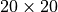
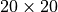
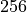

Multi-agent Reinforcement Learning With WarpDrive¶
Author: Sunil Srinivasa (sunil.srinivasa@salesforce.com), Tian Lan (tian.lan@salesforce.com), Huan Wang (huan.wang@salesforce.com) and Stephan Zheng(stephan.zheng@salesforce.com)
License: BSD 3-Clause “New” or “Revised” License
Generated: 2022-04-22T04:11:41.774547
This notebook introduces multi-agent reinforcement learning (MARL) with WarpDrive (Lan et al. https://arxiv.org/abs/2108.13976). WarpDrive is a flexible, lightweight, and easy-to-use open-source framework that implements end-to-end deep MARL on GPUs. WarpDrive enables orders-of-magnitude speedups compared to CPU-GPU implementations, using the parallelization capability of GPUs and several design choices to minimize communication overhead. WarpDrive also prioritizes user-friendliness - it has utility functions to easily build MARL environments in CUDA and quality-of-life tools to run end-to-end MARL using just a few lines of code, and is compatible with PyTorch. WarpDrive includes the following resources. code - https://github.com/salesforce/warp-drive documentation - http://opensource.salesforce.com/warp-drive/, and white paper - https://arxiv.org/abs/2108.13976.
Open in ![Open In Colab]()
Give us a ⭐ on Github | Check out the documentation | Join us on Slack
Setup¶
This notebook requires some packages besides pytorch-lightning.
[1]:
! pip install --quiet "ffmpeg-python" "torch>=1.6, <1.9" "torchmetrics>=0.6" "ipython[notebook]" "rl-warp-drive>=1.5.1" "pytorch-lightning>=1.4"
ERROR: Cannot install rl-warp-drive==1.5.1, rl-warp-drive==1.6, rl-warp-drive==1.6.1, rl-warp-drive==1.6.2, rl-warp-drive==1.6.3, torch<1.9 and >=1.6 and torchmetrics==0.6.0 because these package versions have conflicting dependencies.
ERROR: ResolutionImpossible: for help visit https://pip.pypa.io/en/latest/user_guide/#fixing-conflicting-dependencies
WARNING: You are using pip version 21.3.1; however, version 22.0.4 is available.
You should consider upgrading via the '/usr/bin/python3.8 -m pip install --upgrade pip' command.
⚠️ PLEASE NOTE: This notebook runs on a GPU runtime. If running on Colab, choose Runtime > Change runtime type from the menu, then select GPU in the ‘Hardware accelerator’ dropdown menu.
Introduction¶
This tutorial provides a demonstration of a multi-agent Reinforcement Learning (RL) training loop with WarpDrive. WarpDrive is a flexible, lightweight, and easy-to-use RL framework that implements end-to-end deep multi-agent RL on a single GPU (Graphics Processing Unit). Using the extreme parallelization capability of GPUs, it enables orders-of-magnitude faster RL compared to common implementations that blend CPU simulations and GPU models. WarpDrive is extremely efficient as it runs simulations across multiple agents and multiple environment replicas in parallel and completely eliminates the back-and-forth data copying between the CPU and the GPU.
We have integrated WarpDrive with the Pytorch Lightning framework, which greatly reduces the trainer boilerplate code, and improves training flexibility.
Below, we demonstrate how to use WarpDrive and PytorchLightning together to train a game of Tag where multiple tagger agents are trying to run after and tag multiple other runner agents. As such, the Warpdrive framework comprises several utility functions that help easily implement any (OpenAI-)*gym-style* RL environment, and furthermore, provides quality-of-life tools to train it end-to-end using just a few lines of code. You may familiarize yourself with WarpDrive with the help of these tutorials.
We invite everyone to contribute to WarpDrive, including adding new multi-agent environments, proposing new features and reporting issues on our open source repository.
[2]:
import logging
import matplotlib.pyplot as plt
import mpl_toolkits.mplot3d.art3d as art3d
import numpy as np
import torch
from example_envs.tag_continuous.tag_continuous import TagContinuous
# from IPython.display import HTML
from matplotlib import animation
from matplotlib.patches import Polygon
from pytorch_lightning import Trainer
from warp_drive.env_wrapper import EnvWrapper
from warp_drive.training.pytorch_lightning_trainer import CudaCallback, PerfStatsCallback, WarpDriveModule
[3]:
_NUM_AVAILABLE_GPUS = torch.cuda.device_count()
assert _NUM_AVAILABLE_GPUS > 0, "This notebook needs a GPU to run!"
[4]:
# Set logger level e.g., DEBUG, INFO, WARNING, ERROR.
logging.getLogger().setLevel(logging.ERROR)
Specify a set of run configurations for your experiments¶
The run configuration is a dictionary comprising the environment parameters, the trainer and the policy network settings, as well as configurations for saving.
For our experiment, we consider an environment wherein  taggers and
taggers and  runners play the game of Tag on a  plane. The game lasts timesteps. Each agent chooses it’s own acceleration and turn actions at every timestep, and we use mechanics to determine how the agents move over the grid. When a tagger gets close to a runner, the runner is tagged,
and is eliminated from the game. For the configuration below, the runners and taggers have the same unit skill levels, or top speeds.
runners play the game of Tag on a  plane. The game lasts timesteps. Each agent chooses it’s own acceleration and turn actions at every timestep, and we use mechanics to determine how the agents move over the grid. When a tagger gets close to a runner, the runner is tagged,
and is eliminated from the game. For the configuration below, the runners and taggers have the same unit skill levels, or top speeds.
We train the agents using environments or simulations running in parallel. With WarpDrive, each simulation runs on sepate GPU blocks.
There are two separate policy networks used for the tagger and runner agents. Each network is a fully-connected model with two layers each of  dimensions. We use the Advantage Actor Critic (A2C) algorithm for training. WarpDrive also currently provides the option to use the Proximal Policy Optimization (PPO) algorithm instead.
[5]:
run_config = dict(
name="tag_continuous",
# Environment settings.
env=dict(
# number of taggers in the environment
num_taggers=5,
# number of runners in the environment
num_runners=100,
# length of the (square) grid on which the game is played
grid_length=20.0,
# episode length in timesteps
episode_length=200,
# maximum acceleration
max_acceleration=0.1,
# minimum acceleration
min_acceleration=-0.1,
# 3*pi/4 radians
max_turn=2.35,
# -3*pi/4 radians
min_turn=-2.35,
# number of discretized accelerate actions
num_acceleration_levels=10,
# number of discretized turn actions
num_turn_levels=10,
# skill level for the tagger
skill_level_tagger=1.0,
# skill level for the runner
skill_level_runner=1.0,
# each agent only sees full or partial information
use_full_observation=False,
# flag to indicate if a runner stays in the game after getting tagged
runner_exits_game_after_tagged=True,
# number of other agents each agent can see
num_other_agents_observed=10,
# positive reward for the tagger upon tagging a runner
tag_reward_for_tagger=10.0,
# negative reward for the runner upon getting tagged
tag_penalty_for_runner=-10.0,
# reward at the end of the game for a runner that isn't tagged
end_of_game_reward_for_runner=1.0,
# margin between a tagger and runner to consider the runner as 'tagged'.
tagging_distance=0.02,
),
# Trainer settings.
trainer=dict(
# number of environment replicas (number of GPU blocks used)
num_envs=50,
# total batch size used for training per iteration (across all the environments)
train_batch_size=10000,
# total number of episodes to run the training for (can be arbitrarily high!)
num_episodes=50000,
),
# Policy network settings.
policy=dict(
runner=dict(
# flag indicating whether the model needs to be trained
to_train=True,
# algorithm used to train the policy
algorithm="A2C",
# discount rate
gamma=0.98,
# learning rate
lr=0.005,
# policy model settings
model=dict(type="fully_connected", fc_dims=[256, 256], model_ckpt_filepath=""),
),
tagger=dict(
to_train=True,
algorithm="A2C",
gamma=0.98,
lr=0.002,
model=dict(type="fully_connected", fc_dims=[256, 256], model_ckpt_filepath=""),
),
),
# Checkpoint saving setting.
saving=dict(
# how often (in iterations) to print the metrics
metrics_log_freq=10,
# how often (in iterations) to save the model parameters
model_params_save_freq=5000,
# base folder used for saving
basedir="/tmp",
# experiment name
name="continuous_tag",
# experiment tag
tag="example",
),
)
Instantiate the WarpDrive Module¶
In order to instantiate the WarpDrive module, we first use an environment wrapper to specify that the environment needs to be run on the GPU (via the use_cuda flag). Also, agents in the environment can share policy models; so we specify a dictionary to map each policy network model to the list of agent ids using that model.
[6]:
# Create a wrapped environment object via the EnvWrapper.
# Ensure that use_cuda is set to True (in order to run on the GPU).
env_wrapper = EnvWrapper(
TagContinuous(**run_config["env"]),
num_envs=run_config["trainer"]["num_envs"],
use_cuda=True,
)
# Agents can share policy models: this dictionary maps policy model names to agent ids.
policy_tag_to_agent_id_map = {
"tagger": list(env_wrapper.env.taggers),
"runner": list(env_wrapper.env.runners),
}
wd_module = WarpDriveModule(
env_wrapper=env_wrapper,
config=run_config,
policy_tag_to_agent_id_map=policy_tag_to_agent_id_map,
verbose=True,
)
Global seed set to 1650601003
Visualizing an episode roll-out before training¶
We have created a helper function (see below) to visualize an episode rollout. Internally, this function uses the WarpDrive module’s fetch_episode_states API to fetch the data arrays on the GPU for the duration of an entire episode. Specifically, we fetch the state arrays pertaining to agents’ x and y locations on the plane and indicators on which agents are still active in the game. Note that this function may be invoked at any time during training, and it will use the state of the policy
models at that time to sample actions and generate the visualization.
[7]:
def generate_tag_env_rollout_animation(
warp_drive_module,
fps=25,
tagger_color="#C843C3",
runner_color="#245EB6",
runner_not_in_game_color="#666666",
fig_width=6,
fig_height=6,
):
assert warp_drive_module is not None
episode_states = warp_drive_module.fetch_episode_states(["loc_x", "loc_y", "still_in_the_game"])
assert isinstance(episode_states, dict)
env = warp_drive_module.cuda_envs.env
fig, ax = plt.subplots(1, 1, figsize=(fig_width, fig_height)) # , constrained_layout=True
ax.remove()
ax = fig.add_subplot(1, 1, 1, projection="3d")
# Bounds
ax.set_xlim(0, 1)
ax.set_ylim(0, 1)
ax.set_zlim(-0.01, 0.01)
# Surface
corner_points = [(0, 0), (0, 1), (1, 1), (1, 0)]
poly = Polygon(corner_points, color=(0.1, 0.2, 0.5, 0.15))
ax.add_patch(poly)
art3d.pathpatch_2d_to_3d(poly, z=0, zdir="z")
# "Hide" side panes
ax.xaxis.set_pane_color((1.0, 1.0, 1.0, 0.0))
ax.yaxis.set_pane_color((1.0, 1.0, 1.0, 0.0))
ax.zaxis.set_pane_color((1.0, 1.0, 1.0, 0.0))
# Hide grid lines
ax.grid(False)
# Hide axes ticks
ax.set_xticks([])
ax.set_yticks([])
ax.set_zticks([])
# Hide axes
ax.set_axis_off()
# Set camera
ax.elev = 40
ax.azim = -55
ax.dist = 10
# Try to reduce whitespace
fig.subplots_adjust(left=0, right=1, bottom=-0.2, top=1)
# Plot init data
lines = [None for _ in range(env.num_agents)]
for idx in range(len(lines)):
if idx in env.taggers:
lines[idx] = ax.plot3D(
episode_states["loc_x"][:1, idx] / env.grid_length,
episode_states["loc_y"][:1, idx] / env.grid_length,
0,
color=tagger_color,
marker="o",
markersize=10,
)[0]
else: # runners
lines[idx] = ax.plot3D(
episode_states["loc_x"][:1, idx] / env.grid_length,
episode_states["loc_y"][:1, idx] / env.grid_length,
[0],
color=runner_color,
marker="o",
markersize=5,
)[0]
init_num_runners = env.num_agents - env.num_taggers
def _get_label(timestep, n_runners_alive, init_n_runners):
line1 = "Continuous Tag\n"
line2 = "Time Step:".ljust(14) + f"{timestep:4.0f}\n"
frac_runners_alive = n_runners_alive / init_n_runners
pct_runners_alive = f"{n_runners_alive:4} ({frac_runners_alive * 100:.0f}%)"
line3 = "Runners Left:".ljust(14) + pct_runners_alive
return line1 + line2 + line3
label = ax.text(
0,
0,
0.02,
_get_label(0, init_num_runners, init_num_runners).lower(),
)
label.set_fontsize(14)
label.set_fontweight("normal")
label.set_color("#666666")
def animate(i):
for idx, line in enumerate(lines):
line.set_data_3d(
episode_states["loc_x"][i : i + 1, idx] / env.grid_length,
episode_states["loc_y"][i : i + 1, idx] / env.grid_length,
np.zeros(1),
)
still_in_game = episode_states["still_in_the_game"][i, idx]
if still_in_game:
pass
else:
line.set_color(runner_not_in_game_color)
line.set_marker("")
n_runners_alive = episode_states["still_in_the_game"][i].sum() - env.num_taggers
label.set_text(_get_label(i, n_runners_alive, init_num_runners).lower())
ani = animation.FuncAnimation(fig, animate, np.arange(0, env.episode_length + 1), interval=1000.0 / fps)
plt.close()
return ani
The animation below shows a sample realization of the game episode before training, i.e., with randomly chosen agent actions. The taggers are marked in pink, while the blue agents are the runners. Both the taggers and runners move around randomly and about half the runners remain at the end of the episode.
[8]:
# anim = generate_tag_env_rollout_animation(wd_module)
# HTML(anim.to_html5_video())
Create the Lightning Trainer¶
Next, we create the trainer for training the WarpDrive model. We add the performance stats callbacks to the trainer to view the throughput performance of WarpDrive.
[9]:
log_freq = run_config["saving"]["metrics_log_freq"]
# Define callbacks.
cuda_callback = CudaCallback(module=wd_module)
perf_stats_callback = PerfStatsCallback(
batch_size=wd_module.training_batch_size,
num_iters=wd_module.num_iters,
log_freq=log_freq,
)
# Instantiate the PytorchLightning trainer with the callbacks.
# Also, set the number of gpus to 1, since this notebook uses just a single GPU.
num_gpus = 1
num_episodes = run_config["trainer"]["num_episodes"]
episode_length = run_config["env"]["episode_length"]
training_batch_size = run_config["trainer"]["train_batch_size"]
num_epochs = num_episodes * episode_length / training_batch_size
trainer = Trainer(
accelerator="gpu",
devices=num_gpus,
callbacks=[cuda_callback, perf_stats_callback],
max_epochs=num_epochs,
)
GPU available: True, used: True
TPU available: False, using: 0 TPU cores
IPU available: False, using: 0 IPUs
HPU available: False, using: 0 HPUs
[10]:
# Start tensorboard.
%load_ext tensorboard
%tensorboard --logdir lightning_logs/
Train the WarpDrive Module¶
Finally, we invoke training.
Note: please scroll up to the tensorboard cell to visualize the curves during training.
[11]:
trainer.fit(wd_module)
/home/AzDevOps_azpcontainer/.local/lib/python3.8/site-packages/pytorch_lightning/trainer/configuration_validator.py:376: LightningDeprecationWarning: The `Callback.on_batch_start` hook was deprecated in v1.6 and will be removed in v1.8. Please use `Callback.on_train_batch_start` instead.
rank_zero_deprecation(
/home/AzDevOps_azpcontainer/.local/lib/python3.8/site-packages/pytorch_lightning/trainer/configuration_validator.py:376: LightningDeprecationWarning: The `Callback.on_batch_end` hook was deprecated in v1.6 and will be removed in v1.8. Please use `Callback.on_train_batch_end` instead.
rank_zero_deprecation(
Missing logger folder: /__w/1/s/lightning_logs
LOCAL_RANK: 0 - CUDA_VISIBLE_DEVICES: [0,1]
| Name | Type | Params
------------------------------
------------------------------
0 Trainable params
0 Non-trainable params
0 Total params
0.000 Total estimated model params size (MB)
/home/AzDevOps_azpcontainer/.local/lib/python3.8/site-packages/pytorch_lightning/trainer/connectors/data_connector.py:240: PossibleUserWarning: The dataloader, train_dataloader, does not have many workers which may be a bottleneck. Consider increasing the value of the `num_workers` argument` (try 12 which is the number of cpus on this machine) in the `DataLoader` init to improve performance.
rank_zero_warn(
/home/AzDevOps_azpcontainer/.local/lib/python3.8/site-packages/pytorch_lightning/trainer/trainer.py:1927: PossibleUserWarning: The number of training batches (1) is smaller than the logging interval Trainer(log_every_n_steps=50). Set a lower value for log_every_n_steps if you want to see logs for the training epoch.
rank_zero_warn(
========================================
Metrics for policy 'runner'
========================================
VF loss coefficient : 0.01000
Entropy coefficient : 0.05000
Total loss : -0.29561
Policy loss : -0.09944
Value function loss : 4.22670
Mean rewards : -0.02825
Max. rewards : 1.00000
Min. rewards : -10.00000
Mean value function : -1.26719
Mean advantages : -0.02164
Mean (norm.) advantages : -0.02164
Mean (discounted) returns : -1.28883
Mean normalized returns : -1.28883
Mean entropy : 4.76890
Variance explained by the value function: 0.16321
Std. of action_0 over agents : 3.10107
Std. of action_0 over envs : 3.09726
Std. of action_0 over time : 3.10287
Std. of action_1 over agents : 3.03511
Std. of action_1 over envs : 3.03153
Std. of action_1 over time : 3.03523
Current timestep : 100000.00000
Gradient norm : 0.04779
Mean episodic reward : -458.86800
[Device 0]: Saving the results to the file '/tmp/continuous_tag/example/1650600997/results.json'
========================================
Metrics for policy 'tagger'
========================================
VF loss coefficient : 0.01000
Entropy coefficient : 0.05000
Total loss : 71.48376
Policy loss : 66.68478
Value function loss : 499.21271
Mean rewards : 0.58700
Max. rewards : 20.00000
Min. rewards : 0.00000
Mean value function : 4.72709
Mean advantages : 17.19324
Mean (norm.) advantages : 17.19324
Mean (discounted) returns : 21.92033
Mean normalized returns : 21.92033
Mean entropy : 3.86286
Variance explained by the value function: -0.01202
Std. of action_0 over agents : 2.20117
Std. of action_0 over envs : 2.34950
Std. of action_0 over time : 2.35609
Std. of action_1 over agents : 2.13672
Std. of action_1 over envs : 2.26055
Std. of action_1 over time : 2.26863
Current timestep : 100000.00000
Gradient norm : 1.10622
Mean episodic reward : 496.12000
[Device 0]: Saving the results to the file '/tmp/continuous_tag/example/1650600997/results.json'
========================================
Speed performance stats
========================================
Iteration : 10 / 1000
Mean training time per iter (ms) : 139.64
Mean steps per sec (training time) : 71614.70
/home/AzDevOps_azpcontainer/.local/lib/python3.8/site-packages/pytorch_lightning/trainer/connectors/logger_connector/result.py:229: UserWarning: You called `self.log('Current timestep_runner', ...)` in your `training_step` but the value needs to be floating point. Converting it to torch.float32.
warning_cache.warn(
/home/AzDevOps_azpcontainer/.local/lib/python3.8/site-packages/pytorch_lightning/trainer/connectors/logger_connector/result.py:229: UserWarning: You called `self.log('Current timestep_tagger', ...)` in your `training_step` but the value needs to be floating point. Converting it to torch.float32.
warning_cache.warn(
========================================
Metrics for policy 'runner'
========================================
VF loss coefficient : 0.01000
Entropy coefficient : 0.05000
Total loss : -0.13941
Policy loss : 0.05974
Value function loss : 3.92918
Mean rewards : -0.02666
Max. rewards : 1.00000
Min. rewards : -10.00000
Mean value function : -1.17205
Mean advantages : 0.01279
Mean (norm.) advantages : 0.01279
Mean (discounted) returns : -1.15927
Mean normalized returns : -1.15927
Mean entropy : 4.76878
Variance explained by the value function: 0.18872
Std. of action_0 over agents : 3.16038
Std. of action_0 over envs : 3.15714
Std. of action_0 over time : 3.16244
Std. of action_1 over agents : 3.30826
Std. of action_1 over envs : 3.30508
Std. of action_1 over time : 3.30887
Current timestep : 200000.00000
Gradient norm : 0.03368
Mean episodic reward : -563.87200
[Device 0]: Saving the results to the file '/tmp/continuous_tag/example/1650600997/results.json'
========================================
Metrics for policy 'tagger'
========================================
VF loss coefficient : 0.01000
Entropy coefficient : 0.05000
Total loss : 0.28682
Policy loss : -1.30073
Value function loss : 165.07660
Mean rewards : 0.55720
Max. rewards : 20.00000
Min. rewards : 0.00000
Mean value function : 26.87305
Mean advantages : -1.25896
Mean (norm.) advantages : -1.25896
Mean (discounted) returns : 25.61409
Mean normalized returns : 25.61409
Mean entropy : 1.26443
Variance explained by the value function: -0.09630
Std. of action_0 over agents : 2.01996
Std. of action_0 over envs : 2.10392
Std. of action_0 over time : 2.10761
Std. of action_1 over agents : 0.03658
Std. of action_1 over envs : 0.10289
Std. of action_1 over time : 0.16429
Current timestep : 200000.00000
Gradient norm : 0.77949
Mean episodic reward : 585.78000
[Device 0]: Saving the results to the file '/tmp/continuous_tag/example/1650600997/results.json'
========================================
Speed performance stats
========================================
Iteration : 20 / 1000
Mean training time per iter (ms) : 134.83
Mean steps per sec (training time) : 74165.85
========================================
Metrics for policy 'runner'
========================================
VF loss coefficient : 0.01000
Entropy coefficient : 0.05000
Total loss : -0.36544
Policy loss : -0.16869
Value function loss : 4.23149
Mean rewards : -0.02958
Max. rewards : 1.00000
Min. rewards : -10.00000
Mean value function : -1.26441
Mean advantages : -0.03540
Mean (norm.) advantages : -0.03540
Mean (discounted) returns : -1.29981
Mean normalized returns : -1.29981
Mean entropy : 4.78127
Variance explained by the value function: 0.19381
Std. of action_0 over agents : 3.17005
Std. of action_0 over envs : 3.16643
Std. of action_0 over time : 3.17118
Std. of action_1 over agents : 3.12740
Std. of action_1 over envs : 3.12359
Std. of action_1 over time : 3.12819
Current timestep : 300000.00000
Gradient norm : 0.05014
Mean episodic reward : -568.40400
[Device 0]: Saving the results to the file '/tmp/continuous_tag/example/1650600997/results.json'
========================================
Metrics for policy 'tagger'
========================================
VF loss coefficient : 0.01000
Entropy coefficient : 0.05000
Total loss : 1.72281
Policy loss : 0.04230
Value function loss : 177.68925
Mean rewards : 0.60780
Max. rewards : 20.00000
Min. rewards : 0.00000
Mean value function : 28.67383
Mean advantages : -0.02816
Mean (norm.) advantages : -0.02816
Mean (discounted) returns : 28.64566
Mean normalized returns : 28.64566
Mean entropy : 1.92779
Variance explained by the value function: -0.02407
Std. of action_0 over agents : 0.52569
Std. of action_0 over envs : 0.58831
Std. of action_0 over time : 0.59848
Std. of action_1 over agents : 1.45080
Std. of action_1 over envs : 1.51973
Std. of action_1 over time : 1.52414
Current timestep : 300000.00000
Gradient norm : 0.98253
Mean episodic reward : 588.54000
[Device 0]: Saving the results to the file '/tmp/continuous_tag/example/1650600997/results.json'
========================================
Speed performance stats
========================================
Iteration : 30 / 1000
Mean training time per iter (ms) : 134.78
Mean steps per sec (training time) : 74196.02
========================================
Metrics for policy 'runner'
========================================
VF loss coefficient : 0.01000
Entropy coefficient : 0.05000
Total loss : -0.51885
Policy loss : -0.32013
Value function loss : 4.05303
Mean rewards : -0.02816
Max. rewards : 1.00000
Min. rewards : -10.00000
Mean value function : -1.12684
Mean advantages : -0.06705
Mean (norm.) advantages : -0.06705
Mean (discounted) returns : -1.19390
Mean normalized returns : -1.19390
Mean entropy : 4.78491
Variance explained by the value function: 0.19311
Std. of action_0 over agents : 3.15052
Std. of action_0 over envs : 3.14774
Std. of action_0 over time : 3.15191
Std. of action_1 over agents : 3.16333
Std. of action_1 over envs : 3.16009
Std. of action_1 over time : 3.16444
Current timestep : 400000.00000
Gradient norm : 0.02620
Mean episodic reward : -561.13800
[Device 0]: Saving the results to the file '/tmp/continuous_tag/example/1650600997/results.json'
========================================
Metrics for policy 'tagger'
========================================
VF loss coefficient : 0.01000
Entropy coefficient : 0.05000
Total loss : 3.69027
Policy loss : 2.25955
Value function loss : 152.33397
Mean rewards : 0.58580
Max. rewards : 20.00000
Min. rewards : 0.00000
Mean value function : 24.85278
Mean advantages : 1.14076
Mean (norm.) advantages : 1.14076
Mean (discounted) returns : 25.99354
Mean normalized returns : 25.99354
Mean entropy : 1.85237
Variance explained by the value function: -0.01995
Std. of action_0 over agents : 0.56588
Std. of action_0 over envs : 0.64696
Std. of action_0 over time : 0.65732
Std. of action_1 over agents : 1.34437
Std. of action_1 over envs : 1.43722
Std. of action_1 over time : 1.44228
Current timestep : 400000.00000
Gradient norm : 0.83519
Mean episodic reward : 584.16000
[Device 0]: Saving the results to the file '/tmp/continuous_tag/example/1650600997/results.json'
========================================
Speed performance stats
========================================
Iteration : 40 / 1000
Mean training time per iter (ms) : 133.89
Mean steps per sec (training time) : 74686.90
========================================
Metrics for policy 'runner'
========================================
VF loss coefficient : 0.01000
Entropy coefficient : 0.05000
Total loss : -0.20911
Policy loss : -0.00956
Value function loss : 3.96707
Mean rewards : -0.02621
Max. rewards : 1.00000
Min. rewards : -10.00000
Mean value function : -1.13329
Mean advantages : -0.00148
Mean (norm.) advantages : -0.00148
Mean (discounted) returns : -1.13477
Mean normalized returns : -1.13477
Mean entropy : 4.78451
Variance explained by the value function: 0.17726
Std. of action_0 over agents : 3.18450
Std. of action_0 over envs : 3.18058
Std. of action_0 over time : 3.18559
Std. of action_1 over agents : 3.24211
Std. of action_1 over envs : 3.23863
Std. of action_1 over time : 3.24272
Current timestep : 500000.00000
Gradient norm : 0.02311
Mean episodic reward : -545.78200
[Device 0]: Saving the results to the file '/tmp/continuous_tag/example/1650600997/results.json'
========================================
Metrics for policy 'tagger'
========================================
VF loss coefficient : 0.01000
Entropy coefficient : 0.05000
Total loss : -0.63752
Policy loss : -2.03540
Value function loss : 151.13307
Mean rewards : 0.55380
Max. rewards : 20.00000
Min. rewards : 0.00000
Mean value function : 25.83076
Mean advantages : -0.89841
Mean (norm.) advantages : -0.89841
Mean (discounted) returns : 24.93235
Mean normalized returns : 24.93235
Mean entropy : 2.26906
Variance explained by the value function: 0.04017
Std. of action_0 over agents : 0.87775
Std. of action_0 over envs : 1.06517
Std. of action_0 over time : 1.07649
Std. of action_1 over agents : 2.67889
Std. of action_1 over envs : 2.77255
Std. of action_1 over time : 2.77483
Current timestep : 500000.00000
Gradient norm : 1.02381
Mean episodic reward : 571.20000
[Device 0]: Saving the results to the file '/tmp/continuous_tag/example/1650600997/results.json'
========================================
Speed performance stats
========================================
Iteration : 50 / 1000
Mean training time per iter (ms) : 133.29
Mean steps per sec (training time) : 75025.85
========================================
Metrics for policy 'runner'
========================================
VF loss coefficient : 0.01000
Entropy coefficient : 0.05000
Total loss : -0.44279
Policy loss : -0.24555
Value function loss : 4.19776
Mean rewards : -0.02866
Max. rewards : 1.00000
Min. rewards : -10.00000
Mean value function : -1.17080
Mean advantages : -0.05098
Mean (norm.) advantages : -0.05098
Mean (discounted) returns : -1.22179
Mean normalized returns : -1.22179
Mean entropy : 4.78432
Variance explained by the value function: 0.17778
Std. of action_0 over agents : 3.17138
Std. of action_0 over envs : 3.16814
Std. of action_0 over time : 3.17295
Std. of action_1 over agents : 3.18664
Std. of action_1 over envs : 3.18346
Std. of action_1 over time : 3.18842
Current timestep : 600000.00000
Gradient norm : 0.01910
Mean episodic reward : -569.85800
[Device 0]: Saving the results to the file '/tmp/continuous_tag/example/1650600997/results.json'
========================================
Metrics for policy 'tagger'
========================================
VF loss coefficient : 0.01000
Entropy coefficient : 0.05000
Total loss : 0.19026
Policy loss : -1.14752
Value function loss : 141.49873
Mean rewards : 0.59960
Max. rewards : 20.00000
Min. rewards : 0.00000
Mean value function : 27.95154
Mean advantages : -0.79166
Mean (norm.) advantages : -0.79166
Mean (discounted) returns : 27.15989
Mean normalized returns : 27.15989
Mean entropy : 1.54421
Variance explained by the value function: 0.03882
Std. of action_0 over agents : 0.68900
Std. of action_0 over envs : 0.82649
Std. of action_0 over time : 0.84436
Std. of action_1 over agents : 1.53829
Std. of action_1 over envs : 1.79476
Std. of action_1 over time : 1.80652
Current timestep : 600000.00000
Gradient norm : 0.96701
Mean episodic reward : 592.64000
[Device 0]: Saving the results to the file '/tmp/continuous_tag/example/1650600997/results.json'
========================================
Speed performance stats
========================================
Iteration : 60 / 1000
Mean training time per iter (ms) : 132.84
Mean steps per sec (training time) : 75276.37
========================================
Metrics for policy 'runner'
========================================
VF loss coefficient : 0.01000
Entropy coefficient : 0.05000
Total loss : -0.17643
Policy loss : 0.02091
Value function loss : 4.20877
Mean rewards : -0.02961
Max. rewards : 1.00000
Min. rewards : -10.00000
Mean value function : -1.26399
Mean advantages : 0.00456
Mean (norm.) advantages : 0.00456
Mean (discounted) returns : -1.25943
Mean normalized returns : -1.25943
Mean entropy : 4.78850
Variance explained by the value function: 0.19216
Std. of action_0 over agents : 3.19524
Std. of action_0 over envs : 3.19180
Std. of action_0 over time : 3.19651
Std. of action_1 over agents : 3.19286
Std. of action_1 over envs : 3.18921
Std. of action_1 over time : 3.19416
Current timestep : 700000.00000
Gradient norm : 0.02438
Mean episodic reward : -586.91200
[Device 0]: Saving the results to the file '/tmp/continuous_tag/example/1650600997/results.json'
========================================
Metrics for policy 'tagger'
========================================
VF loss coefficient : 0.01000
Entropy coefficient : 0.05000
Total loss : 1.17608
Policy loss : -0.22491
Value function loss : 147.56619
Mean rewards : 0.61340
Max. rewards : 20.00000
Min. rewards : 0.00000
Mean value function : 27.25769
Mean advantages : -0.16004
Mean (norm.) advantages : -0.16004
Mean (discounted) returns : 27.09766
Mean normalized returns : 27.09766
Mean entropy : 1.49357
Variance explained by the value function: 0.08838
Std. of action_0 over agents : 0.45946
Std. of action_0 over envs : 0.49755
Std. of action_0 over time : 0.50076
Std. of action_1 over agents : 1.86805
Std. of action_1 over envs : 2.02685
Std. of action_1 over time : 2.03246
Current timestep : 700000.00000
Gradient norm : 0.84228
Mean episodic reward : 607.84000
[Device 0]: Saving the results to the file '/tmp/continuous_tag/example/1650600997/results.json'
========================================
Speed performance stats
========================================
Iteration : 70 / 1000
Mean training time per iter (ms) : 132.56
Mean steps per sec (training time) : 75434.75
========================================
Metrics for policy 'runner'
========================================
VF loss coefficient : 0.01000
Entropy coefficient : 0.05000
Total loss : -0.37541
Policy loss : -0.17783
Value function loss : 4.18084
Mean rewards : -0.02972
Max. rewards : 1.00000
Min. rewards : -10.00000
Mean value function : -1.21098
Mean advantages : -0.03708
Mean (norm.) advantages : -0.03708
Mean (discounted) returns : -1.24806
Mean normalized returns : -1.24806
Mean entropy : 4.78777
Variance explained by the value function: 0.19617
Std. of action_0 over agents : 3.16429
Std. of action_0 over envs : 3.16138
Std. of action_0 over time : 3.16669
Std. of action_1 over agents : 3.19662
Std. of action_1 over envs : 3.19409
Std. of action_1 over time : 3.19849
Current timestep : 800000.00000
Gradient norm : 0.02269
Mean episodic reward : -583.45200
[Device 0]: Saving the results to the file '/tmp/continuous_tag/example/1650600997/results.json'
========================================
Metrics for policy 'tagger'
========================================
VF loss coefficient : 0.01000
Entropy coefficient : 0.05000
Total loss : 0.97793
Policy loss : -0.35443
Value function loss : 140.94687
Mean rewards : 0.61060
Max. rewards : 20.00000
Min. rewards : 0.00000
Mean value function : 26.67221
Mean advantages : -0.16298
Mean (norm.) advantages : -0.16298
Mean (discounted) returns : 26.50922
Mean normalized returns : 26.50922
Mean entropy : 1.54200
Variance explained by the value function: 0.10822
Std. of action_0 over agents : 0.17347
Std. of action_0 over envs : 0.28422
Std. of action_0 over time : 0.29403
Std. of action_1 over agents : 2.31733
Std. of action_1 over envs : 2.39203
Std. of action_1 over time : 2.39413
Current timestep : 800000.00000
Gradient norm : 0.76039
Mean episodic reward : 604.00000
[Device 0]: Saving the results to the file '/tmp/continuous_tag/example/1650600997/results.json'
========================================
Speed performance stats
========================================
Iteration : 80 / 1000
Mean training time per iter (ms) : 132.37
Mean steps per sec (training time) : 75543.18
========================================
Metrics for policy 'runner'
========================================
VF loss coefficient : 0.01000
Entropy coefficient : 0.05000
Total loss : -0.35127
Policy loss : -0.15415
Value function loss : 4.22053
Mean rewards : -0.03042
Max. rewards : 1.00000
Min. rewards : -10.00000
Mean value function : -1.21477
Mean advantages : -0.03194
Mean (norm.) advantages : -0.03194
Mean (discounted) returns : -1.24672
Mean normalized returns : -1.24672
Mean entropy : 4.78653
Variance explained by the value function: 0.19839
Std. of action_0 over agents : 3.15758
Std. of action_0 over envs : 3.15373
Std. of action_0 over time : 3.15893
Std. of action_1 over agents : 3.19264
Std. of action_1 over envs : 3.18938
Std. of action_1 over time : 3.19414
Current timestep : 900000.00000
Gradient norm : 0.02952
Mean episodic reward : -597.38200
[Device 0]: Saving the results to the file '/tmp/continuous_tag/example/1650600997/results.json'
========================================
Metrics for policy 'tagger'
========================================
VF loss coefficient : 0.01000
Entropy coefficient : 0.05000
Total loss : 1.64220
Policy loss : 0.34608
Value function loss : 138.46170
Mean rewards : 0.62180
Max. rewards : 20.00000
Min. rewards : 0.00000
Mean value function : 25.70090
Mean advantages : 0.34612
Mean (norm.) advantages : 0.34612
Mean (discounted) returns : 26.04702
Mean normalized returns : 26.04702
Mean entropy : 1.76990
Variance explained by the value function: 0.16364
Std. of action_0 over agents : 0.44804
Std. of action_0 over envs : 0.49295
Std. of action_0 over time : 0.49739
Std. of action_1 over agents : 2.28808
Std. of action_1 over envs : 2.38469
Std. of action_1 over time : 2.38598
Current timestep : 900000.00000
Gradient norm : 0.87399
Mean episodic reward : 616.32000
[Device 0]: Saving the results to the file '/tmp/continuous_tag/example/1650600997/results.json'
========================================
Speed performance stats
========================================
Iteration : 90 / 1000
Mean training time per iter (ms) : 132.34
Mean steps per sec (training time) : 75563.67
========================================
Metrics for policy 'runner'
========================================
VF loss coefficient : 0.01000
Entropy coefficient : 0.05000
Total loss : 0.10690
Policy loss : 0.30437
Value function loss : 4.17746
Mean rewards : -0.03019
Max. rewards : 1.00000
Min. rewards : -10.00000
Mean value function : -1.31399
Mean advantages : 0.06380
Mean (norm.) advantages : 0.06380
Mean (discounted) returns : -1.25019
Mean normalized returns : -1.25019
Mean entropy : 4.78486
Variance explained by the value function: 0.20020
Std. of action_0 over agents : 3.20304
Std. of action_0 over envs : 3.19988
Std. of action_0 over time : 3.20410
Std. of action_1 over agents : 3.16478
Std. of action_1 over envs : 3.16108
Std. of action_1 over time : 3.16590
Current timestep : 1000000.00000
Gradient norm : 0.01797
Mean episodic reward : -609.90000
[Device 0]: Saving the results to the file '/tmp/continuous_tag/example/1650600997/results.json'
========================================
Metrics for policy 'tagger'
========================================
VF loss coefficient : 0.01000
Entropy coefficient : 0.05000
Total loss : 1.83317
Policy loss : 0.55187
Value function loss : 135.31894
Mean rewards : 0.62240
Max. rewards : 20.00000
Min. rewards : 0.00000
Mean value function : 25.07043
Mean advantages : 0.60529
Mean (norm.) advantages : 0.60529
Mean (discounted) returns : 25.67571
Mean normalized returns : 25.67571
Mean entropy : 1.43778
Variance explained by the value function: 0.19644
Std. of action_0 over agents : 0.41113
Std. of action_0 over envs : 0.47021
Std. of action_0 over time : 0.47753
Std. of action_1 over agents : 1.64128
Std. of action_1 over envs : 1.94565
Std. of action_1 over time : 1.96274
Current timestep : 1000000.00000
Gradient norm : 0.85278
Mean episodic reward : 627.50000
[Device 0]: Saving the results to the file '/tmp/continuous_tag/example/1650600997/results.json'
========================================
Speed performance stats
========================================
Iteration : 100 / 1000
Mean training time per iter (ms) : 132.41
Mean steps per sec (training time) : 75521.56
========================================
Metrics for policy 'runner'
========================================
VF loss coefficient : 0.01000
Entropy coefficient : 0.05000
Total loss : -0.39392
Policy loss : -0.19717
Value function loss : 4.26200
Mean rewards : -0.03067
Max. rewards : 1.00000
Min. rewards : -10.00000
Mean value function : -1.22065
Mean advantages : -0.04117
Mean (norm.) advantages : -0.04117
Mean (discounted) returns : -1.26182
Mean normalized returns : -1.26182
Mean entropy : 4.78732
Variance explained by the value function: 0.19860
Std. of action_0 over agents : 3.18279
Std. of action_0 over envs : 3.17968
Std. of action_0 over time : 3.18411
Std. of action_1 over agents : 3.16197
Std. of action_1 over envs : 3.15870
Std. of action_1 over time : 3.16361
Current timestep : 1100000.00000
Gradient norm : 0.02074
Mean episodic reward : -604.74600
[Device 0]: Saving the results to the file '/tmp/continuous_tag/example/1650600997/results.json'
========================================
Metrics for policy 'tagger'
========================================
VF loss coefficient : 0.01000
Entropy coefficient : 0.05000
Total loss : 2.75310
Policy loss : 1.46008
Value function loss : 139.07147
Mean rewards : 0.62660
Max. rewards : 20.00000
Min. rewards : 0.00000
Mean value function : 24.75457
Mean advantages : 0.96995
Mean (norm.) advantages : 0.96995
Mean (discounted) returns : 25.72451
Mean normalized returns : 25.72451
Mean entropy : 1.95383
Variance explained by the value function: 0.23910
Std. of action_0 over agents : 0.33641
Std. of action_0 over envs : 0.44263
Std. of action_0 over time : 0.46271
Std. of action_1 over agents : 2.21386
Std. of action_1 over envs : 2.32202
Std. of action_1 over time : 2.32489
Current timestep : 1100000.00000
Gradient norm : 0.92750
Mean episodic reward : 622.28000
[Device 0]: Saving the results to the file '/tmp/continuous_tag/example/1650600997/results.json'
========================================
Speed performance stats
========================================
Iteration : 110 / 1000
Mean training time per iter (ms) : 132.54
Mean steps per sec (training time) : 75450.48
========================================
Metrics for policy 'runner'
========================================
VF loss coefficient : 0.01000
Entropy coefficient : 0.05000
Total loss : -0.39002
Policy loss : -0.19326
Value function loss : 4.27940
Mean rewards : -0.03079
Max. rewards : 1.00000
Min. rewards : -10.00000
Mean value function : -1.22350
Mean advantages : -0.04023
Mean (norm.) advantages : -0.04023
Mean (discounted) returns : -1.26373
Mean normalized returns : -1.26373
Mean entropy : 4.79115
Variance explained by the value function: 0.19672
Std. of action_0 over agents : 3.17452
Std. of action_0 over envs : 3.17079
Std. of action_0 over time : 3.17553
Std. of action_1 over agents : 3.19096
Std. of action_1 over envs : 3.18752
Std. of action_1 over time : 3.19235
Current timestep : 1200000.00000
Gradient norm : 0.02688
Mean episodic reward : -605.87600
[Device 0]: Saving the results to the file '/tmp/continuous_tag/example/1650600997/results.json'
========================================
Metrics for policy 'tagger'
========================================
VF loss coefficient : 0.01000
Entropy coefficient : 0.05000
Total loss : 1.38344
Policy loss : 0.15169
Value function loss : 132.42581
Mean rewards : 0.63200
Max. rewards : 20.00000
Min. rewards : 0.00000
Mean value function : 25.21257
Mean advantages : 0.38275
Mean (norm.) advantages : 0.38275
Mean (discounted) returns : 25.59531
Mean normalized returns : 25.59531
Mean entropy : 1.85001
Variance explained by the value function: 0.26496
Std. of action_0 over agents : 0.54090
Std. of action_0 over envs : 0.59882
Std. of action_0 over time : 0.61370
Std. of action_1 over agents : 1.77144
Std. of action_1 over envs : 2.02314
Std. of action_1 over time : 2.04445
Current timestep : 1200000.00000
Gradient norm : 1.05419
Mean episodic reward : 624.70000
[Device 0]: Saving the results to the file '/tmp/continuous_tag/example/1650600997/results.json'
========================================
Speed performance stats
========================================
Iteration : 120 / 1000
Mean training time per iter (ms) : 132.37
Mean steps per sec (training time) : 75547.62
========================================
Metrics for policy 'runner'
========================================
VF loss coefficient : 0.01000
Entropy coefficient : 0.05000
Total loss : 0.07034
Policy loss : 0.26758
Value function loss : 4.21671
Mean rewards : -0.03039
Max. rewards : 1.00000
Min. rewards : -10.00000
Mean value function : -1.32277
Mean advantages : 0.05596
Mean (norm.) advantages : 0.05596
Mean (discounted) returns : -1.26681
Mean normalized returns : -1.26681
Mean entropy : 4.78819
Variance explained by the value function: 0.20097
Std. of action_0 over agents : 3.18787
Std. of action_0 over envs : 3.18447
Std. of action_0 over time : 3.18937
Std. of action_1 over agents : 3.18469
Std. of action_1 over envs : 3.18079
Std. of action_1 over time : 3.18619
Current timestep : 1300000.00000
Gradient norm : 0.02152
Mean episodic reward : -614.82200
[Device 0]: Saving the results to the file '/tmp/continuous_tag/example/1650600997/results.json'
========================================
Metrics for policy 'tagger'
========================================
VF loss coefficient : 0.01000
Entropy coefficient : 0.05000
Total loss : -1.28483
Policy loss : -2.41039
Value function loss : 120.68580
Mean rewards : 0.62540
Max. rewards : 20.00000
Min. rewards : 0.00000
Mean value function : 26.84370
Mean advantages : -1.51105
Mean (norm.) advantages : -1.51105
Mean (discounted) returns : 25.33265
Mean normalized returns : 25.33265
Mean entropy : 1.62589
Variance explained by the value function: 0.29816
Std. of action_0 over agents : 0.50313
Std. of action_0 over envs : 0.59231
Std. of action_0 over time : 0.61607
Std. of action_1 over agents : 1.22392
Std. of action_1 over envs : 1.56280
Std. of action_1 over time : 1.62526
Current timestep : 1300000.00000
Gradient norm : 0.96978
Mean episodic reward : 631.48000
[Device 0]: Saving the results to the file '/tmp/continuous_tag/example/1650600997/results.json'
========================================
Speed performance stats
========================================
Iteration : 130 / 1000
Mean training time per iter (ms) : 132.22
Mean steps per sec (training time) : 75632.89
========================================
Metrics for policy 'runner'
========================================
VF loss coefficient : 0.01000
Entropy coefficient : 0.05000
Total loss : 0.00544
Policy loss : 0.20296
Value function loss : 4.18451
Mean rewards : -0.02998
Max. rewards : 1.00000
Min. rewards : -10.00000
Mean value function : -1.27892
Mean advantages : 0.04237
Mean (norm.) advantages : 0.04237
Mean (discounted) returns : -1.23654
Mean normalized returns : -1.23654
Mean entropy : 4.78746
Variance explained by the value function: 0.19364
Std. of action_0 over agents : 3.16542
Std. of action_0 over envs : 3.16184
Std. of action_0 over time : 3.16614
Std. of action_1 over agents : 3.19429
Std. of action_1 over envs : 3.19155
Std. of action_1 over time : 3.19567
Current timestep : 1400000.00000
Gradient norm : 0.02590
Mean episodic reward : -608.21800
[Device 0]: Saving the results to the file '/tmp/continuous_tag/example/1650600997/results.json'
========================================
Metrics for policy 'tagger'
========================================
VF loss coefficient : 0.01000
Entropy coefficient : 0.05000
Total loss : -0.18401
Policy loss : -1.24549
Value function loss : 117.24991
Mean rewards : 0.62040
Max. rewards : 20.00000
Min. rewards : 0.00000
Mean value function : 24.58486
Mean advantages : -0.49179
Mean (norm.) advantages : -0.49179
Mean (discounted) returns : 24.09308
Mean normalized returns : 24.09308
Mean entropy : 2.22046
Variance explained by the value function: 0.33025
Std. of action_0 over agents : 1.10082
Std. of action_0 over envs : 1.21927
Std. of action_0 over time : 1.27917
Std. of action_1 over agents : 1.50083
Std. of action_1 over envs : 1.78938
Std. of action_1 over time : 1.83957
Current timestep : 1400000.00000
Gradient norm : 0.86178
Mean episodic reward : 626.04000
[Device 0]: Saving the results to the file '/tmp/continuous_tag/example/1650600997/results.json'
========================================
Speed performance stats
========================================
Iteration : 140 / 1000
Mean training time per iter (ms) : 132.06
Mean steps per sec (training time) : 75722.11
========================================
Metrics for policy 'runner'
========================================
VF loss coefficient : 0.01000
Entropy coefficient : 0.05000
Total loss : -0.41031
Policy loss : -0.21337
Value function loss : 4.25794
Mean rewards : -0.03000
Max. rewards : 1.00000
Min. rewards : -10.00000
Mean value function : -1.20284
Mean advantages : -0.04444
Mean (norm.) advantages : -0.04444
Mean (discounted) returns : -1.24728
Mean normalized returns : -1.24728
Mean entropy : 4.79041
Variance explained by the value function: 0.19141
Std. of action_0 over agents : 3.17172
Std. of action_0 over envs : 3.16820
Std. of action_0 over time : 3.17362
Std. of action_1 over agents : 3.18974
Std. of action_1 over envs : 3.18661
Std. of action_1 over time : 3.19123
Current timestep : 1500000.00000
Gradient norm : 0.01839
Mean episodic reward : -598.17600
[Device 0]: Saving the results to the file '/tmp/continuous_tag/example/1650600997/results.json'
========================================
Metrics for policy 'tagger'
========================================
VF loss coefficient : 0.01000
Entropy coefficient : 0.05000
Total loss : 1.32612
Policy loss : 0.24926
Value function loss : 121.56894
Mean rewards : 0.61660
Max. rewards : 30.00000
Min. rewards : 0.00000
Mean value function : 23.76665
Mean advantages : 0.15925
Mean (norm.) advantages : 0.15925
Mean (discounted) returns : 23.92591
Mean normalized returns : 23.92591
Mean entropy : 2.77672
Variance explained by the value function: 0.37911
Std. of action_0 over agents : 1.59717
Std. of action_0 over envs : 1.64885
Std. of action_0 over time : 1.65476
Std. of action_1 over agents : 2.29025
Std. of action_1 over envs : 2.40091
Std. of action_1 over time : 2.41089
Current timestep : 1500000.00000
Gradient norm : 1.04956
Mean episodic reward : 617.52000
[Device 0]: Saving the results to the file '/tmp/continuous_tag/example/1650600997/results.json'
========================================
Speed performance stats
========================================
Iteration : 150 / 1000
Mean training time per iter (ms) : 131.96
Mean steps per sec (training time) : 75778.85
========================================
Metrics for policy 'runner'
========================================
VF loss coefficient : 0.01000
Entropy coefficient : 0.05000
Total loss : -0.30629
Policy loss : -0.10944
Value function loss : 4.25746
Mean rewards : -0.02960
Max. rewards : 1.00000
Min. rewards : -10.00000
Mean value function : -1.22184
Mean advantages : -0.02271
Mean (norm.) advantages : -0.02271
Mean (discounted) returns : -1.24455
Mean normalized returns : -1.24455
Mean entropy : 4.78840
Variance explained by the value function: 0.18661
Std. of action_0 over agents : 3.18294
Std. of action_0 over envs : 3.17974
Std. of action_0 over time : 3.18427
Std. of action_1 over agents : 3.18077
Std. of action_1 over envs : 3.17743
Std. of action_1 over time : 3.18236
Current timestep : 1600000.00000
Gradient norm : 0.02283
Mean episodic reward : -594.66800
[Device 0]: Saving the results to the file '/tmp/continuous_tag/example/1650600997/results.json'
========================================
Metrics for policy 'tagger'
========================================
VF loss coefficient : 0.01000
Entropy coefficient : 0.05000
Total loss : 0.11075
Policy loss : -0.99814
Value function loss : 124.14204
Mean rewards : 0.61020
Max. rewards : 20.00000
Min. rewards : 0.00000
Mean value function : 24.20610
Mean advantages : -0.38055
Mean (norm.) advantages : -0.38055
Mean (discounted) returns : 23.82555
Mean normalized returns : 23.82555
Mean entropy : 2.65065
Variance explained by the value function: 0.36260
Std. of action_0 over agents : 1.31017
Std. of action_0 over envs : 1.38641
Std. of action_0 over time : 1.39297
Std. of action_1 over agents : 2.24370
Std. of action_1 over envs : 2.36572
Std. of action_1 over time : 2.37353
Current timestep : 1600000.00000
Gradient norm : 0.86174
Mean episodic reward : 614.16000
[Device 0]: Saving the results to the file '/tmp/continuous_tag/example/1650600997/results.json'
========================================
Speed performance stats
========================================
Iteration : 160 / 1000
Mean training time per iter (ms) : 131.89
Mean steps per sec (training time) : 75822.87
========================================
Metrics for policy 'runner'
========================================
VF loss coefficient : 0.01000
Entropy coefficient : 0.05000
Total loss : 0.02414
Policy loss : 0.22181
Value function loss : 4.18004
Mean rewards : -0.03014
Max. rewards : 1.00000
Min. rewards : -10.00000
Mean value function : -1.30193
Mean advantages : 0.04642
Mean (norm.) advantages : 0.04642
Mean (discounted) returns : -1.25551
Mean normalized returns : -1.25551
Mean entropy : 4.78947
Variance explained by the value function: 0.20049
Std. of action_0 over agents : 3.19362
Std. of action_0 over envs : 3.19033
Std. of action_0 over time : 3.19515
Std. of action_1 over agents : 3.13914
Std. of action_1 over envs : 3.13572
Std. of action_1 over time : 3.14080
Current timestep : 1700000.00000
Gradient norm : 0.01649
Mean episodic reward : -610.47400
[Device 0]: Saving the results to the file '/tmp/continuous_tag/example/1650600997/results.json'
========================================
Metrics for policy 'tagger'
========================================
VF loss coefficient : 0.01000
Entropy coefficient : 0.05000
Total loss : -0.32916
Policy loss : -1.36375
Value function loss : 115.13750
Mean rewards : 0.62180
Max. rewards : 20.00000
Min. rewards : 0.00000
Mean value function : 24.30268
Mean advantages : -0.59685
Mean (norm.) advantages : -0.59685
Mean (discounted) returns : 23.70583
Mean normalized returns : 23.70583
Mean entropy : 2.33580
Variance explained by the value function: 0.39727
Std. of action_0 over agents : 0.94601
Std. of action_0 over envs : 1.08593
Std. of action_0 over time : 1.21527
Std. of action_1 over agents : 2.09410
Std. of action_1 over envs : 2.25233
Std. of action_1 over time : 2.26746
Current timestep : 1700000.00000
Gradient norm : 1.10716
Mean episodic reward : 628.58000
[Device 0]: Saving the results to the file '/tmp/continuous_tag/example/1650600997/results.json'
========================================
Speed performance stats
========================================
Iteration : 170 / 1000
Mean training time per iter (ms) : 131.79
Mean steps per sec (training time) : 75876.73
========================================
Metrics for policy 'runner'
========================================
VF loss coefficient : 0.01000
Entropy coefficient : 0.05000
Total loss : -0.20829
Policy loss : -0.01122
Value function loss : 4.24434
Mean rewards : -0.03009
Max. rewards : 1.00000
Min. rewards : -10.00000
Mean value function : -1.24558
Mean advantages : -0.00225
Mean (norm.) advantages : -0.00225
Mean (discounted) returns : -1.24783
Mean normalized returns : -1.24783
Mean entropy : 4.79017
Variance explained by the value function: 0.19038
Std. of action_0 over agents : 3.15255
Std. of action_0 over envs : 3.14831
Std. of action_0 over time : 3.15344
Std. of action_1 over agents : 3.16293
Std. of action_1 over envs : 3.15896
Std. of action_1 over time : 3.16376
Current timestep : 1800000.00000
Gradient norm : 0.01817
Mean episodic reward : -606.14600
[Device 0]: Saving the results to the file '/tmp/continuous_tag/example/1650600997/results.json'
========================================
Metrics for policy 'tagger'
========================================
VF loss coefficient : 0.01000
Entropy coefficient : 0.05000
Total loss : 0.19917
Policy loss : -0.77462
Value function loss : 109.51952
Mean rewards : 0.62060
Max. rewards : 20.00000
Min. rewards : 0.00000
Mean value function : 23.86355
Mean advantages : -0.33225
Mean (norm.) advantages : -0.33225
Mean (discounted) returns : 23.53131
Mean normalized returns : 23.53131
Mean entropy : 2.42816
Variance explained by the value function: 0.42407
Std. of action_0 over agents : 1.38931
Std. of action_0 over envs : 1.44448
Std. of action_0 over time : 1.47183
Std. of action_1 over agents : 2.31901
Std. of action_1 over envs : 2.42196
Std. of action_1 over time : 2.43184
Current timestep : 1800000.00000
Gradient norm : 1.05716
Mean episodic reward : 623.88000
[Device 0]: Saving the results to the file '/tmp/continuous_tag/example/1650600997/results.json'
========================================
Speed performance stats
========================================
Iteration : 180 / 1000
Mean training time per iter (ms) : 131.91
Mean steps per sec (training time) : 75809.11
========================================
Metrics for policy 'runner'
========================================
VF loss coefficient : 0.01000
Entropy coefficient : 0.05000
Total loss : -0.42851
Policy loss : -0.23205
Value function loss : 4.29204
Mean rewards : -0.03097
Max. rewards : 1.00000
Min. rewards : -10.00000
Mean value function : -1.20935
Mean advantages : -0.04841
Mean (norm.) advantages : -0.04841
Mean (discounted) returns : -1.25776
Mean normalized returns : -1.25776
Mean entropy : 4.78749
Variance explained by the value function: 0.19585
Std. of action_0 over agents : 3.18641
Std. of action_0 over envs : 3.18215
Std. of action_0 over time : 3.18681
Std. of action_1 over agents : 3.19706
Std. of action_1 over envs : 3.19332
Std. of action_1 over time : 3.19855
Current timestep : 1900000.00000
Gradient norm : 0.02202
Mean episodic reward : -615.55000
[Device 0]: Saving the results to the file '/tmp/continuous_tag/example/1650600997/results.json'
========================================
Metrics for policy 'tagger'
========================================
VF loss coefficient : 0.01000
Entropy coefficient : 0.05000
Total loss : 0.98144
Policy loss : -0.16142
Value function loss : 124.75267
Mean rewards : 0.63580
Max. rewards : 20.00000
Min. rewards : 0.00000
Mean value function : 24.12560
Mean advantages : -0.11957
Mean (norm.) advantages : -0.11957
Mean (discounted) returns : 24.00603
Mean normalized returns : 24.00603
Mean entropy : 2.09317
Variance explained by the value function: 0.38898
Std. of action_0 over agents : 1.16746
Std. of action_0 over envs : 1.26150
Std. of action_0 over time : 1.32636
Std. of action_1 over agents : 1.95041
Std. of action_1 over envs : 2.18977
Std. of action_1 over time : 2.27316
Current timestep : 1900000.00000
Gradient norm : 1.04704
Mean episodic reward : 633.00000
[Device 0]: Saving the results to the file '/tmp/continuous_tag/example/1650600997/results.json'
========================================
Speed performance stats
========================================
Iteration : 190 / 1000
Mean training time per iter (ms) : 131.84
Mean steps per sec (training time) : 75852.18
========================================
Metrics for policy 'runner'
========================================
VF loss coefficient : 0.01000
Entropy coefficient : 0.05000
Total loss : -0.08543
Policy loss : 0.11124
Value function loss : 4.27781
Mean rewards : -0.03067
Max. rewards : 1.00000
Min. rewards : -10.00000
Mean value function : -1.29198
Mean advantages : 0.02349
Mean (norm.) advantages : 0.02349
Mean (discounted) returns : -1.26849
Mean normalized returns : -1.26849
Mean entropy : 4.78886
Variance explained by the value function: 0.19626
Std. of action_0 over agents : 3.17970
Std. of action_0 over envs : 3.17575
Std. of action_0 over time : 3.18013
Std. of action_1 over agents : 3.17027
Std. of action_1 over envs : 3.16672
Std. of action_1 over time : 3.17144
Current timestep : 2000000.00000
Gradient norm : 0.02273
Mean episodic reward : -616.72000
[Device 0]: Saving the results to the file '/tmp/continuous_tag/example/1650600997/results.json'
========================================
Metrics for policy 'tagger'
========================================
VF loss coefficient : 0.01000
Entropy coefficient : 0.05000
Total loss : 1.64687
Policy loss : 0.58691
Value function loss : 116.93488
Mean rewards : 0.63000
Max. rewards : 20.00000
Min. rewards : 0.00000
Mean value function : 23.57109
Mean advantages : 0.33452
Mean (norm.) advantages : 0.33452
Mean (discounted) returns : 23.90561
Mean normalized returns : 23.90561
Mean entropy : 2.18783
Variance explained by the value function: 0.43835
Std. of action_0 over agents : 1.66334
Std. of action_0 over envs : 1.77110
Std. of action_0 over time : 1.80041
Std. of action_1 over agents : 2.40191
Std. of action_1 over envs : 2.50231
Std. of action_1 over time : 2.53251
Current timestep : 2000000.00000
Gradient norm : 0.77135
Mean episodic reward : 632.76000
[Device 0]: Saving the results to the file '/tmp/continuous_tag/example/1650600997/results.json'
========================================
Speed performance stats
========================================
Iteration : 200 / 1000
Mean training time per iter (ms) : 131.79
Mean steps per sec (training time) : 75880.73
========================================
Metrics for policy 'runner'
========================================
VF loss coefficient : 0.01000
Entropy coefficient : 0.05000
Total loss : -0.13355
Policy loss : 0.06291
Value function loss : 4.27997
Mean rewards : -0.03061
Max. rewards : 1.00000
Min. rewards : -10.00000
Mean value function : -1.28207
Mean advantages : 0.01329
Mean (norm.) advantages : 0.01329
Mean (discounted) returns : -1.26878
Mean normalized returns : -1.26878
Mean entropy : 4.78521
Variance explained by the value function: 0.19319
Std. of action_0 over agents : 3.16152
Std. of action_0 over envs : 3.15819
Std. of action_0 over time : 3.16267
Std. of action_1 over agents : 3.17672
Std. of action_1 over envs : 3.17344
Std. of action_1 over time : 3.17818
Current timestep : 2100000.00000
Gradient norm : 0.02232
Mean episodic reward : -621.98600
[Device 0]: Saving the results to the file '/tmp/continuous_tag/example/1650600997/results.json'
========================================
Metrics for policy 'tagger'
========================================
VF loss coefficient : 0.01000
Entropy coefficient : 0.05000
Total loss : 1.42578
Policy loss : 0.31507
Value function loss : 122.08124
Mean rewards : 0.62960
Max. rewards : 20.00000
Min. rewards : 0.00000
Mean value function : 23.93601
Mean advantages : 0.13993
Mean (norm.) advantages : 0.13993
Mean (discounted) returns : 24.07594
Mean normalized returns : 24.07594
Mean entropy : 2.20208
Variance explained by the value function: 0.38437
Std. of action_0 over agents : 1.76383
Std. of action_0 over envs : 1.86312
Std. of action_0 over time : 1.88367
Std. of action_1 over agents : 2.17340
Std. of action_1 over envs : 2.34448
Std. of action_1 over time : 2.41432
Current timestep : 2100000.00000
Gradient norm : 1.08965
Mean episodic reward : 635.40000
[Device 0]: Saving the results to the file '/tmp/continuous_tag/example/1650600997/results.json'
========================================
Speed performance stats
========================================
Iteration : 210 / 1000
Mean training time per iter (ms) : 131.77
Mean steps per sec (training time) : 75891.75
========================================
Metrics for policy 'runner'
========================================
VF loss coefficient : 0.01000
Entropy coefficient : 0.05000
Total loss : -0.55194
Policy loss : -0.35554
Value function loss : 4.29110
Mean rewards : -0.03062
Max. rewards : 1.00000
Min. rewards : -10.00000
Mean value function : -1.18174
Mean advantages : -0.07408
Mean (norm.) advantages : -0.07408
Mean (discounted) returns : -1.25582
Mean normalized returns : -1.25582
Mean entropy : 4.78629
Variance explained by the value function: 0.19081
Std. of action_0 over agents : 3.18329
Std. of action_0 over envs : 3.17954
Std. of action_0 over time : 3.18449
Std. of action_1 over agents : 3.19019
Std. of action_1 over envs : 3.18702
Std. of action_1 over time : 3.19155
Current timestep : 2200000.00000
Gradient norm : 0.01847
Mean episodic reward : -615.82000
[Device 0]: Saving the results to the file '/tmp/continuous_tag/example/1650600997/results.json'
========================================
Metrics for policy 'tagger'
========================================
VF loss coefficient : 0.01000
Entropy coefficient : 0.05000
Total loss : 4.05776
Policy loss : 2.98207
Value function loss : 119.69363
Mean rewards : 0.62780
Max. rewards : 20.00000
Min. rewards : 0.00000
Mean value function : 22.43901
Mean advantages : 1.34366
Mean (norm.) advantages : 1.34366
Mean (discounted) returns : 23.78267
Mean normalized returns : 23.78267
Mean entropy : 2.42494
Variance explained by the value function: 0.40296
Std. of action_0 over agents : 1.55592
Std. of action_0 over envs : 1.75418
Std. of action_0 over time : 1.88715
Std. of action_1 over agents : 2.20406
Std. of action_1 over envs : 2.36238
Std. of action_1 over time : 2.42003
Current timestep : 2200000.00000
Gradient norm : 1.11617
Mean episodic reward : 631.42000
[Device 0]: Saving the results to the file '/tmp/continuous_tag/example/1650600997/results.json'
========================================
Speed performance stats
========================================
Iteration : 220 / 1000
Mean training time per iter (ms) : 131.79
Mean steps per sec (training time) : 75877.68
========================================
Metrics for policy 'runner'
========================================
VF loss coefficient : 0.01000
Entropy coefficient : 0.05000
Total loss : -0.31791
Policy loss : -0.12191
Value function loss : 4.29101
Mean rewards : -0.03028
Max. rewards : 1.00000
Min. rewards : -10.00000
Mean value function : -1.24447
Mean advantages : -0.02517
Mean (norm.) advantages : -0.02517
Mean (discounted) returns : -1.26964
Mean normalized returns : -1.26964
Mean entropy : 4.77825
Variance explained by the value function: 0.19055
Std. of action_0 over agents : 3.23531
Std. of action_0 over envs : 3.23149
Std. of action_0 over time : 3.23582
Std. of action_1 over agents : 3.23770
Std. of action_1 over envs : 3.23386
Std. of action_1 over time : 3.23866
Current timestep : 2300000.00000
Gradient norm : 0.03656
Mean episodic reward : -620.32200
[Device 0]: Saving the results to the file '/tmp/continuous_tag/example/1650600997/results.json'
========================================
Metrics for policy 'tagger'
========================================
VF loss coefficient : 0.01000
Entropy coefficient : 0.05000
Total loss : 4.11510
Policy loss : 2.96850
Value function loss : 127.32042
Mean rewards : 0.62220
Max. rewards : 20.00000
Min. rewards : 0.00000
Mean value function : 22.82997
Mean advantages : 1.24553
Mean (norm.) advantages : 1.24553
Mean (discounted) returns : 24.07550
Mean normalized returns : 24.07550
Mean entropy : 2.53215
Variance explained by the value function: 0.36879
Std. of action_0 over agents : 3.15088
Std. of action_0 over envs : 3.35648
Std. of action_0 over time : 3.37690
Std. of action_1 over agents : 2.19397
Std. of action_1 over envs : 2.34609
Std. of action_1 over time : 2.40001
Current timestep : 2300000.00000
Gradient norm : 1.12607
Mean episodic reward : 637.84000
[Device 0]: Saving the results to the file '/tmp/continuous_tag/example/1650600997/results.json'
========================================
Speed performance stats
========================================
Iteration : 230 / 1000
Mean training time per iter (ms) : 131.74
Mean steps per sec (training time) : 75909.50
========================================
Metrics for policy 'runner'
========================================
VF loss coefficient : 0.01000
Entropy coefficient : 0.05000
Total loss : -0.12808
Policy loss : 0.06856
Value function loss : 4.27281
Mean rewards : -0.03011
Max. rewards : 1.00000
Min. rewards : -10.00000
Mean value function : -1.29624
Mean advantages : 0.01435
Mean (norm.) advantages : 0.01435
Mean (discounted) returns : -1.28189
Mean normalized returns : -1.28189
Mean entropy : 4.78748
Variance explained by the value function: 0.19714
Std. of action_0 over agents : 3.19865
Std. of action_0 over envs : 3.19564
Std. of action_0 over time : 3.20017
Std. of action_1 over agents : 3.17714
Std. of action_1 over envs : 3.17289
Std. of action_1 over time : 3.17825
Current timestep : 2400000.00000
Gradient norm : 0.02217
Mean episodic reward : -594.38400
[Device 0]: Saving the results to the file '/tmp/continuous_tag/example/1650600997/results.json'
========================================
Metrics for policy 'tagger'
========================================
VF loss coefficient : 0.01000
Entropy coefficient : 0.05000
Total loss : 1.22460
Policy loss : 0.09114
Value function loss : 123.45505
Mean rewards : 0.61940
Max. rewards : 20.00000
Min. rewards : 0.00000
Mean value function : 23.95072
Mean advantages : 0.15197
Mean (norm.) advantages : 0.15197
Mean (discounted) returns : 24.10269
Mean normalized returns : 24.10269
Mean entropy : 2.02174
Variance explained by the value function: 0.40530
Std. of action_0 over agents : 1.24395
Std. of action_0 over envs : 1.61606
Std. of action_0 over time : 1.74416
Std. of action_1 over agents : 2.19025
Std. of action_1 over envs : 2.32380
Std. of action_1 over time : 2.38768
Current timestep : 2400000.00000
Gradient norm : 0.82868
Mean episodic reward : 613.96000
[Device 0]: Saving the results to the file '/tmp/continuous_tag/example/1650600997/results.json'
========================================
Speed performance stats
========================================
Iteration : 240 / 1000
Mean training time per iter (ms) : 131.65
Mean steps per sec (training time) : 75958.06
========================================
Metrics for policy 'runner'
========================================
VF loss coefficient : 0.01000
Entropy coefficient : 0.05000
Total loss : -0.30096
Policy loss : -0.10410
Value function loss : 4.26636
Mean rewards : -0.03140
Max. rewards : 1.00000
Min. rewards : -10.00000
Mean value function : -1.26093
Mean advantages : -0.02166
Mean (norm.) advantages : -0.02166
Mean (discounted) returns : -1.28259
Mean normalized returns : -1.28259
Mean entropy : 4.79065
Variance explained by the value function: 0.20772
Std. of action_0 over agents : 3.16324
Std. of action_0 over envs : 3.16009
Std. of action_0 over time : 3.16499
Std. of action_1 over agents : 3.14587
Std. of action_1 over envs : 3.14183
Std. of action_1 over time : 3.14709
Current timestep : 2500000.00000
Gradient norm : 0.01473
Mean episodic reward : -615.28600
[Device 0]: Saving the results to the file '/tmp/continuous_tag/example/1650600997/results.json'
========================================
Metrics for policy 'tagger'
========================================
VF loss coefficient : 0.01000
Entropy coefficient : 0.05000
Total loss : 2.87641
Policy loss : 1.84401
Value function loss : 115.04574
Mean rewards : 0.64240
Max. rewards : 20.00000
Min. rewards : 0.00000
Mean value function : 23.24988
Mean advantages : 0.87736
Mean (norm.) advantages : 0.87736
Mean (discounted) returns : 24.12724
Mean normalized returns : 24.12724
Mean entropy : 2.36099
Variance explained by the value function: 0.42961
Std. of action_0 over agents : 1.85476
Std. of action_0 over envs : 1.97942
Std. of action_0 over time : 2.03621
Std. of action_1 over agents : 1.88634
Std. of action_1 over envs : 2.13732
Std. of action_1 over time : 2.25540
Current timestep : 2500000.00000
Gradient norm : 0.95807
Mean episodic reward : 630.76000
[Device 0]: Saving the results to the file '/tmp/continuous_tag/example/1650600997/results.json'
========================================
Speed performance stats
========================================
Iteration : 250 / 1000
Mean training time per iter (ms) : 131.64
Mean steps per sec (training time) : 75964.50
========================================
Metrics for policy 'runner'
========================================
VF loss coefficient : 0.01000
Entropy coefficient : 0.05000
Total loss : -0.38766
Policy loss : -0.19114
Value function loss : 4.29504
Mean rewards : -0.03145
Max. rewards : 1.00000
Min. rewards : -10.00000
Mean value function : -1.24266
Mean advantages : -0.04000
Mean (norm.) advantages : -0.04000
Mean (discounted) returns : -1.28266
Mean normalized returns : -1.28266
Mean entropy : 4.78925
Variance explained by the value function: 0.20545
Std. of action_0 over agents : 3.16964
Std. of action_0 over envs : 3.16577
Std. of action_0 over time : 3.17155
Std. of action_1 over agents : 3.19146
Std. of action_1 over envs : 3.18798
Std. of action_1 over time : 3.19313
Current timestep : 2600000.00000
Gradient norm : 0.02372
Mean episodic reward : -621.43600
[Device 0]: Saving the results to the file '/tmp/continuous_tag/example/1650600997/results.json'
========================================
Metrics for policy 'tagger'
========================================
VF loss coefficient : 0.01000
Entropy coefficient : 0.05000
Total loss : 4.27217
Policy loss : 3.13305
Value function loss : 125.62384
Mean rewards : 0.63980
Max. rewards : 20.00000
Min. rewards : 0.00000
Mean value function : 22.81732
Mean advantages : 1.42910
Mean (norm.) advantages : 1.42910
Mean (discounted) returns : 24.24642
Mean normalized returns : 24.24642
Mean entropy : 2.34247
Variance explained by the value function: 0.39670
Std. of action_0 over agents : 1.66779
Std. of action_0 over envs : 1.81548
Std. of action_0 over time : 1.87217
Std. of action_1 over agents : 2.11618
Std. of action_1 over envs : 2.30114
Std. of action_1 over time : 2.37297
Current timestep : 2600000.00000
Gradient norm : 1.16582
Mean episodic reward : 637.22000
[Device 0]: Saving the results to the file '/tmp/continuous_tag/example/1650600997/results.json'
========================================
Speed performance stats
========================================
Iteration : 260 / 1000
Mean training time per iter (ms) : 131.64
Mean steps per sec (training time) : 75966.86
========================================
Metrics for policy 'runner'
========================================
VF loss coefficient : 0.01000
Entropy coefficient : 0.05000
Total loss : 0.18943
Policy loss : 0.38655
Value function loss : 4.21191
Mean rewards : -0.02945
Max. rewards : 1.00000
Min. rewards : -10.00000
Mean value function : -1.33643
Mean advantages : 0.08120
Mean (norm.) advantages : 0.08120
Mean (discounted) returns : -1.25523
Mean normalized returns : -1.25523
Mean entropy : 4.78478
Variance explained by the value function: 0.19130
Std. of action_0 over agents : 3.16777
Std. of action_0 over envs : 3.16463
Std. of action_0 over time : 3.16860
Std. of action_1 over agents : 3.17843
Std. of action_1 over envs : 3.17478
Std. of action_1 over time : 3.17978
Current timestep : 2700000.00000
Gradient norm : 0.01877
Mean episodic reward : -602.01000
[Device 0]: Saving the results to the file '/tmp/continuous_tag/example/1650600997/results.json'
========================================
Metrics for policy 'tagger'
========================================
VF loss coefficient : 0.01000
Entropy coefficient : 0.05000
Total loss : 2.00235
Policy loss : 0.90322
Value function loss : 123.10245
Mean rewards : 0.60860
Max. rewards : 20.00000
Min. rewards : 0.00000
Mean value function : 23.18112
Mean advantages : 0.37243
Mean (norm.) advantages : 0.37243
Mean (discounted) returns : 23.55355
Mean normalized returns : 23.55355
Mean entropy : 2.63800
Variance explained by the value function: 0.38624
Std. of action_0 over agents : 3.19479
Std. of action_0 over envs : 3.35118
Std. of action_0 over time : 3.35966
Std. of action_1 over agents : 1.39973
Std. of action_1 over envs : 1.70670
Std. of action_1 over time : 1.85653
Current timestep : 2700000.00000
Gradient norm : 1.10109
Mean episodic reward : 619.46000
[Device 0]: Saving the results to the file '/tmp/continuous_tag/example/1650600997/results.json'
========================================
Speed performance stats
========================================
Iteration : 270 / 1000
Mean training time per iter (ms) : 131.60
Mean steps per sec (training time) : 75988.60
========================================
Metrics for policy 'runner'
========================================
VF loss coefficient : 0.01000
Entropy coefficient : 0.05000
Total loss : -0.13503
Policy loss : 0.06095
Value function loss : 4.27977
Mean rewards : -0.02966
Max. rewards : 1.00000
Min. rewards : -10.00000
Mean value function : -1.25697
Mean advantages : 0.01310
Mean (norm.) advantages : 0.01310
Mean (discounted) returns : -1.24387
Mean normalized returns : -1.24387
Mean entropy : 4.77557
Variance explained by the value function: 0.17858
Std. of action_0 over agents : 3.18454
Std. of action_0 over envs : 3.18118
Std. of action_0 over time : 3.18539
Std. of action_1 over agents : 3.25448
Std. of action_1 over envs : 3.25142
Std. of action_1 over time : 3.25563
Current timestep : 2800000.00000
Gradient norm : 0.03724
Mean episodic reward : -597.61600
[Device 0]: Saving the results to the file '/tmp/continuous_tag/example/1650600997/results.json'
========================================
Metrics for policy 'tagger'
========================================
VF loss coefficient : 0.01000
Entropy coefficient : 0.05000
Total loss : -0.25420
Policy loss : -1.37512
Value function loss : 126.51085
Mean rewards : 0.61000
Max. rewards : 20.00000
Min. rewards : 0.00000
Mean value function : 24.40313
Mean advantages : -0.50740
Mean (norm.) advantages : -0.50740
Mean (discounted) returns : 23.89573
Mean normalized returns : 23.89573
Mean entropy : 2.88382
Variance explained by the value function: 0.34452
Std. of action_0 over agents : 2.32531
Std. of action_0 over envs : 2.68173
Std. of action_0 over time : 2.76141
Std. of action_1 over agents : 2.44716
Std. of action_1 over envs : 2.54633
Std. of action_1 over time : 2.55902
Current timestep : 2800000.00000
Gradient norm : 0.77421
Mean episodic reward : 614.42000
[Device 0]: Saving the results to the file '/tmp/continuous_tag/example/1650600997/results.json'
========================================
Speed performance stats
========================================
Iteration : 280 / 1000
Mean training time per iter (ms) : 131.68
Mean steps per sec (training time) : 75943.75
========================================
Metrics for policy 'runner'
========================================
VF loss coefficient : 0.01000
Entropy coefficient : 0.05000
Total loss : -0.31438
Policy loss : -0.11753
Value function loss : 4.26448
Mean rewards : -0.03045
Max. rewards : 1.00000
Min. rewards : -10.00000
Mean value function : -1.21748
Mean advantages : -0.02442
Mean (norm.) advantages : -0.02442
Mean (discounted) returns : -1.24190
Mean normalized returns : -1.24190
Mean entropy : 4.78994
Variance explained by the value function: 0.19299
Std. of action_0 over agents : 3.17974
Std. of action_0 over envs : 3.17640
Std. of action_0 over time : 3.18113
Std. of action_1 over agents : 3.18217
Std. of action_1 over envs : 3.17814
Std. of action_1 over time : 3.18369
Current timestep : 2900000.00000
Gradient norm : 0.01567
Mean episodic reward : -612.18400
[Device 0]: Saving the results to the file '/tmp/continuous_tag/example/1650600997/results.json'
========================================
Metrics for policy 'tagger'
========================================
VF loss coefficient : 0.01000
Entropy coefficient : 0.05000
Total loss : -0.98043
Policy loss : -2.14283
Value function loss : 128.53186
Mean rewards : 0.62820
Max. rewards : 20.00000
Min. rewards : 0.00000
Mean value function : 24.90007
Mean advantages : -0.76071
Mean (norm.) advantages : -0.76071
Mean (discounted) returns : 24.13935
Mean normalized returns : 24.13935
Mean entropy : 2.45836
Variance explained by the value function: 0.38491
Std. of action_0 over agents : 1.84017
Std. of action_0 over envs : 2.07527
Std. of action_0 over time : 2.17418
Std. of action_1 over agents : 2.30525
Std. of action_1 over envs : 2.42692
Std. of action_1 over time : 2.47542
Current timestep : 2900000.00000
Gradient norm : 0.94925
Mean episodic reward : 629.04000
[Device 0]: Saving the results to the file '/tmp/continuous_tag/example/1650600997/results.json'
========================================
Speed performance stats
========================================
Iteration : 290 / 1000
Mean training time per iter (ms) : 131.64
Mean steps per sec (training time) : 75963.11
========================================
Metrics for policy 'runner'
========================================
VF loss coefficient : 0.01000
Entropy coefficient : 0.05000
Total loss : -0.45456
Policy loss : -0.25884
Value function loss : 4.35929
Mean rewards : -0.03154
Max. rewards : 1.00000
Min. rewards : -10.00000
Mean value function : -1.25759
Mean advantages : -0.05392
Mean (norm.) advantages : -0.05392
Mean (discounted) returns : -1.31151
Mean normalized returns : -1.31151
Mean entropy : 4.78627
Variance explained by the value function: 0.20286
Std. of action_0 over agents : 3.18172
Std. of action_0 over envs : 3.17854
Std. of action_0 over time : 3.18299
Std. of action_1 over agents : 3.19275
Std. of action_1 over envs : 3.18950
Std. of action_1 over time : 3.19387
Current timestep : 3000000.00000
Gradient norm : 0.02393
Mean episodic reward : -610.13600
[Device 0]: Saving the results to the file '/tmp/continuous_tag/example/1650600997/results.json'
========================================
Metrics for policy 'tagger'
========================================
VF loss coefficient : 0.01000
Entropy coefficient : 0.05000
Total loss : 2.42917
Policy loss : 1.30917
Value function loss : 124.75227
Mean rewards : 0.64600
Max. rewards : 20.00000
Min. rewards : 0.00000
Mean value function : 24.75241
Mean advantages : 0.43349
Mean (norm.) advantages : 0.43349
Mean (discounted) returns : 25.18590
Mean normalized returns : 25.18590
Mean entropy : 2.55037
Variance explained by the value function: 0.39099
Std. of action_0 over agents : 2.04294
Std. of action_0 over envs : 2.32819
Std. of action_0 over time : 2.38869
Std. of action_1 over agents : 1.97610
Std. of action_1 over envs : 2.19584
Std. of action_1 over time : 2.28606
Current timestep : 3000000.00000
Gradient norm : 0.91051
Mean episodic reward : 627.40000
[Device 0]: Saving the results to the file '/tmp/continuous_tag/example/1650600997/results.json'
========================================
Speed performance stats
========================================
Iteration : 300 / 1000
Mean training time per iter (ms) : 131.69
Mean steps per sec (training time) : 75936.21
========================================
Metrics for policy 'runner'
========================================
VF loss coefficient : 0.01000
Entropy coefficient : 0.05000
Total loss : -0.15840
Policy loss : 0.03821
Value function loss : 4.27348
Mean rewards : -0.02991
Max. rewards : 1.00000
Min. rewards : -10.00000
Mean value function : -1.26943
Mean advantages : 0.00830
Mean (norm.) advantages : 0.00830
Mean (discounted) returns : -1.26113
Mean normalized returns : -1.26113
Mean entropy : 4.78688
Variance explained by the value function: 0.18601
Std. of action_0 over agents : 3.16144
Std. of action_0 over envs : 3.15830
Std. of action_0 over time : 3.16259
Std. of action_1 over agents : 3.16965
Std. of action_1 over envs : 3.16622
Std. of action_1 over time : 3.17115
Current timestep : 3100000.00000
Gradient norm : 0.01593
Mean episodic reward : -609.42800
[Device 0]: Saving the results to the file '/tmp/continuous_tag/example/1650600997/results.json'
========================================
Metrics for policy 'tagger'
========================================
VF loss coefficient : 0.01000
Entropy coefficient : 0.05000
Total loss : -1.26713
Policy loss : -2.42429
Value function loss : 129.74275
Mean rewards : 0.61660
Max. rewards : 20.00000
Min. rewards : 0.00000
Mean value function : 24.99495
Mean advantages : -0.96598
Mean (norm.) advantages : -0.96598
Mean (discounted) returns : 24.02897
Mean normalized returns : 24.02897
Mean entropy : 2.80518
Variance explained by the value function: 0.34719
Std. of action_0 over agents : 3.25251
Std. of action_0 over envs : 3.42312
Std. of action_0 over time : 3.43372
Std. of action_1 over agents : 2.22983
Std. of action_1 over envs : 2.37029
Std. of action_1 over time : 2.41865
Current timestep : 3100000.00000
Gradient norm : 1.10009
Mean episodic reward : 626.56000
[Device 0]: Saving the results to the file '/tmp/continuous_tag/example/1650600997/results.json'
========================================
Speed performance stats
========================================
Iteration : 310 / 1000
Mean training time per iter (ms) : 131.64
Mean steps per sec (training time) : 75964.74
========================================
Metrics for policy 'runner'
========================================
VF loss coefficient : 0.01000
Entropy coefficient : 0.05000
Total loss : -0.17846
Policy loss : 0.01729
Value function loss : 4.35013
Mean rewards : -0.03173
Max. rewards : 1.00000
Min. rewards : -10.00000
Mean value function : -1.32387
Mean advantages : 0.00398
Mean (norm.) advantages : 0.00398
Mean (discounted) returns : -1.31989
Mean normalized returns : -1.31989
Mean entropy : 4.78514
Variance explained by the value function: 0.20404
Std. of action_0 over agents : 3.18521
Std. of action_0 over envs : 3.18170
Std. of action_0 over time : 3.18635
Std. of action_1 over agents : 3.16628
Std. of action_1 over envs : 3.16292
Std. of action_1 over time : 3.16696
Current timestep : 3200000.00000
Gradient norm : 0.02498
Mean episodic reward : -610.14200
[Device 0]: Saving the results to the file '/tmp/continuous_tag/example/1650600997/results.json'
========================================
Metrics for policy 'tagger'
========================================
VF loss coefficient : 0.01000
Entropy coefficient : 0.05000
Total loss : -0.11171
Policy loss : -1.31491
Value function loss : 132.98608
Mean rewards : 0.64780
Max. rewards : 20.00000
Min. rewards : 0.00000
Mean value function : 26.15527
Mean advantages : -0.61356
Mean (norm.) advantages : -0.61356
Mean (discounted) returns : 25.54171
Mean normalized returns : 25.54171
Mean entropy : 2.53319
Variance explained by the value function: 0.34439
Std. of action_0 over agents : 1.60258
Std. of action_0 over envs : 1.73586
Std. of action_0 over time : 1.78980
Std. of action_1 over agents : 2.26054
Std. of action_1 over envs : 2.39555
Std. of action_1 over time : 2.46336
Current timestep : 3200000.00000
Gradient norm : 1.01753
Mean episodic reward : 627.02000
[Device 0]: Saving the results to the file '/tmp/continuous_tag/example/1650600997/results.json'
========================================
Speed performance stats
========================================
Iteration : 320 / 1000
Mean training time per iter (ms) : 131.63
Mean steps per sec (training time) : 75969.76
========================================
Metrics for policy 'runner'
========================================
VF loss coefficient : 0.01000
Entropy coefficient : 0.05000
Total loss : -0.46290
Policy loss : -0.26678
Value function loss : 4.30847
Mean rewards : -0.03139
Max. rewards : 1.00000
Min. rewards : -10.00000
Mean value function : -1.22942
Mean advantages : -0.05558
Mean (norm.) advantages : -0.05558
Mean (discounted) returns : -1.28500
Mean normalized returns : -1.28500
Mean entropy : 4.78396
Variance explained by the value function: 0.20248
Std. of action_0 over agents : 3.22506
Std. of action_0 over envs : 3.22058
Std. of action_0 over time : 3.22621
Std. of action_1 over agents : 3.19499
Std. of action_1 over envs : 3.19075
Std. of action_1 over time : 3.19572
Current timestep : 3300000.00000
Gradient norm : 0.01744
Mean episodic reward : -625.75200
[Device 0]: Saving the results to the file '/tmp/continuous_tag/example/1650600997/results.json'
========================================
Metrics for policy 'tagger'
========================================
VF loss coefficient : 0.01000
Entropy coefficient : 0.05000
Total loss : 1.06215
Policy loss : 0.01200
Value function loss : 117.38914
Mean rewards : 0.64280
Max. rewards : 20.00000
Min. rewards : 0.00000
Mean value function : 24.93075
Mean advantages : 0.02592
Mean (norm.) advantages : 0.02592
Mean (discounted) returns : 24.95667
Mean normalized returns : 24.95667
Mean entropy : 2.47481
Variance explained by the value function: 0.39445
Std. of action_0 over agents : 1.94186
Std. of action_0 over envs : 2.04290
Std. of action_0 over time : 2.08669
Std. of action_1 over agents : 1.84323
Std. of action_1 over envs : 2.08935
Std. of action_1 over time : 2.22527
Current timestep : 3300000.00000
Gradient norm : 1.10526
Mean episodic reward : 641.36000
[Device 0]: Saving the results to the file '/tmp/continuous_tag/example/1650600997/results.json'
========================================
Speed performance stats
========================================
Iteration : 330 / 1000
Mean training time per iter (ms) : 131.62
Mean steps per sec (training time) : 75973.41
========================================
Metrics for policy 'runner'
========================================
VF loss coefficient : 0.01000
Entropy coefficient : 0.05000
Total loss : -0.16995
Policy loss : 0.02676
Value function loss : 4.26990
Mean rewards : -0.03074
Max. rewards : 1.00000
Min. rewards : -10.00000
Mean value function : -1.27002
Mean advantages : 0.00586
Mean (norm.) advantages : 0.00586
Mean (discounted) returns : -1.26416
Mean normalized returns : -1.26416
Mean entropy : 4.78805
Variance explained by the value function: 0.19528
Std. of action_0 over agents : 3.20214
Std. of action_0 over envs : 3.19784
Std. of action_0 over time : 3.20232
Std. of action_1 over agents : 3.15333
Std. of action_1 over envs : 3.14942
Std. of action_1 over time : 3.15518
Current timestep : 3400000.00000
Gradient norm : 0.01288
Mean episodic reward : -601.46200
[Device 0]: Saving the results to the file '/tmp/continuous_tag/example/1650600997/results.json'
========================================
Metrics for policy 'tagger'
========================================
VF loss coefficient : 0.01000
Entropy coefficient : 0.05000
Total loss : 0.71623
Policy loss : -0.37041
Value function loss : 120.23585
Mean rewards : 0.62880
Max. rewards : 20.00000
Min. rewards : 0.00000
Mean value function : 24.40251
Mean advantages : -0.18308
Mean (norm.) advantages : -0.18308
Mean (discounted) returns : 24.21943
Mean normalized returns : 24.21943
Mean entropy : 2.31428
Variance explained by the value function: 0.38382
Std. of action_0 over agents : 1.43672
Std. of action_0 over envs : 1.54338
Std. of action_0 over time : 1.58719
Std. of action_1 over agents : 2.04946
Std. of action_1 over envs : 2.24324
Std. of action_1 over time : 2.34314
Current timestep : 3400000.00000
Gradient norm : 1.12347
Mean episodic reward : 619.60000
[Device 0]: Saving the results to the file '/tmp/continuous_tag/example/1650600997/results.json'
========================================
Speed performance stats
========================================
Iteration : 340 / 1000
Mean training time per iter (ms) : 131.68
Mean steps per sec (training time) : 75942.90
========================================
Metrics for policy 'runner'
========================================
VF loss coefficient : 0.01000
Entropy coefficient : 0.05000
Total loss : -0.13966
Policy loss : 0.05720
Value function loss : 4.23574
Mean rewards : -0.03018
Max. rewards : 1.00000
Min. rewards : -10.00000
Mean value function : -1.25712
Mean advantages : 0.01206
Mean (norm.) advantages : 0.01206
Mean (discounted) returns : -1.24506
Mean normalized returns : -1.24506
Mean entropy : 4.78433
Variance explained by the value function: 0.19050
Std. of action_0 over agents : 3.16613
Std. of action_0 over envs : 3.16289
Std. of action_0 over time : 3.16717
Std. of action_1 over agents : 3.16475
Std. of action_1 over envs : 3.16101
Std. of action_1 over time : 3.16588
Current timestep : 3500000.00000
Gradient norm : 0.01915
Mean episodic reward : -610.17800
[Device 0]: Saving the results to the file '/tmp/continuous_tag/example/1650600997/results.json'
========================================
Metrics for policy 'tagger'
========================================
VF loss coefficient : 0.01000
Entropy coefficient : 0.05000
Total loss : -0.14786
Policy loss : -1.23002
Value function loss : 121.78609
Mean rewards : 0.61880
Max. rewards : 20.00000
Min. rewards : 0.00000
Mean value function : 23.97610
Mean advantages : -0.48854
Mean (norm.) advantages : -0.48854
Mean (discounted) returns : 23.48756
Mean normalized returns : 23.48756
Mean entropy : 2.71398
Variance explained by the value function: 0.40043
Std. of action_0 over agents : 1.67529
Std. of action_0 over envs : 1.79216
Std. of action_0 over time : 1.89752
Std. of action_1 over agents : 2.03197
Std. of action_1 over envs : 2.23206
Std. of action_1 over time : 2.30676
Current timestep : 3500000.00000
Gradient norm : 0.90047
Mean episodic reward : 626.12000
[Device 0]: Saving the results to the file '/tmp/continuous_tag/example/1650600997/results.json'
========================================
Speed performance stats
========================================
Iteration : 350 / 1000
Mean training time per iter (ms) : 131.62
Mean steps per sec (training time) : 75976.63
========================================
Metrics for policy 'runner'
========================================
VF loss coefficient : 0.01000
Entropy coefficient : 0.05000
Total loss : -0.33324
Policy loss : -0.13489
Value function loss : 4.11399
Mean rewards : -0.02933
Max. rewards : 1.00000
Min. rewards : -10.00000
Mean value function : -1.16604
Mean advantages : -0.02844
Mean (norm.) advantages : -0.02844
Mean (discounted) returns : -1.19448
Mean normalized returns : -1.19448
Mean entropy : 4.78983
Variance explained by the value function: 0.19314
Std. of action_0 over agents : 3.16849
Std. of action_0 over envs : 3.16473
Std. of action_0 over time : 3.17010
Std. of action_1 over agents : 3.16927
Std. of action_1 over envs : 3.16522
Std. of action_1 over time : 3.17072
Current timestep : 3600000.00000
Gradient norm : 0.01620
Mean episodic reward : -605.11200
[Device 0]: Saving the results to the file '/tmp/continuous_tag/example/1650600997/results.json'
========================================
Metrics for policy 'tagger'
========================================
VF loss coefficient : 0.01000
Entropy coefficient : 0.05000
Total loss : 5.07056
Policy loss : 3.97148
Value function loss : 124.88232
Mean rewards : 0.60600
Max. rewards : 20.00000
Min. rewards : 0.00000
Mean value function : 20.94012
Mean advantages : 1.41260
Mean (norm.) advantages : 1.41260
Mean (discounted) returns : 22.35272
Mean normalized returns : 22.35272
Mean entropy : 2.99488
Variance explained by the value function: 0.38770
Std. of action_0 over agents : 1.48510
Std. of action_0 over envs : 1.61645
Std. of action_0 over time : 1.74834
Std. of action_1 over agents : 1.84253
Std. of action_1 over envs : 2.03710
Std. of action_1 over time : 2.09422
Current timestep : 3600000.00000
Gradient norm : 0.83337
Mean episodic reward : 623.70000
[Device 0]: Saving the results to the file '/tmp/continuous_tag/example/1650600997/results.json'
========================================
Speed performance stats
========================================
Iteration : 360 / 1000
Mean training time per iter (ms) : 131.58
Mean steps per sec (training time) : 76001.51
========================================
Metrics for policy 'runner'
========================================
VF loss coefficient : 0.01000
Entropy coefficient : 0.05000
Total loss : -0.62326
Policy loss : -0.42676
Value function loss : 4.26578
Mean rewards : -0.02989
Max. rewards : 1.00000
Min. rewards : -10.00000
Mean value function : -1.13312
Mean advantages : -0.08850
Mean (norm.) advantages : -0.08850
Mean (discounted) returns : -1.22162
Mean normalized returns : -1.22162
Mean entropy : 4.78316
Variance explained by the value function: 0.18194
Std. of action_0 over agents : 3.19093
Std. of action_0 over envs : 3.18740
Std. of action_0 over time : 3.19163
Std. of action_1 over agents : 3.18128
Std. of action_1 over envs : 3.17857
Std. of action_1 over time : 3.18246
Current timestep : 3700000.00000
Gradient norm : 0.02691
Mean episodic reward : -594.08600
[Device 0]: Saving the results to the file '/tmp/continuous_tag/example/1650600997/results.json'
========================================
Metrics for policy 'tagger'
========================================
VF loss coefficient : 0.01000
Entropy coefficient : 0.05000
Total loss : 4.58368
Policy loss : 3.41873
Value function loss : 130.18330
Mean rewards : 0.62100
Max. rewards : 20.00000
Min. rewards : 0.00000
Mean value function : 22.15666
Mean advantages : 1.35365
Mean (norm.) advantages : 1.35365
Mean (discounted) returns : 23.51031
Mean normalized returns : 23.51031
Mean entropy : 2.73768
Variance explained by the value function: 0.36659
Std. of action_0 over agents : 1.42152
Std. of action_0 over envs : 1.55856
Std. of action_0 over time : 1.68198
Std. of action_1 over agents : 1.83403
Std. of action_1 over envs : 2.07478
Std. of action_1 over time : 2.16052
Current timestep : 3700000.00000
Gradient norm : 1.06849
Mean episodic reward : 612.66000
[Device 0]: Saving the results to the file '/tmp/continuous_tag/example/1650600997/results.json'
========================================
Speed performance stats
========================================
Iteration : 370 / 1000
Mean training time per iter (ms) : 131.55
Mean steps per sec (training time) : 76015.16
========================================
Metrics for policy 'runner'
========================================
VF loss coefficient : 0.01000
Entropy coefficient : 0.05000
Total loss : 0.04268
Policy loss : 0.23911
Value function loss : 4.27183
Mean rewards : -0.03005
Max. rewards : 1.00000
Min. rewards : -10.00000
Mean value function : -1.29984
Mean advantages : 0.05027
Mean (norm.) advantages : 0.05027
Mean (discounted) returns : -1.24957
Mean normalized returns : -1.24957
Mean entropy : 4.78297
Variance explained by the value function: 0.18250
Std. of action_0 over agents : 3.21299
Std. of action_0 over envs : 3.20958
Std. of action_0 over time : 3.21325
Std. of action_1 over agents : 3.20177
Std. of action_1 over envs : 3.19858
Std. of action_1 over time : 3.20289
Current timestep : 3800000.00000
Gradient norm : 0.02021
Mean episodic reward : -602.57800
[Device 0]: Saving the results to the file '/tmp/continuous_tag/example/1650600997/results.json'
========================================
Metrics for policy 'tagger'
========================================
VF loss coefficient : 0.01000
Entropy coefficient : 0.05000
Total loss : 1.56292
Policy loss : 0.49697
Value function loss : 120.66508
Mean rewards : 0.61880
Max. rewards : 20.00000
Min. rewards : 0.00000
Mean value function : 23.59735
Mean advantages : 0.23922
Mean (norm.) advantages : 0.23922
Mean (discounted) returns : 23.83657
Mean normalized returns : 23.83657
Mean entropy : 2.81394
Variance explained by the value function: 0.37444
Std. of action_0 over agents : 1.64359
Std. of action_0 over envs : 1.74559
Std. of action_0 over time : 1.80098
Std. of action_1 over agents : 1.76290
Std. of action_1 over envs : 2.01482
Std. of action_1 over time : 2.09230
Current timestep : 3800000.00000
Gradient norm : 0.79187
Mean episodic reward : 619.90000
[Device 0]: Saving the results to the file '/tmp/continuous_tag/example/1650600997/results.json'
========================================
Speed performance stats
========================================
Iteration : 380 / 1000
Mean training time per iter (ms) : 131.54
Mean steps per sec (training time) : 76021.43
========================================
Metrics for policy 'runner'
========================================
VF loss coefficient : 0.01000
Entropy coefficient : 0.05000
Total loss : -0.17471
Policy loss : 0.02226
Value function loss : 4.23532
Mean rewards : -0.03032
Max. rewards : 1.00000
Min. rewards : -10.00000
Mean value function : -1.26071
Mean advantages : 0.00465
Mean (norm.) advantages : 0.00465
Mean (discounted) returns : -1.25606
Mean normalized returns : -1.25606
Mean entropy : 4.78651
Variance explained by the value function: 0.19371
Std. of action_0 over agents : 3.18377
Std. of action_0 over envs : 3.18081
Std. of action_0 over time : 3.18555
Std. of action_1 over agents : 3.15707
Std. of action_1 over envs : 3.15388
Std. of action_1 over time : 3.15852
Current timestep : 3900000.00000
Gradient norm : 0.01720
Mean episodic reward : -603.35600
[Device 0]: Saving the results to the file '/tmp/continuous_tag/example/1650600997/results.json'
========================================
Metrics for policy 'tagger'
========================================
VF loss coefficient : 0.01000
Entropy coefficient : 0.05000
Total loss : 1.81672
Policy loss : 0.63851
Value function loss : 130.94235
Mean rewards : 0.62260
Max. rewards : 20.00000
Min. rewards : 0.00000
Mean value function : 23.75616
Mean advantages : 0.25667
Mean (norm.) advantages : 0.25667
Mean (discounted) returns : 24.01283
Mean normalized returns : 24.01283
Mean entropy : 2.62433
Variance explained by the value function: 0.35954
Std. of action_0 over agents : 2.16298
Std. of action_0 over envs : 2.26112
Std. of action_0 over time : 2.30542
Std. of action_1 over agents : 1.24336
Std. of action_1 over envs : 1.49583
Std. of action_1 over time : 1.63456
Current timestep : 3900000.00000
Gradient norm : 0.92593
Mean episodic reward : 621.42000
[Device 0]: Saving the results to the file '/tmp/continuous_tag/example/1650600997/results.json'
========================================
Speed performance stats
========================================
Iteration : 390 / 1000
Mean training time per iter (ms) : 131.53
Mean steps per sec (training time) : 76030.31
========================================
Metrics for policy 'runner'
========================================
VF loss coefficient : 0.01000
Entropy coefficient : 0.05000
Total loss : -0.48521
Policy loss : -0.28761
Value function loss : 4.12874
Mean rewards : -0.02863
Max. rewards : 1.00000
Min. rewards : -10.00000
Mean value function : -1.11529
Mean advantages : -0.05942
Mean (norm.) advantages : -0.05942
Mean (discounted) returns : -1.17470
Mean normalized returns : -1.17470
Mean entropy : 4.77769
Variance explained by the value function: 0.18224
Std. of action_0 over agents : 3.16015
Std. of action_0 over envs : 3.15622
Std. of action_0 over time : 3.16059
Std. of action_1 over agents : 3.17417
Std. of action_1 over envs : 3.17037
Std. of action_1 over time : 3.17463
Current timestep : 4000000.00000
Gradient norm : 0.01883
Mean episodic reward : -584.42000
[Device 0]: Saving the results to the file '/tmp/continuous_tag/example/1650600997/results.json'
========================================
Metrics for policy 'tagger'
========================================
VF loss coefficient : 0.01000
Entropy coefficient : 0.05000
Total loss : 3.04338
Policy loss : 1.89450
Value function loss : 129.88705
Mean rewards : 0.59020
Max. rewards : 20.00000
Min. rewards : 0.00000
Mean value function : 21.50470
Mean advantages : 0.79050
Mean (norm.) advantages : 0.79050
Mean (discounted) returns : 22.29520
Mean normalized returns : 22.29520
Mean entropy : 2.99987
Variance explained by the value function: 0.36567
Std. of action_0 over agents : 1.66942
Std. of action_0 over envs : 1.79491
Std. of action_0 over time : 1.82833
Std. of action_1 over agents : 1.43861
Std. of action_1 over envs : 1.64330
Std. of action_1 over time : 1.70277
Current timestep : 4000000.00000
Gradient norm : 1.00001
Mean episodic reward : 603.58000
[Device 0]: Saving the results to the file '/tmp/continuous_tag/example/1650600997/results.json'
========================================
Speed performance stats
========================================
Iteration : 400 / 1000
Mean training time per iter (ms) : 131.55
Mean steps per sec (training time) : 76018.11
========================================
Metrics for policy 'runner'
========================================
VF loss coefficient : 0.01000
Entropy coefficient : 0.05000
Total loss : -0.20110
Policy loss : -0.00258
Value function loss : 4.09311
Mean rewards : -0.02699
Max. rewards : 1.00000
Min. rewards : -10.00000
Mean value function : -1.16695
Mean advantages : -0.00034
Mean (norm.) advantages : -0.00034
Mean (discounted) returns : -1.16729
Mean normalized returns : -1.16729
Mean entropy : 4.78913
Variance explained by the value function: 0.16174
Std. of action_0 over agents : 3.16714
Std. of action_0 over envs : 3.16367
Std. of action_0 over time : 3.16835
Std. of action_1 over agents : 3.14600
Std. of action_1 over envs : 3.14261
Std. of action_1 over time : 3.14728
Current timestep : 4100000.00000
Gradient norm : 0.01767
Mean episodic reward : -573.87600
[Device 0]: Saving the results to the file '/tmp/continuous_tag/example/1650600997/results.json'
========================================
Metrics for policy 'tagger'
========================================
VF loss coefficient : 0.01000
Entropy coefficient : 0.05000
Total loss : -0.69126
Policy loss : -1.79528
Value function loss : 125.64751
Mean rewards : 0.56740
Max. rewards : 20.00000
Min. rewards : 0.00000
Mean value function : 23.28480
Mean advantages : -0.87379
Mean (norm.) advantages : -0.87379
Mean (discounted) returns : 22.41101
Mean normalized returns : 22.41101
Mean entropy : 3.04909
Variance explained by the value function: 0.26955
Std. of action_0 over agents : 1.63592
Std. of action_0 over envs : 1.74235
Std. of action_0 over time : 1.77057
Std. of action_1 over agents : 2.47124
Std. of action_1 over envs : 2.56823
Std. of action_1 over time : 2.58002
Current timestep : 4100000.00000
Gradient norm : 1.12786
Mean episodic reward : 595.22000
[Device 0]: Saving the results to the file '/tmp/continuous_tag/example/1650600997/results.json'
========================================
Speed performance stats
========================================
Iteration : 410 / 1000
Mean training time per iter (ms) : 131.57
Mean steps per sec (training time) : 76004.67
========================================
Metrics for policy 'runner'
========================================
VF loss coefficient : 0.01000
Entropy coefficient : 0.05000
Total loss : 0.06058
Policy loss : 0.25825
Value function loss : 4.10964
Mean rewards : -0.02905
Max. rewards : 1.00000
Min. rewards : -10.00000
Mean value function : -1.27422
Mean advantages : 0.05514
Mean (norm.) advantages : 0.05514
Mean (discounted) returns : -1.21909
Mean normalized returns : -1.21909
Mean entropy : 4.77531
Variance explained by the value function: 0.19852
Std. of action_0 over agents : 3.18710
Std. of action_0 over envs : 3.18347
Std. of action_0 over time : 3.18824
Std. of action_1 over agents : 3.21761
Std. of action_1 over envs : 3.21327
Std. of action_1 over time : 3.21761
Current timestep : 4200000.00000
Gradient norm : 0.03322
Mean episodic reward : -553.77200
[Device 0]: Saving the results to the file '/tmp/continuous_tag/example/1650600997/results.json'
========================================
Metrics for policy 'tagger'
========================================
VF loss coefficient : 0.01000
Entropy coefficient : 0.05000
Total loss : -2.21798
Policy loss : -3.26730
Value function loss : 119.04290
Mean rewards : 0.60380
Max. rewards : 20.00000
Min. rewards : 0.00000
Mean value function : 24.84565
Mean advantages : -1.31369
Mean (norm.) advantages : -1.31369
Mean (discounted) returns : 23.53195
Mean normalized returns : 23.53195
Mean entropy : 2.82212
Variance explained by the value function: 0.36619
Std. of action_0 over agents : 1.38333
Std. of action_0 over envs : 1.53752
Std. of action_0 over time : 1.59793
Std. of action_1 over agents : 1.75281
Std. of action_1 over envs : 1.93683
Std. of action_1 over time : 1.97255
Current timestep : 4200000.00000
Gradient norm : 0.90726
Mean episodic reward : 577.66000
[Device 0]: Saving the results to the file '/tmp/continuous_tag/example/1650600997/results.json'
========================================
Speed performance stats
========================================
Iteration : 420 / 1000
Mean training time per iter (ms) : 131.56
Mean steps per sec (training time) : 76009.21
========================================
Metrics for policy 'runner'
========================================
VF loss coefficient : 0.01000
Entropy coefficient : 0.05000
Total loss : -0.18474
Policy loss : 0.01189
Value function loss : 4.26499
Mean rewards : -0.02940
Max. rewards : 1.00000
Min. rewards : -10.00000
Mean value function : -1.24892
Mean advantages : 0.00309
Mean (norm.) advantages : 0.00309
Mean (discounted) returns : -1.24584
Mean normalized returns : -1.24584
Mean entropy : 4.78547
Variance explained by the value function: 0.17893
Std. of action_0 over agents : 3.18786
Std. of action_0 over envs : 3.18400
Std. of action_0 over time : 3.18841
Std. of action_1 over agents : 3.16584
Std. of action_1 over envs : 3.16185
Std. of action_1 over time : 3.16704
Current timestep : 4300000.00000
Gradient norm : 0.02370
Mean episodic reward : -574.09200
[Device 0]: Saving the results to the file '/tmp/continuous_tag/example/1650600997/results.json'
========================================
Metrics for policy 'tagger'
========================================
VF loss coefficient : 0.01000
Entropy coefficient : 0.05000
Total loss : 2.79387
Policy loss : 1.66883
Value function loss : 129.00156
Mean rewards : 0.60700
Max. rewards : 20.00000
Min. rewards : 0.00000
Mean value function : 23.32399
Mean advantages : 0.48242
Mean (norm.) advantages : 0.48242
Mean (discounted) returns : 23.80641
Mean normalized returns : 23.80641
Mean entropy : 3.29962
Variance explained by the value function: 0.33807
Std. of action_0 over agents : 1.97080
Std. of action_0 over envs : 2.13823
Std. of action_0 over time : 2.19951
Std. of action_1 over agents : 2.51205
Std. of action_1 over envs : 2.61524
Std. of action_1 over time : 2.63861
Current timestep : 4300000.00000
Gradient norm : 1.07733
Mean episodic reward : 595.68000
[Device 0]: Saving the results to the file '/tmp/continuous_tag/example/1650600997/results.json'
========================================
Speed performance stats
========================================
Iteration : 430 / 1000
Mean training time per iter (ms) : 131.55
Mean steps per sec (training time) : 76015.14
========================================
Metrics for policy 'runner'
========================================
VF loss coefficient : 0.01000
Entropy coefficient : 0.05000
Total loss : -0.35016
Policy loss : -0.15345
Value function loss : 4.22506
Mean rewards : -0.03015
Max. rewards : 1.00000
Min. rewards : -10.00000
Mean value function : -1.20514
Mean advantages : -0.03215
Mean (norm.) advantages : -0.03215
Mean (discounted) returns : -1.23729
Mean normalized returns : -1.23729
Mean entropy : 4.77925
Variance explained by the value function: 0.19107
Std. of action_0 over agents : 3.15297
Std. of action_0 over envs : 3.14875
Std. of action_0 over time : 3.15251
Std. of action_1 over agents : 3.16852
Std. of action_1 over envs : 3.16440
Std. of action_1 over time : 3.16943
Current timestep : 4400000.00000
Gradient norm : 0.01779
Mean episodic reward : -593.65600
[Device 0]: Saving the results to the file '/tmp/continuous_tag/example/1650600997/results.json'
========================================
Metrics for policy 'tagger'
========================================
VF loss coefficient : 0.01000
Entropy coefficient : 0.05000
Total loss : 4.81203
Policy loss : 3.68636
Value function loss : 127.10030
Mean rewards : 0.61940
Max. rewards : 20.00000
Min. rewards : 0.00000
Mean value function : 22.12769
Mean advantages : 1.42967
Mean (norm.) advantages : 1.42967
Mean (discounted) returns : 23.55736
Mean normalized returns : 23.55736
Mean entropy : 2.90670
Variance explained by the value function: 0.36861
Std. of action_0 over agents : 2.65032
Std. of action_0 over envs : 2.97717
Std. of action_0 over time : 3.14853
Std. of action_1 over agents : 1.35858
Std. of action_1 over envs : 1.61464
Std. of action_1 over time : 1.71680
Current timestep : 4400000.00000
Gradient norm : 1.16344
Mean episodic reward : 612.14000
[Device 0]: Saving the results to the file '/tmp/continuous_tag/example/1650600997/results.json'
========================================
Speed performance stats
========================================
Iteration : 440 / 1000
Mean training time per iter (ms) : 131.52
Mean steps per sec (training time) : 76035.64
========================================
Metrics for policy 'runner'
========================================
VF loss coefficient : 0.01000
Entropy coefficient : 0.05000
Total loss : -0.19392
Policy loss : 0.00368
Value function loss : 4.15307
Mean rewards : -0.02844
Max. rewards : 1.00000
Min. rewards : -10.00000
Mean value function : -1.18998
Mean advantages : 0.00096
Mean (norm.) advantages : 0.00096
Mean (discounted) returns : -1.18902
Mean normalized returns : -1.18902
Mean entropy : 4.78275
Variance explained by the value function: 0.17421
Std. of action_0 over agents : 3.14666
Std. of action_0 over envs : 3.14257
Std. of action_0 over time : 3.14725
Std. of action_1 over agents : 3.13846
Std. of action_1 over envs : 3.13396
Std. of action_1 over time : 3.13949
Current timestep : 4500000.00000
Gradient norm : 0.02253
Mean episodic reward : -590.33800
[Device 0]: Saving the results to the file '/tmp/continuous_tag/example/1650600997/results.json'
========================================
Metrics for policy 'tagger'
========================================
VF loss coefficient : 0.01000
Entropy coefficient : 0.05000
Total loss : 2.83398
Policy loss : 1.78551
Value function loss : 118.63917
Mean rewards : 0.58880
Max. rewards : 20.00000
Min. rewards : 0.00000
Mean value function : 21.62008
Mean advantages : 0.78197
Mean (norm.) advantages : 0.78197
Mean (discounted) returns : 22.40204
Mean normalized returns : 22.40204
Mean entropy : 2.75842
Variance explained by the value function: 0.38188
Std. of action_0 over agents : 1.63994
Std. of action_0 over envs : 1.79117
Std. of action_0 over time : 1.84512
Std. of action_1 over agents : 1.06583
Std. of action_1 over envs : 1.25039
Std. of action_1 over time : 1.37107
Current timestep : 4500000.00000
Gradient norm : 1.16807
Mean episodic reward : 609.46000
[Device 0]: Saving the results to the file '/tmp/continuous_tag/example/1650600997/results.json'
========================================
Speed performance stats
========================================
Iteration : 450 / 1000
Mean training time per iter (ms) : 131.51
Mean steps per sec (training time) : 76041.84
========================================
Metrics for policy 'runner'
========================================
VF loss coefficient : 0.01000
Entropy coefficient : 0.05000
Total loss : -0.28916
Policy loss : -0.09137
Value function loss : 4.15352
Mean rewards : -0.02930
Max. rewards : 1.00000
Min. rewards : -10.00000
Mean value function : -1.19019
Mean advantages : -0.01906
Mean (norm.) advantages : -0.01906
Mean (discounted) returns : -1.20925
Mean normalized returns : -1.20925
Mean entropy : 4.78651
Variance explained by the value function: 0.18866
Std. of action_0 over agents : 3.17974
Std. of action_0 over envs : 3.17585
Std. of action_0 over time : 3.18113
Std. of action_1 over agents : 3.15586
Std. of action_1 over envs : 3.15264
Std. of action_1 over time : 3.15776
Current timestep : 4600000.00000
Gradient norm : 0.01948
Mean episodic reward : -586.58000
[Device 0]: Saving the results to the file '/tmp/continuous_tag/example/1650600997/results.json'
========================================
Metrics for policy 'tagger'
========================================
VF loss coefficient : 0.01000
Entropy coefficient : 0.05000
Total loss : 4.54603
Policy loss : 3.42859
Value function loss : 127.13714
Mean rewards : 0.60380
Max. rewards : 20.00000
Min. rewards : 0.00000
Mean value function : 21.68981
Mean advantages : 1.11002
Mean (norm.) advantages : 1.11002
Mean (discounted) returns : 22.79983
Mean normalized returns : 22.79983
Mean entropy : 3.07853
Variance explained by the value function: 0.36333
Std. of action_0 over agents : 1.48807
Std. of action_0 over envs : 1.63037
Std. of action_0 over time : 1.73430
Std. of action_1 over agents : 1.26435
Std. of action_1 over envs : 1.41115
Std. of action_1 over time : 1.50269
Current timestep : 4600000.00000
Gradient norm : 0.83134
Mean episodic reward : 606.76000
[Device 0]: Saving the results to the file '/tmp/continuous_tag/example/1650600997/results.json'
========================================
Speed performance stats
========================================
Iteration : 460 / 1000
Mean training time per iter (ms) : 131.46
Mean steps per sec (training time) : 76066.93
========================================
Metrics for policy 'runner'
========================================
VF loss coefficient : 0.01000
Entropy coefficient : 0.05000
Total loss : -0.65366
Policy loss : -0.45661
Value function loss : 4.18933
Mean rewards : -0.02874
Max. rewards : 1.00000
Min. rewards : -10.00000
Mean value function : -1.10567
Mean advantages : -0.09550
Mean (norm.) advantages : -0.09550
Mean (discounted) returns : -1.20117
Mean normalized returns : -1.20117
Mean entropy : 4.77879
Variance explained by the value function: 0.18222
Std. of action_0 over agents : 3.18494
Std. of action_0 over envs : 3.18091
Std. of action_0 over time : 3.18582
Std. of action_1 over agents : 3.17401
Std. of action_1 over envs : 3.16946
Std. of action_1 over time : 3.17463
Current timestep : 4700000.00000
Gradient norm : 0.02612
Mean episodic reward : -575.90400
[Device 0]: Saving the results to the file '/tmp/continuous_tag/example/1650600997/results.json'
========================================
Metrics for policy 'tagger'
========================================
VF loss coefficient : 0.01000
Entropy coefficient : 0.05000
Total loss : 7.23932
Policy loss : 6.03731
Value function loss : 135.60860
Mean rewards : 0.59320
Max. rewards : 20.00000
Min. rewards : 0.00000
Mean value function : 20.80790
Mean advantages : 2.10014
Mean (norm.) advantages : 2.10014
Mean (discounted) returns : 22.90804
Mean normalized returns : 22.90804
Mean entropy : 3.08149
Variance explained by the value function: 0.34040
Std. of action_0 over agents : 1.32211
Std. of action_0 over envs : 1.51414
Std. of action_0 over time : 1.61080
Std. of action_1 over agents : 1.69204
Std. of action_1 over envs : 1.85639
Std. of action_1 over time : 1.89515
Current timestep : 4700000.00000
Gradient norm : 1.17552
Mean episodic reward : 596.60000
[Device 0]: Saving the results to the file '/tmp/continuous_tag/example/1650600997/results.json'
========================================
Speed performance stats
========================================
Iteration : 470 / 1000
Mean training time per iter (ms) : 131.44
Mean steps per sec (training time) : 76082.82
========================================
Metrics for policy 'runner'
========================================
VF loss coefficient : 0.01000
Entropy coefficient : 0.05000
Total loss : -0.46113
Policy loss : -0.26462
Value function loss : 4.28217
Mean rewards : -0.03009
Max. rewards : 1.00000
Min. rewards : -10.00000
Mean value function : -1.20165
Mean advantages : -0.05508
Mean (norm.) advantages : -0.05508
Mean (discounted) returns : -1.25673
Mean normalized returns : -1.25673
Mean entropy : 4.78655
Variance explained by the value function: 0.18939
Std. of action_0 over agents : 3.17332
Std. of action_0 over envs : 3.16987
Std. of action_0 over time : 3.17413
Std. of action_1 over agents : 3.14360
Std. of action_1 over envs : 3.13937
Std. of action_1 over time : 3.14530
Current timestep : 4800000.00000
Gradient norm : 0.01813
Mean episodic reward : -587.58400
[Device 0]: Saving the results to the file '/tmp/continuous_tag/example/1650600997/results.json'
========================================
Metrics for policy 'tagger'
========================================
VF loss coefficient : 0.01000
Entropy coefficient : 0.05000
Total loss : 2.19960
Policy loss : 1.14623
Value function loss : 120.46364
Mean rewards : 0.62260
Max. rewards : 20.00000
Min. rewards : 0.00000
Mean value function : 24.07528
Mean advantages : 0.49286
Mean (norm.) advantages : 0.49286
Mean (discounted) returns : 24.56815
Mean normalized returns : 24.56815
Mean entropy : 3.02521
Variance explained by the value function: 0.35859
Std. of action_0 over agents : 1.62654
Std. of action_0 over envs : 1.77381
Std. of action_0 over time : 1.81114
Std. of action_1 over agents : 2.07103
Std. of action_1 over envs : 2.23856
Std. of action_1 over time : 2.26556
Current timestep : 4800000.00000
Gradient norm : 1.04710
Mean episodic reward : 607.02000
[Device 0]: Saving the results to the file '/tmp/continuous_tag/example/1650600997/results.json'
========================================
Speed performance stats
========================================
Iteration : 480 / 1000
Mean training time per iter (ms) : 131.48
Mean steps per sec (training time) : 76059.64
========================================
Metrics for policy 'runner'
========================================
VF loss coefficient : 0.01000
Entropy coefficient : 0.05000
Total loss : -0.15208
Policy loss : 0.04440
Value function loss : 4.23780
Mean rewards : -0.02952
Max. rewards : 1.00000
Min. rewards : -10.00000
Mean value function : -1.25399
Mean advantages : 0.00979
Mean (norm.) advantages : 0.00979
Mean (discounted) returns : -1.24420
Mean normalized returns : -1.24420
Mean entropy : 4.77725
Variance explained by the value function: 0.18121
Std. of action_0 over agents : 3.14573
Std. of action_0 over envs : 3.14131
Std. of action_0 over time : 3.14561
Std. of action_1 over agents : 3.16076
Std. of action_1 over envs : 3.15667
Std. of action_1 over time : 3.16215
Current timestep : 4900000.00000
Gradient norm : 0.01975
Mean episodic reward : -586.44200
[Device 0]: Saving the results to the file '/tmp/continuous_tag/example/1650600997/results.json'
========================================
Metrics for policy 'tagger'
========================================
VF loss coefficient : 0.01000
Entropy coefficient : 0.05000
Total loss : 1.42122
Policy loss : 0.38212
Value function loss : 118.11294
Mean rewards : 0.61200
Max. rewards : 20.00000
Min. rewards : 0.00000
Mean value function : 23.95471
Mean advantages : 0.04253
Mean (norm.) advantages : 0.04253
Mean (discounted) returns : 23.99724
Mean normalized returns : 23.99724
Mean entropy : 2.84069
Variance explained by the value function: 0.32629
Std. of action_0 over agents : 1.95773
Std. of action_0 over envs : 2.19158
Std. of action_0 over time : 2.35496
Std. of action_1 over agents : 2.15653
Std. of action_1 over envs : 2.30828
Std. of action_1 over time : 2.34185
Current timestep : 4900000.00000
Gradient norm : 0.99588
Mean episodic reward : 605.08000
[Device 0]: Saving the results to the file '/tmp/continuous_tag/example/1650600997/results.json'
========================================
Speed performance stats
========================================
Iteration : 490 / 1000
Mean training time per iter (ms) : 131.47
Mean steps per sec (training time) : 76061.29
========================================
Metrics for policy 'runner'
========================================
VF loss coefficient : 0.01000
Entropy coefficient : 0.05000
Total loss : -0.17971
Policy loss : 0.01790
Value function loss : 4.12042
Mean rewards : -0.02852
Max. rewards : 1.00000
Min. rewards : -10.00000
Mean value function : -1.20077
Mean advantages : 0.00373
Mean (norm.) advantages : 0.00373
Mean (discounted) returns : -1.19703
Mean normalized returns : -1.19703
Mean entropy : 4.77635
Variance explained by the value function: 0.18098
Std. of action_0 over agents : 3.17309
Std. of action_0 over envs : 3.16883
Std. of action_0 over time : 3.17305
Std. of action_1 over agents : 3.18067
Std. of action_1 over envs : 3.17674
Std. of action_1 over time : 3.18183
Current timestep : 5000000.00000
Gradient norm : 0.02287
Mean episodic reward : -588.65000
[Device 0]: Saving the results to the file '/tmp/continuous_tag/example/1650600997/results.json'
========================================
Metrics for policy 'tagger'
========================================
VF loss coefficient : 0.01000
Entropy coefficient : 0.05000
Total loss : 0.95276
Policy loss : -0.21302
Value function loss : 131.84268
Mean rewards : 0.59280
Max. rewards : 20.00000
Min. rewards : 0.00000
Mean value function : 23.20027
Mean advantages : -0.19128
Mean (norm.) advantages : -0.19128
Mean (discounted) returns : 23.00900
Mean normalized returns : 23.00900
Mean entropy : 3.05294
Variance explained by the value function: 0.30400
Std. of action_0 over agents : 3.36361
Std. of action_0 over envs : 3.57013
Std. of action_0 over time : 3.65972
Std. of action_1 over agents : 2.04779
Std. of action_1 over envs : 2.18085
Std. of action_1 over time : 2.21191
Current timestep : 5000000.00000
Gradient norm : 0.94232
Mean episodic reward : 608.54000
[Device 0]: Saving the results to the file '/tmp/continuous_tag/example/1650600997/results.json'
========================================
Speed performance stats
========================================
Iteration : 500 / 1000
Mean training time per iter (ms) : 131.45
Mean steps per sec (training time) : 76073.00
========================================
Metrics for policy 'runner'
========================================
VF loss coefficient : 0.01000
Entropy coefficient : 0.05000
Total loss : -0.49737
Policy loss : -0.30150
Value function loss : 4.28888
Mean rewards : -0.02987
Max. rewards : 1.00000
Min. rewards : -10.00000
Mean value function : -1.17837
Mean advantages : -0.06192
Mean (norm.) advantages : -0.06192
Mean (discounted) returns : -1.24030
Mean normalized returns : -1.24030
Mean entropy : 4.77517
Variance explained by the value function: 0.17681
Std. of action_0 over agents : 3.18182
Std. of action_0 over envs : 3.17764
Std. of action_0 over time : 3.18207
Std. of action_1 over agents : 3.18461
Std. of action_1 over envs : 3.18019
Std. of action_1 over time : 3.18581
Current timestep : 5100000.00000
Gradient norm : 0.02515
Mean episodic reward : -577.27000
[Device 0]: Saving the results to the file '/tmp/continuous_tag/example/1650600997/results.json'
========================================
Metrics for policy 'tagger'
========================================
VF loss coefficient : 0.01000
Entropy coefficient : 0.05000
Total loss : 0.43010
Policy loss : -0.74591
Value function loss : 130.29968
Mean rewards : 0.61540
Max. rewards : 20.00000
Min. rewards : 0.00000
Mean value function : 24.74081
Mean advantages : -0.46125
Mean (norm.) advantages : -0.46125
Mean (discounted) returns : 24.27957
Mean normalized returns : 24.27957
Mean entropy : 2.53975
Variance explained by the value function: 0.28724
Std. of action_0 over agents : 3.75676
Std. of action_0 over envs : 3.96237
Std. of action_0 over time : 4.03317
Std. of action_1 over agents : 2.25058
Std. of action_1 over envs : 2.37366
Std. of action_1 over time : 2.40704
Current timestep : 5100000.00000
Gradient norm : 0.93709
Mean episodic reward : 598.44000
[Device 0]: Saving the results to the file '/tmp/continuous_tag/example/1650600997/results.json'
========================================
Speed performance stats
========================================
Iteration : 510 / 1000
Mean training time per iter (ms) : 131.46
Mean steps per sec (training time) : 76065.93
========================================
Metrics for policy 'runner'
========================================
VF loss coefficient : 0.01000
Entropy coefficient : 0.05000
Total loss : -0.20546
Policy loss : -0.00907
Value function loss : 4.22638
Mean rewards : -0.02972
Max. rewards : 1.00000
Min. rewards : -10.00000
Mean value function : -1.24474
Mean advantages : -0.00145
Mean (norm.) advantages : -0.00145
Mean (discounted) returns : -1.24619
Mean normalized returns : -1.24619
Mean entropy : 4.77288
Variance explained by the value function: 0.18467
Std. of action_0 over agents : 3.17872
Std. of action_0 over envs : 3.17436
Std. of action_0 over time : 3.17863
Std. of action_1 over agents : 3.14629
Std. of action_1 over envs : 3.14274
Std. of action_1 over time : 3.14751
Current timestep : 5200000.00000
Gradient norm : 0.01992
Mean episodic reward : -578.99600
[Device 0]: Saving the results to the file '/tmp/continuous_tag/example/1650600997/results.json'
========================================
Metrics for policy 'tagger'
========================================
VF loss coefficient : 0.01000
Entropy coefficient : 0.05000
Total loss : 2.52694
Policy loss : 1.41140
Value function loss : 125.54841
Mean rewards : 0.61180
Max. rewards : 20.00000
Min. rewards : 0.00000
Mean value function : 23.70210
Mean advantages : 0.27958
Mean (norm.) advantages : 0.27958
Mean (discounted) returns : 23.98168
Mean normalized returns : 23.98168
Mean entropy : 2.79895
Variance explained by the value function: 0.31139
Std. of action_0 over agents : 3.32953
Std. of action_0 over envs : 3.55246
Std. of action_0 over time : 3.64770
Std. of action_1 over agents : 1.49516
Std. of action_1 over envs : 1.73328
Std. of action_1 over time : 1.81478
Current timestep : 5200000.00000
Gradient norm : 1.01528
Mean episodic reward : 600.02000
[Device 0]: Saving the results to the file '/tmp/continuous_tag/example/1650600997/results.json'
========================================
Speed performance stats
========================================
Iteration : 520 / 1000
Mean training time per iter (ms) : 131.45
Mean steps per sec (training time) : 76077.36
========================================
Metrics for policy 'runner'
========================================
VF loss coefficient : 0.01000
Entropy coefficient : 0.05000
Total loss : -0.23724
Policy loss : -0.03543
Value function loss : 3.73188
Mean rewards : -0.02359
Max. rewards : 1.00000
Min. rewards : -10.00000
Mean value function : -1.01206
Mean advantages : -0.00738
Mean (norm.) advantages : -0.00738
Mean (discounted) returns : -1.01945
Mean normalized returns : -1.01945
Mean entropy : 4.78256
Variance explained by the value function: 0.14703
Std. of action_0 over agents : 3.16255
Std. of action_0 over envs : 3.15823
Std. of action_0 over time : 3.16335
Std. of action_1 over agents : 3.15058
Std. of action_1 over envs : 3.14680
Std. of action_1 over time : 3.15191
Current timestep : 5300000.00000
Gradient norm : 0.02115
Mean episodic reward : -529.06200
[Device 0]: Saving the results to the file '/tmp/continuous_tag/example/1650600997/results.json'
========================================
Metrics for policy 'tagger'
========================================
VF loss coefficient : 0.01000
Entropy coefficient : 0.05000
Total loss : 7.90190
Policy loss : 6.72238
Value function loss : 136.52116
Mean rewards : 0.50360
Max. rewards : 20.00000
Min. rewards : 0.00000
Mean value function : 16.90433
Mean advantages : 1.87322
Mean (norm.) advantages : 1.87322
Mean (discounted) returns : 18.77756
Mean normalized returns : 18.77756
Mean entropy : 3.71373
Variance explained by the value function: 0.28331
Std. of action_0 over agents : 2.32177
Std. of action_0 over envs : 2.52142
Std. of action_0 over time : 2.56877
Std. of action_1 over agents : 1.98013
Std. of action_1 over envs : 2.10089
Std. of action_1 over time : 2.12323
Current timestep : 5300000.00000
Gradient norm : 1.12699
Mean episodic reward : 555.30000
[Device 0]: Saving the results to the file '/tmp/continuous_tag/example/1650600997/results.json'
========================================
Speed performance stats
========================================
Iteration : 530 / 1000
Mean training time per iter (ms) : 131.43
Mean steps per sec (training time) : 76085.21
========================================
Metrics for policy 'runner'
========================================
VF loss coefficient : 0.01000
Entropy coefficient : 0.05000
Total loss : -0.17573
Policy loss : 0.02127
Value function loss : 4.15137
Mean rewards : -0.02704
Max. rewards : 1.00000
Min. rewards : -10.00000
Mean value function : -1.21360
Mean advantages : 0.00617
Mean (norm.) advantages : 0.00617
Mean (discounted) returns : -1.20743
Mean normalized returns : -1.20743
Mean entropy : 4.77022
Variance explained by the value function: 0.15318
Std. of action_0 over agents : 3.17482
Std. of action_0 over envs : 3.17058
Std. of action_0 over time : 3.17549
Std. of action_1 over agents : 3.20741
Std. of action_1 over envs : 3.20365
Std. of action_1 over time : 3.20852
Current timestep : 5400000.00000
Gradient norm : 0.03017
Mean episodic reward : -532.63800
[Device 0]: Saving the results to the file '/tmp/continuous_tag/example/1650600997/results.json'
========================================
Metrics for policy 'tagger'
========================================
VF loss coefficient : 0.01000
Entropy coefficient : 0.05000
Total loss : -3.30575
Policy loss : -4.49441
Value function loss : 136.40163
Mean rewards : 0.56540
Max. rewards : 20.00000
Min. rewards : 0.00000
Mean value function : 25.17593
Mean advantages : -1.35405
Mean (norm.) advantages : -1.35405
Mean (discounted) returns : 23.82188
Mean normalized returns : 23.82188
Mean entropy : 3.50715
Variance explained by the value function: 0.15117
Std. of action_0 over agents : 2.40030
Std. of action_0 over envs : 2.63203
Std. of action_0 over time : 2.67567
Std. of action_1 over agents : 1.73678
Std. of action_1 over envs : 1.86570
Std. of action_1 over time : 1.89477
Current timestep : 5400000.00000
Gradient norm : 1.09371
Mean episodic reward : 557.24000
[Device 0]: Saving the results to the file '/tmp/continuous_tag/example/1650600997/results.json'
========================================
Speed performance stats
========================================
Iteration : 540 / 1000
Mean training time per iter (ms) : 131.45
Mean steps per sec (training time) : 76073.65
========================================
Metrics for policy 'runner'
========================================
VF loss coefficient : 0.01000
Entropy coefficient : 0.05000
Total loss : -0.08114
Policy loss : 0.11695
Value function loss : 4.07153
Mean rewards : -0.02625
Max. rewards : 1.00000
Min. rewards : -10.00000
Mean value function : -1.20011
Mean advantages : 0.02562
Mean (norm.) advantages : 0.02562
Mean (discounted) returns : -1.17449
Mean normalized returns : -1.17449
Mean entropy : 4.77622
Variance explained by the value function: 0.15503
Std. of action_0 over agents : 3.15382
Std. of action_0 over envs : 3.15006
Std. of action_0 over time : 3.15490
Std. of action_1 over agents : 3.13384
Std. of action_1 over envs : 3.13046
Std. of action_1 over time : 3.13516
Current timestep : 5500000.00000
Gradient norm : 0.03553
Mean episodic reward : -513.48600
[Device 0]: Saving the results to the file '/tmp/continuous_tag/example/1650600997/results.json'
========================================
Metrics for policy 'tagger'
========================================
VF loss coefficient : 0.01000
Entropy coefficient : 0.05000
Total loss : 3.18594
Policy loss : 1.75481
Value function loss : 161.62814
Mean rewards : 0.55020
Max. rewards : 20.00000
Min. rewards : 0.00000
Mean value function : 22.06698
Mean advantages : 0.48769
Mean (norm.) advantages : 0.48769
Mean (discounted) returns : 22.55467
Mean normalized returns : 22.55467
Mean entropy : 3.70296
Variance explained by the value function: 0.20894
Std. of action_0 over agents : 2.45892
Std. of action_0 over envs : 2.68662
Std. of action_0 over time : 2.72122
Std. of action_1 over agents : 1.90494
Std. of action_1 over envs : 2.00838
Std. of action_1 over time : 2.01924
Current timestep : 5500000.00000
Gradient norm : 0.91830
Mean episodic reward : 540.78000
[Device 0]: Saving the results to the file '/tmp/continuous_tag/example/1650600997/results.json'
========================================
Speed performance stats
========================================
Iteration : 550 / 1000
Mean training time per iter (ms) : 131.43
Mean steps per sec (training time) : 76086.58
========================================
Metrics for policy 'runner'
========================================
VF loss coefficient : 0.01000
Entropy coefficient : 0.05000
Total loss : -0.19464
Policy loss : 0.00367
Value function loss : 4.04854
Mean rewards : -0.02771
Max. rewards : 1.00000
Min. rewards : -10.00000
Mean value function : -1.19101
Mean advantages : 0.00057
Mean (norm.) advantages : 0.00057
Mean (discounted) returns : -1.19045
Mean normalized returns : -1.19045
Mean entropy : 4.77594
Variance explained by the value function: 0.18235
Std. of action_0 over agents : 3.18406
Std. of action_0 over envs : 3.17920
Std. of action_0 over time : 3.18416
Std. of action_1 over agents : 3.16415
Std. of action_1 over envs : 3.16005
Std. of action_1 over time : 3.16502
Current timestep : 5600000.00000
Gradient norm : 0.02373
Mean episodic reward : -551.89200
[Device 0]: Saving the results to the file '/tmp/continuous_tag/example/1650600997/results.json'
========================================
Metrics for policy 'tagger'
========================================
VF loss coefficient : 0.01000
Entropy coefficient : 0.05000
Total loss : 4.25344
Policy loss : 3.14105
Value function loss : 127.98193
Mean rewards : 0.57700
Max. rewards : 20.00000
Min. rewards : 0.00000
Mean value function : 21.67739
Mean advantages : 1.05651
Mean (norm.) advantages : 1.05651
Mean (discounted) returns : 22.73390
Mean normalized returns : 22.73390
Mean entropy : 3.34863
Variance explained by the value function: 0.29933
Std. of action_0 over agents : 2.32948
Std. of action_0 over envs : 2.51772
Std. of action_0 over time : 2.56449
Std. of action_1 over agents : 1.50135
Std. of action_1 over envs : 1.70499
Std. of action_1 over time : 1.74539
Current timestep : 5600000.00000
Gradient norm : 0.91653
Mean episodic reward : 575.04000
[Device 0]: Saving the results to the file '/tmp/continuous_tag/example/1650600997/results.json'
========================================
Speed performance stats
========================================
Iteration : 560 / 1000
Mean training time per iter (ms) : 131.41
Mean steps per sec (training time) : 76096.32
========================================
Metrics for policy 'runner'
========================================
VF loss coefficient : 0.01000
Entropy coefficient : 0.05000
Total loss : -0.46283
Policy loss : -0.26692
Value function loss : 4.21191
Mean rewards : -0.02879
Max. rewards : 1.00000
Min. rewards : -10.00000
Mean value function : -1.15552
Mean advantages : -0.05532
Mean (norm.) advantages : -0.05532
Mean (discounted) returns : -1.21085
Mean normalized returns : -1.21085
Mean entropy : 4.76057
Variance explained by the value function: 0.16959
Std. of action_0 over agents : 3.20372
Std. of action_0 over envs : 3.19806
Std. of action_0 over time : 3.20266
Std. of action_1 over agents : 3.14751
Std. of action_1 over envs : 3.14285
Std. of action_1 over time : 3.14869
Current timestep : 5700000.00000
Gradient norm : 0.02271
Mean episodic reward : -570.32200
[Device 0]: Saving the results to the file '/tmp/continuous_tag/example/1650600997/results.json'
========================================
Metrics for policy 'tagger'
========================================
VF loss coefficient : 0.01000
Entropy coefficient : 0.05000
Total loss : 1.98510
Policy loss : 0.91608
Value function loss : 121.61179
Mean rewards : 0.60160
Max. rewards : 20.00000
Min. rewards : 0.00000
Mean value function : 23.22964
Mean advantages : 0.32673
Mean (norm.) advantages : 0.32673
Mean (discounted) returns : 23.55637
Mean normalized returns : 23.55637
Mean entropy : 2.94206
Variance explained by the value function: 0.32381
Std. of action_0 over agents : 2.20196
Std. of action_0 over envs : 2.38378
Std. of action_0 over time : 2.46216
Std. of action_1 over agents : 1.78699
Std. of action_1 over envs : 2.02661
Std. of action_1 over time : 2.11268
Current timestep : 5700000.00000
Gradient norm : 0.96420
Mean episodic reward : 593.58000
[Device 0]: Saving the results to the file '/tmp/continuous_tag/example/1650600997/results.json'
========================================
Speed performance stats
========================================
Iteration : 570 / 1000
Mean training time per iter (ms) : 131.40
Mean steps per sec (training time) : 76104.39
========================================
Metrics for policy 'runner'
========================================
VF loss coefficient : 0.01000
Entropy coefficient : 0.05000
Total loss : -0.33392
Policy loss : -0.13712
Value function loss : 4.18797
Mean rewards : -0.02823
Max. rewards : 1.00000
Min. rewards : -10.00000
Mean value function : -1.17718
Mean advantages : -0.02808
Mean (norm.) advantages : -0.02808
Mean (discounted) returns : -1.20526
Mean normalized returns : -1.20526
Mean entropy : 4.77350
Variance explained by the value function: 0.16641
Std. of action_0 over agents : 3.19262
Std. of action_0 over envs : 3.18818
Std. of action_0 over time : 3.19217
Std. of action_1 over agents : 3.18164
Std. of action_1 over envs : 3.17761
Std. of action_1 over time : 3.18330
Current timestep : 5800000.00000
Gradient norm : 0.01604
Mean episodic reward : -568.16600
[Device 0]: Saving the results to the file '/tmp/continuous_tag/example/1650600997/results.json'
========================================
Metrics for policy 'tagger'
========================================
VF loss coefficient : 0.01000
Entropy coefficient : 0.05000
Total loss : 2.92832
Policy loss : 1.86666
Value function loss : 122.10934
Mean rewards : 0.58640
Max. rewards : 20.00000
Min. rewards : 0.00000
Mean value function : 22.52959
Mean advantages : 0.61113
Mean (norm.) advantages : 0.61113
Mean (discounted) returns : 23.14072
Mean normalized returns : 23.14072
Mean entropy : 3.18853
Variance explained by the value function: 0.30759
Std. of action_0 over agents : 2.44358
Std. of action_0 over envs : 2.66187
Std. of action_0 over time : 2.77153
Std. of action_1 over agents : 2.05370
Std. of action_1 over envs : 2.21585
Std. of action_1 over time : 2.26112
Current timestep : 5800000.00000
Gradient norm : 0.94365
Mean episodic reward : 590.36000
[Device 0]: Saving the results to the file '/tmp/continuous_tag/example/1650600997/results.json'
========================================
Speed performance stats
========================================
Iteration : 580 / 1000
Mean training time per iter (ms) : 131.40
Mean steps per sec (training time) : 76101.31
========================================
Metrics for policy 'runner'
========================================
VF loss coefficient : 0.01000
Entropy coefficient : 0.05000
Total loss : -0.15272
Policy loss : 0.04362
Value function loss : 4.20945
Mean rewards : -0.02781
Max. rewards : 1.00000
Min. rewards : -10.00000
Mean value function : -1.22614
Mean advantages : 0.00973
Mean (norm.) advantages : 0.00973
Mean (discounted) returns : -1.21641
Mean normalized returns : -1.21641
Mean entropy : 4.76871
Variance explained by the value function: 0.15643
Std. of action_0 over agents : 3.17519
Std. of action_0 over envs : 3.17035
Std. of action_0 over time : 3.17581
Std. of action_1 over agents : 3.14275
Std. of action_1 over envs : 3.13791
Std. of action_1 over time : 3.14412
Current timestep : 5900000.00000
Gradient norm : 0.01892
Mean episodic reward : -565.07400
[Device 0]: Saving the results to the file '/tmp/continuous_tag/example/1650600997/results.json'
========================================
Metrics for policy 'tagger'
========================================
VF loss coefficient : 0.01000
Entropy coefficient : 0.05000
Total loss : 0.98290
Policy loss : 0.00967
Value function loss : 111.87753
Mean rewards : 0.58160
Max. rewards : 30.00000
Min. rewards : 0.00000
Mean value function : 23.63635
Mean advantages : -0.05174
Mean (norm.) advantages : -0.05174
Mean (discounted) returns : 23.58461
Mean normalized returns : 23.58461
Mean entropy : 2.91079
Variance explained by the value function: 0.27158
Std. of action_0 over agents : 3.37658
Std. of action_0 over envs : 3.48958
Std. of action_0 over time : 3.52277
Std. of action_1 over agents : 1.59840
Std. of action_1 over envs : 1.84466
Std. of action_1 over time : 1.91278
Current timestep : 5900000.00000
Gradient norm : 0.87798
Mean episodic reward : 588.56000
[Device 0]: Saving the results to the file '/tmp/continuous_tag/example/1650600997/results.json'
========================================
Speed performance stats
========================================
Iteration : 590 / 1000
Mean training time per iter (ms) : 131.39
Mean steps per sec (training time) : 76110.99
========================================
Metrics for policy 'runner'
========================================
VF loss coefficient : 0.01000
Entropy coefficient : 0.05000
Total loss : 0.03581
Policy loss : 0.23299
Value function loss : 4.11153
Mean rewards : -0.02778
Max. rewards : 1.00000
Min. rewards : -10.00000
Mean value function : -1.26051
Mean advantages : 0.04970
Mean (norm.) advantages : 0.04970
Mean (discounted) returns : -1.21081
Mean normalized returns : -1.21081
Mean entropy : 4.76589
Variance explained by the value function: 0.17432
Std. of action_0 over agents : 3.20113
Std. of action_0 over envs : 3.19792
Std. of action_0 over time : 3.20065
Std. of action_1 over agents : 3.15068
Std. of action_1 over envs : 3.14644
Std. of action_1 over time : 3.15218
Current timestep : 6000000.00000
Gradient norm : 0.02276
Mean episodic reward : -563.92800
[Device 0]: Saving the results to the file '/tmp/continuous_tag/example/1650600997/results.json'
========================================
Metrics for policy 'tagger'
========================================
VF loss coefficient : 0.01000
Entropy coefficient : 0.05000
Total loss : -0.69090
Policy loss : -1.77003
Value function loss : 123.61098
Mean rewards : 0.57840
Max. rewards : 20.00000
Min. rewards : 0.00000
Mean value function : 23.90685
Mean advantages : -0.56174
Mean (norm.) advantages : -0.56174
Mean (discounted) returns : 23.34510
Mean normalized returns : 23.34510
Mean entropy : 3.13955
Variance explained by the value function: 0.28989
Std. of action_0 over agents : 2.08701
Std. of action_0 over envs : 2.29075
Std. of action_0 over time : 2.33911
Std. of action_1 over agents : 1.29443
Std. of action_1 over envs : 1.44860
Std. of action_1 over time : 1.51060
Current timestep : 6000000.00000
Gradient norm : 1.08993
Mean episodic reward : 587.28000
[Device 0]: Saving the results to the file '/tmp/continuous_tag/example/1650600997/results.json'
========================================
Speed performance stats
========================================
Iteration : 600 / 1000
Mean training time per iter (ms) : 131.42
Mean steps per sec (training time) : 76090.07
========================================
Metrics for policy 'runner'
========================================
VF loss coefficient : 0.01000
Entropy coefficient : 0.05000
Total loss : 0.14761
Policy loss : 0.34345
Value function loss : 4.21633
Mean rewards : -0.02780
Max. rewards : 1.00000
Min. rewards : -10.00000
Mean value function : -1.31222
Mean advantages : 0.07579
Mean (norm.) advantages : 0.07579
Mean (discounted) returns : -1.23644
Mean normalized returns : -1.23644
Mean entropy : 4.76005
Variance explained by the value function: 0.15355
Std. of action_0 over agents : 3.17760
Std. of action_0 over envs : 3.17276
Std. of action_0 over time : 3.17647
Std. of action_1 over agents : 3.14696
Std. of action_1 over envs : 3.14291
Std. of action_1 over time : 3.14829
Current timestep : 6100000.00000
Gradient norm : 0.03321
Mean episodic reward : -552.25200
[Device 0]: Saving the results to the file '/tmp/continuous_tag/example/1650600997/results.json'
========================================
Metrics for policy 'tagger'
========================================
VF loss coefficient : 0.01000
Entropy coefficient : 0.05000
Total loss : -0.73585
Policy loss : -1.80803
Value function loss : 121.95171
Mean rewards : 0.57760
Max. rewards : 20.00000
Min. rewards : 0.00000
Mean value function : 24.66278
Mean advantages : -0.74601
Mean (norm.) advantages : -0.74601
Mean (discounted) returns : 23.91677
Mean normalized returns : 23.91677
Mean entropy : 2.94674
Variance explained by the value function: 0.21478
Std. of action_0 over agents : 2.05188
Std. of action_0 over envs : 2.26733
Std. of action_0 over time : 2.36736
Std. of action_1 over agents : 1.46500
Std. of action_1 over envs : 1.67268
Std. of action_1 over time : 1.71890
Current timestep : 6100000.00000
Gradient norm : 1.01474
Mean episodic reward : 577.78000
[Device 0]: Saving the results to the file '/tmp/continuous_tag/example/1650600997/results.json'
========================================
Speed performance stats
========================================
Iteration : 610 / 1000
Mean training time per iter (ms) : 131.43
Mean steps per sec (training time) : 76085.63
========================================
Metrics for policy 'runner'
========================================
VF loss coefficient : 0.01000
Entropy coefficient : 0.05000
Total loss : -0.08280
Policy loss : 0.11374
Value function loss : 4.11694
Mean rewards : -0.02763
Max. rewards : 1.00000
Min. rewards : -10.00000
Mean value function : -1.22817
Mean advantages : 0.02428
Mean (norm.) advantages : 0.02428
Mean (discounted) returns : -1.20389
Mean normalized returns : -1.20389
Mean entropy : 4.75429
Variance explained by the value function: 0.16423
Std. of action_0 over agents : 3.14703
Std. of action_0 over envs : 3.14286
Std. of action_0 over time : 3.14541
Std. of action_1 over agents : 3.13414
Std. of action_1 over envs : 3.13102
Std. of action_1 over time : 3.13585
Current timestep : 6200000.00000
Gradient norm : 0.02878
Mean episodic reward : -545.17800
[Device 0]: Saving the results to the file '/tmp/continuous_tag/example/1650600997/results.json'
========================================
Metrics for policy 'tagger'
========================================
VF loss coefficient : 0.01000
Entropy coefficient : 0.05000
Total loss : 3.54672
Policy loss : 2.57837
Value function loss : 112.35289
Mean rewards : 0.58040
Max. rewards : 20.00000
Min. rewards : 0.00000
Mean value function : 22.38323
Mean advantages : 0.83881
Mean (norm.) advantages : 0.83881
Mean (discounted) returns : 23.22205
Mean normalized returns : 23.22205
Mean entropy : 3.10364
Variance explained by the value function: 0.27547
Std. of action_0 over agents : 2.27488
Std. of action_0 over envs : 2.41966
Std. of action_0 over time : 2.47452
Std. of action_1 over agents : 1.79500
Std. of action_1 over envs : 1.96269
Std. of action_1 over time : 1.98537
Current timestep : 6200000.00000
Gradient norm : 0.93361
Mean episodic reward : 570.42000
[Device 0]: Saving the results to the file '/tmp/continuous_tag/example/1650600997/results.json'
========================================
Speed performance stats
========================================
Iteration : 620 / 1000
Mean training time per iter (ms) : 131.41
Mean steps per sec (training time) : 76097.81
========================================
Metrics for policy 'runner'
========================================
VF loss coefficient : 0.01000
Entropy coefficient : 0.05000
Total loss : -0.40477
Policy loss : -0.20684
Value function loss : 4.04879
Mean rewards : -0.02623
Max. rewards : 1.00000
Min. rewards : -10.00000
Mean value function : -1.10154
Mean advantages : -0.04308
Mean (norm.) advantages : -0.04308
Mean (discounted) returns : -1.14462
Mean normalized returns : -1.14462
Mean entropy : 4.76828
Variance explained by the value function: 0.15046
Std. of action_0 over agents : 3.14149
Std. of action_0 over envs : 3.13660
Std. of action_0 over time : 3.14045
Std. of action_1 over agents : 3.17385
Std. of action_1 over envs : 3.16958
Std. of action_1 over time : 3.17540
Current timestep : 6300000.00000
Gradient norm : 0.03669
Mean episodic reward : -526.33000
[Device 0]: Saving the results to the file '/tmp/continuous_tag/example/1650600997/results.json'
========================================
Metrics for policy 'tagger'
========================================
VF loss coefficient : 0.01000
Entropy coefficient : 0.05000
Total loss : 5.03141
Policy loss : 4.02790
Value function loss : 116.06092
Mean rewards : 0.55300
Max. rewards : 20.00000
Min. rewards : 0.00000
Mean value function : 20.37084
Mean advantages : 1.37528
Mean (norm.) advantages : 1.37528
Mean (discounted) returns : 21.74612
Mean normalized returns : 21.74612
Mean entropy : 3.14194
Variance explained by the value function: 0.29223
Std. of action_0 over agents : 2.36502
Std. of action_0 over envs : 2.54840
Std. of action_0 over time : 2.60389
Std. of action_1 over agents : 2.02204
Std. of action_1 over envs : 2.19609
Std. of action_1 over time : 2.21513
Current timestep : 6300000.00000
Gradient norm : 1.18241
Mean episodic reward : 554.18000
[Device 0]: Saving the results to the file '/tmp/continuous_tag/example/1650600997/results.json'
========================================
Speed performance stats
========================================
Iteration : 630 / 1000
Mean training time per iter (ms) : 131.39
Mean steps per sec (training time) : 76108.91
========================================
Metrics for policy 'runner'
========================================
VF loss coefficient : 0.01000
Entropy coefficient : 0.05000
Total loss : -0.14864
Policy loss : 0.04910
Value function loss : 4.03307
Mean rewards : -0.02687
Max. rewards : 1.00000
Min. rewards : -10.00000
Mean value function : -1.16444
Mean advantages : 0.01123
Mean (norm.) advantages : 0.01123
Mean (discounted) returns : -1.15321
Mean normalized returns : -1.15321
Mean entropy : 4.76137
Variance explained by the value function: 0.16492
Std. of action_0 over agents : 3.14725
Std. of action_0 over envs : 3.14324
Std. of action_0 over time : 3.14561
Std. of action_1 over agents : 3.17265
Std. of action_1 over envs : 3.16767
Std. of action_1 over time : 3.17416
Current timestep : 6400000.00000
Gradient norm : 0.03134
Mean episodic reward : -553.48800
[Device 0]: Saving the results to the file '/tmp/continuous_tag/example/1650600997/results.json'
========================================
Metrics for policy 'tagger'
========================================
VF loss coefficient : 0.01000
Entropy coefficient : 0.05000
Total loss : 1.77719
Policy loss : 0.80037
Value function loss : 112.58723
Mean rewards : 0.56360
Max. rewards : 30.00000
Min. rewards : 0.00000
Mean value function : 21.42217
Mean advantages : 0.48211
Mean (norm.) advantages : 0.48211
Mean (discounted) returns : 21.90427
Mean normalized returns : 21.90427
Mean entropy : 2.98098
Variance explained by the value function: 0.34493
Std. of action_0 over agents : 2.58535
Std. of action_0 over envs : 2.78940
Std. of action_0 over time : 2.85302
Std. of action_1 over agents : 1.46955
Std. of action_1 over envs : 1.72610
Std. of action_1 over time : 1.81765
Current timestep : 6400000.00000
Gradient norm : 1.04245
Mean episodic reward : 577.16000
[Device 0]: Saving the results to the file '/tmp/continuous_tag/example/1650600997/results.json'
========================================
Speed performance stats
========================================
Iteration : 640 / 1000
Mean training time per iter (ms) : 131.42
Mean steps per sec (training time) : 76093.31
========================================
Metrics for policy 'runner'
========================================
VF loss coefficient : 0.01000
Entropy coefficient : 0.05000
Total loss : -0.58180
Policy loss : -0.38580
Value function loss : 4.17155
Mean rewards : -0.02745
Max. rewards : 1.00000
Min. rewards : -10.00000
Mean value function : -1.08903
Mean advantages : -0.07911
Mean (norm.) advantages : -0.07911
Mean (discounted) returns : -1.16814
Mean normalized returns : -1.16814
Mean entropy : 4.75421
Variance explained by the value function: 0.15157
Std. of action_0 over agents : 3.19460
Std. of action_0 over envs : 3.18915
Std. of action_0 over time : 3.19294
Std. of action_1 over agents : 3.13581
Std. of action_1 over envs : 3.13178
Std. of action_1 over time : 3.13717
Current timestep : 6500000.00000
Gradient norm : 0.02576
Mean episodic reward : -533.82400
[Device 0]: Saving the results to the file '/tmp/continuous_tag/example/1650600997/results.json'
========================================
Metrics for policy 'tagger'
========================================
VF loss coefficient : 0.01000
Entropy coefficient : 0.05000
Total loss : 2.05177
Policy loss : 0.94913
Value function loss : 125.45804
Mean rewards : 0.57420
Max. rewards : 20.00000
Min. rewards : 0.00000
Mean value function : 22.12563
Mean advantages : 0.29807
Mean (norm.) advantages : 0.29807
Mean (discounted) returns : 22.42369
Mean normalized returns : 22.42369
Mean entropy : 3.03881
Variance explained by the value function: 0.30923
Std. of action_0 over agents : 2.19948
Std. of action_0 over envs : 2.40877
Std. of action_0 over time : 2.53814
Std. of action_1 over agents : 2.32494
Std. of action_1 over envs : 2.41558
Std. of action_1 over time : 2.44702
Current timestep : 6500000.00000
Gradient norm : 0.96988
Mean episodic reward : 560.52000
[Device 0]: Saving the results to the file '/tmp/continuous_tag/example/1650600997/results.json'
========================================
Speed performance stats
========================================
Iteration : 650 / 1000
Mean training time per iter (ms) : 131.40
Mean steps per sec (training time) : 76100.93
========================================
Metrics for policy 'runner'
========================================
VF loss coefficient : 0.01000
Entropy coefficient : 0.05000
Total loss : -0.29131
Policy loss : -0.09424
Value function loss : 4.17410
Mean rewards : -0.02822
Max. rewards : 1.00000
Min. rewards : -10.00000
Mean value function : -1.19050
Mean advantages : -0.01948
Mean (norm.) advantages : -0.01948
Mean (discounted) returns : -1.20998
Mean normalized returns : -1.20998
Mean entropy : 4.77623
Variance explained by the value function: 0.16383
Std. of action_0 over agents : 3.18287
Std. of action_0 over envs : 3.17907
Std. of action_0 over time : 3.18387
Std. of action_1 over agents : 3.13487
Std. of action_1 over envs : 3.13069
Std. of action_1 over time : 3.13606
Current timestep : 6600000.00000
Gradient norm : 0.02440
Mean episodic reward : -556.43200
[Device 0]: Saving the results to the file '/tmp/continuous_tag/example/1650600997/results.json'
========================================
Metrics for policy 'tagger'
========================================
VF loss coefficient : 0.01000
Entropy coefficient : 0.05000
Total loss : 2.26123
Policy loss : 1.24621
Value function loss : 116.68912
Mean rewards : 0.58600
Max. rewards : 20.00000
Min. rewards : 0.00000
Mean value function : 23.01954
Mean advantages : 0.35317
Mean (norm.) advantages : 0.35317
Mean (discounted) returns : 23.37271
Mean normalized returns : 23.37271
Mean entropy : 3.03736
Variance explained by the value function: 0.25681
Std. of action_0 over agents : 2.46176
Std. of action_0 over envs : 2.67155
Std. of action_0 over time : 2.79139
Std. of action_1 over agents : 2.28172
Std. of action_1 over envs : 2.36076
Std. of action_1 over time : 2.38159
Current timestep : 6600000.00000
Gradient norm : 0.89056
Mean episodic reward : 580.68000
[Device 0]: Saving the results to the file '/tmp/continuous_tag/example/1650600997/results.json'
========================================
Speed performance stats
========================================
Iteration : 660 / 1000
Mean training time per iter (ms) : 131.44
Mean steps per sec (training time) : 76082.24
========================================
Metrics for policy 'runner'
========================================
VF loss coefficient : 0.01000
Entropy coefficient : 0.05000
Total loss : -0.39086
Policy loss : -0.19448
Value function loss : 4.14688
Mean rewards : -0.02802
Max. rewards : 1.00000
Min. rewards : -10.00000
Mean value function : -1.13990
Mean advantages : -0.03972
Mean (norm.) advantages : -0.03972
Mean (discounted) returns : -1.17961
Mean normalized returns : -1.17961
Mean entropy : 4.75702
Variance explained by the value function: 0.16162
Std. of action_0 over agents : 3.19944
Std. of action_0 over envs : 3.19508
Std. of action_0 over time : 3.19645
Std. of action_1 over agents : 3.13580
Std. of action_1 over envs : 3.13226
Std. of action_1 over time : 3.13786
Current timestep : 6700000.00000
Gradient norm : 0.01965
Mean episodic reward : -551.67200
[Device 0]: Saving the results to the file '/tmp/continuous_tag/example/1650600997/results.json'
========================================
Metrics for policy 'tagger'
========================================
VF loss coefficient : 0.01000
Entropy coefficient : 0.05000
Total loss : -0.60327
Policy loss : -1.72414
Value function loss : 127.66254
Mean rewards : 0.58420
Max. rewards : 20.00000
Min. rewards : 0.00000
Mean value function : 23.66537
Mean advantages : -0.43469
Mean (norm.) advantages : -0.43469
Mean (discounted) returns : 23.23068
Mean normalized returns : 23.23068
Mean entropy : 3.11519
Variance explained by the value function: 0.28490
Std. of action_0 over agents : 2.52292
Std. of action_0 over envs : 2.73544
Std. of action_0 over time : 2.82339
Std. of action_1 over agents : 1.70259
Std. of action_1 over envs : 1.91424
Std. of action_1 over time : 1.96555
Current timestep : 6700000.00000
Gradient norm : 0.96987
Mean episodic reward : 576.56000
[Device 0]: Saving the results to the file '/tmp/continuous_tag/example/1650600997/results.json'
========================================
Speed performance stats
========================================
Iteration : 670 / 1000
Mean training time per iter (ms) : 131.42
Mean steps per sec (training time) : 76092.68
========================================
Metrics for policy 'runner'
========================================
VF loss coefficient : 0.01000
Entropy coefficient : 0.05000
Total loss : 0.00764
Policy loss : 0.20491
Value function loss : 4.04347
Mean rewards : -0.02699
Max. rewards : 1.00000
Min. rewards : -10.00000
Mean value function : -1.21515
Mean advantages : 0.04446
Mean (norm.) advantages : 0.04446
Mean (discounted) returns : -1.17069
Mean normalized returns : -1.17069
Mean entropy : 4.75394
Variance explained by the value function: 0.16005
Std. of action_0 over agents : 3.18199
Std. of action_0 over envs : 3.17782
Std. of action_0 over time : 3.17947
Std. of action_1 over agents : 3.15115
Std. of action_1 over envs : 3.14654
Std. of action_1 over time : 3.15266
Current timestep : 6800000.00000
Gradient norm : 0.04202
Mean episodic reward : -553.08600
[Device 0]: Saving the results to the file '/tmp/continuous_tag/example/1650600997/results.json'
========================================
Metrics for policy 'tagger'
========================================
VF loss coefficient : 0.01000
Entropy coefficient : 0.05000
Total loss : -0.71318
Policy loss : -1.68677
Value function loss : 111.41720
Mean rewards : 0.56480
Max. rewards : 20.00000
Min. rewards : 0.00000
Mean value function : 23.17813
Mean advantages : -0.65383
Mean (norm.) advantages : -0.65383
Mean (discounted) returns : 22.52431
Mean normalized returns : 22.52431
Mean entropy : 2.81166
Variance explained by the value function: 0.27513
Std. of action_0 over agents : 1.74926
Std. of action_0 over envs : 2.03433
Std. of action_0 over time : 2.19792
Std. of action_1 over agents : 1.28842
Std. of action_1 over envs : 1.45515
Std. of action_1 over time : 1.51473
Current timestep : 6800000.00000
Gradient norm : 1.10341
Mean episodic reward : 576.80000
[Device 0]: Saving the results to the file '/tmp/continuous_tag/example/1650600997/results.json'
========================================
Speed performance stats
========================================
Iteration : 680 / 1000
Mean training time per iter (ms) : 131.41
Mean steps per sec (training time) : 76100.57
========================================
Metrics for policy 'runner'
========================================
VF loss coefficient : 0.01000
Entropy coefficient : 0.05000
Total loss : -0.74266
Policy loss : -0.54684
Value function loss : 4.24369
Mean rewards : -0.02948
Max. rewards : 1.00000
Min. rewards : -10.00000
Mean value function : -1.12354
Mean advantages : -0.11521
Mean (norm.) advantages : -0.11521
Mean (discounted) returns : -1.23875
Mean normalized returns : -1.23875
Mean entropy : 4.76507
Variance explained by the value function: 0.18181
Std. of action_0 over agents : 3.16529
Std. of action_0 over envs : 3.16118
Std. of action_0 over time : 3.16448
Std. of action_1 over agents : 3.14710
Std. of action_1 over envs : 3.14322
Std. of action_1 over time : 3.14840
Current timestep : 6900000.00000
Gradient norm : 0.03772
Mean episodic reward : -561.00200
[Device 0]: Saving the results to the file '/tmp/continuous_tag/example/1650600997/results.json'
========================================
Metrics for policy 'tagger'
========================================
VF loss coefficient : 0.01000
Entropy coefficient : 0.05000
Total loss : 4.27629
Policy loss : 3.15523
Value function loss : 127.43267
Mean rewards : 0.60880
Max. rewards : 20.00000
Min. rewards : 0.00000
Mean value function : 23.02739
Mean advantages : 1.15527
Mean (norm.) advantages : 1.15527
Mean (discounted) returns : 24.18266
Mean normalized returns : 24.18266
Mean entropy : 3.06529
Variance explained by the value function: 0.30697
Std. of action_0 over agents : 1.91152
Std. of action_0 over envs : 2.19590
Std. of action_0 over time : 2.34553
Std. of action_1 over agents : 1.78696
Std. of action_1 over envs : 1.96121
Std. of action_1 over time : 2.00706
Current timestep : 6900000.00000
Gradient norm : 1.04680
Mean episodic reward : 584.86000
[Device 0]: Saving the results to the file '/tmp/continuous_tag/example/1650600997/results.json'
========================================
Speed performance stats
========================================
Iteration : 690 / 1000
Mean training time per iter (ms) : 131.42
Mean steps per sec (training time) : 76093.64
========================================
Metrics for policy 'runner'
========================================
VF loss coefficient : 0.01000
Entropy coefficient : 0.05000
Total loss : -0.64072
Policy loss : -0.44373
Value function loss : 4.12863
Mean rewards : -0.02815
Max. rewards : 1.00000
Min. rewards : -10.00000
Mean value function : -1.10326
Mean advantages : -0.09225
Mean (norm.) advantages : -0.09225
Mean (discounted) returns : -1.19551
Mean normalized returns : -1.19551
Mean entropy : 4.76550
Variance explained by the value function: 0.17491
Std. of action_0 over agents : 3.19077
Std. of action_0 over envs : 3.18680
Std. of action_0 over time : 3.18932
Std. of action_1 over agents : 3.15081
Std. of action_1 over envs : 3.14729
Std. of action_1 over time : 3.15248
Current timestep : 7000000.00000
Gradient norm : 0.03479
Mean episodic reward : -573.15400
[Device 0]: Saving the results to the file '/tmp/continuous_tag/example/1650600997/results.json'
========================================
Metrics for policy 'tagger'
========================================
VF loss coefficient : 0.01000
Entropy coefficient : 0.05000
Total loss : 5.54484
Policy loss : 4.50058
Value function loss : 121.07406
Mean rewards : 0.58600
Max. rewards : 20.00000
Min. rewards : 0.00000
Mean value function : 21.50246
Mean advantages : 1.38172
Mean (norm.) advantages : 1.38172
Mean (discounted) returns : 22.88417
Mean normalized returns : 22.88417
Mean entropy : 3.32958
Variance explained by the value function: 0.30807
Std. of action_0 over agents : 2.30922
Std. of action_0 over envs : 2.58125
Std. of action_0 over time : 2.67993
Std. of action_1 over agents : 2.14134
Std. of action_1 over envs : 2.21932
Std. of action_1 over time : 2.24002
Current timestep : 7000000.00000
Gradient norm : 1.14815
Mean episodic reward : 594.32000
[Device 0]: Saving the results to the file '/tmp/continuous_tag/example/1650600997/results.json'
========================================
Speed performance stats
========================================
Iteration : 700 / 1000
Mean training time per iter (ms) : 131.42
Mean steps per sec (training time) : 76091.61
========================================
Metrics for policy 'runner'
========================================
VF loss coefficient : 0.01000
Entropy coefficient : 0.05000
Total loss : -1.18202
Policy loss : -0.98700
Value function loss : 4.33388
Mean rewards : -0.02840
Max. rewards : 1.00000
Min. rewards : -10.00000
Mean value function : -0.99263
Mean advantages : -0.20896
Mean (norm.) advantages : -0.20896
Mean (discounted) returns : -1.20159
Mean normalized returns : -1.20159
Mean entropy : 4.76709
Variance explained by the value function: 0.15117
Std. of action_0 over agents : 3.15687
Std. of action_0 over envs : 3.15258
Std. of action_0 over time : 3.15823
Std. of action_1 over agents : 3.18768
Std. of action_1 over envs : 3.18350
Std. of action_1 over time : 3.18890
Current timestep : 7100000.00000
Gradient norm : 0.03177
Mean episodic reward : -542.66800
[Device 0]: Saving the results to the file '/tmp/continuous_tag/example/1650600997/results.json'
========================================
Metrics for policy 'tagger'
========================================
VF loss coefficient : 0.01000
Entropy coefficient : 0.05000
Total loss : 7.05401
Policy loss : 5.93539
Value function loss : 127.55536
Mean rewards : 0.59100
Max. rewards : 20.00000
Min. rewards : 0.00000
Mean value function : 21.64320
Mean advantages : 1.88968
Mean (norm.) advantages : 1.88968
Mean (discounted) returns : 23.53288
Mean normalized returns : 23.53288
Mean entropy : 3.13867
Variance explained by the value function: 0.26558
Std. of action_0 over agents : 3.19659
Std. of action_0 over envs : 3.39083
Std. of action_0 over time : 3.43133
Std. of action_1 over agents : 2.17190
Std. of action_1 over envs : 2.33291
Std. of action_1 over time : 2.39964
Current timestep : 7100000.00000
Gradient norm : 1.13644
Mean episodic reward : 568.54000
[Device 0]: Saving the results to the file '/tmp/continuous_tag/example/1650600997/results.json'
========================================
Speed performance stats
========================================
Iteration : 710 / 1000
Mean training time per iter (ms) : 131.42
Mean steps per sec (training time) : 76092.99
========================================
Metrics for policy 'runner'
========================================
VF loss coefficient : 0.01000
Entropy coefficient : 0.05000
Total loss : 0.12173
Policy loss : 0.32024
Value function loss : 3.97932
Mean rewards : -0.02645
Max. rewards : 1.00000
Min. rewards : -10.00000
Mean value function : -1.24298
Mean advantages : 0.06853
Mean (norm.) advantages : 0.06853
Mean (discounted) returns : -1.17445
Mean normalized returns : -1.17445
Mean entropy : 4.76600
Variance explained by the value function: 0.17313
Std. of action_0 over agents : 3.17387
Std. of action_0 over envs : 3.16990
Std. of action_0 over time : 3.17308
Std. of action_1 over agents : 3.14205
Std. of action_1 over envs : 3.13698
Std. of action_1 over time : 3.14322
Current timestep : 7200000.00000
Gradient norm : 0.03182
Mean episodic reward : -568.01400
[Device 0]: Saving the results to the file '/tmp/continuous_tag/example/1650600997/results.json'
========================================
Metrics for policy 'tagger'
========================================
VF loss coefficient : 0.01000
Entropy coefficient : 0.05000
Total loss : -9.84317
Policy loss : -10.87781
Value function loss : 120.48790
Mean rewards : 0.55800
Max. rewards : 20.00000
Min. rewards : 0.00000
Mean value function : 26.32091
Mean advantages : -3.23924
Mean (norm.) advantages : -3.23924
Mean (discounted) returns : 23.08167
Mean normalized returns : 23.08167
Mean entropy : 3.40477
Variance explained by the value function: 0.26949
Std. of action_0 over agents : 3.00225
Std. of action_0 over envs : 3.19219
Std. of action_0 over time : 3.22891
Std. of action_1 over agents : 2.06082
Std. of action_1 over envs : 2.15521
Std. of action_1 over time : 2.17320
Current timestep : 7200000.00000
Gradient norm : 1.17321
Mean episodic reward : 591.24000
[Device 0]: Saving the results to the file '/tmp/continuous_tag/example/1650600997/results.json'
========================================
Speed performance stats
========================================
Iteration : 720 / 1000
Mean training time per iter (ms) : 131.47
Mean steps per sec (training time) : 76064.20
========================================
Metrics for policy 'runner'
========================================
VF loss coefficient : 0.01000
Entropy coefficient : 0.05000
Total loss : -0.45367
Policy loss : -0.25851
Value function loss : 4.21425
Mean rewards : -0.02754
Max. rewards : 1.00000
Min. rewards : -10.00000
Mean value function : -1.16541
Mean advantages : -0.05316
Mean (norm.) advantages : -0.05316
Mean (discounted) returns : -1.21857
Mean normalized returns : -1.21857
Mean entropy : 4.74592
Variance explained by the value function: 0.15314
Std. of action_0 over agents : 3.21593
Std. of action_0 over envs : 3.21080
Std. of action_0 over time : 3.21304
Std. of action_1 over agents : 3.13688
Std. of action_1 over envs : 3.13147
Std. of action_1 over time : 3.13815
Current timestep : 7300000.00000
Gradient norm : 0.03804
Mean episodic reward : -537.87800
[Device 0]: Saving the results to the file '/tmp/continuous_tag/example/1650600997/results.json'
========================================
Metrics for policy 'tagger'
========================================
VF loss coefficient : 0.01000
Entropy coefficient : 0.05000
Total loss : 1.23690
Policy loss : 0.18524
Value function loss : 121.67068
Mean rewards : 0.57540
Max. rewards : 20.00000
Min. rewards : 0.00000
Mean value function : 23.67240
Mean advantages : 0.05390
Mean (norm.) advantages : 0.05390
Mean (discounted) returns : 23.72630
Mean normalized returns : 23.72630
Mean entropy : 3.30091
Variance explained by the value function: 0.24785
Std. of action_0 over agents : 2.23300
Std. of action_0 over envs : 2.36538
Std. of action_0 over time : 2.39389
Std. of action_1 over agents : 2.31113
Std. of action_1 over envs : 2.41149
Std. of action_1 over time : 2.42972
Current timestep : 7300000.00000
Gradient norm : 1.18424
Mean episodic reward : 563.80000
[Device 0]: Saving the results to the file '/tmp/continuous_tag/example/1650600997/results.json'
========================================
Speed performance stats
========================================
Iteration : 730 / 1000
Mean training time per iter (ms) : 131.46
Mean steps per sec (training time) : 76070.91
========================================
Metrics for policy 'runner'
========================================
VF loss coefficient : 0.01000
Entropy coefficient : 0.05000
Total loss : -0.40600
Policy loss : -0.20858
Value function loss : 4.09301
Mean rewards : -0.02705
Max. rewards : 1.00000
Min. rewards : -10.00000
Mean value function : -1.11920
Mean advantages : -0.04473
Mean (norm.) advantages : -0.04473
Mean (discounted) returns : -1.16393
Mean normalized returns : -1.16393
Mean entropy : 4.76709
Variance explained by the value function: 0.15559
Std. of action_0 over agents : 3.20028
Std. of action_0 over envs : 3.19613
Std. of action_0 over time : 3.20053
Std. of action_1 over agents : 3.15291
Std. of action_1 over envs : 3.14953
Std. of action_1 over time : 3.15431
Current timestep : 7400000.00000
Gradient norm : 0.02327
Mean episodic reward : -541.72600
[Device 0]: Saving the results to the file '/tmp/continuous_tag/example/1650600997/results.json'
========================================
Metrics for policy 'tagger'
========================================
VF loss coefficient : 0.01000
Entropy coefficient : 0.05000
Total loss : 8.94342
Policy loss : 7.82372
Value function loss : 128.49229
Mean rewards : 0.56620
Max. rewards : 20.00000
Min. rewards : 0.00000
Mean value function : 19.54300
Mean advantages : 2.46796
Mean (norm.) advantages : 2.46796
Mean (discounted) returns : 22.01096
Mean normalized returns : 22.01096
Mean entropy : 3.30451
Variance explained by the value function: 0.27110
Std. of action_0 over agents : 2.15864
Std. of action_0 over envs : 2.29840
Std. of action_0 over time : 2.33618
Std. of action_1 over agents : 2.10426
Std. of action_1 over envs : 2.24872
Std. of action_1 over time : 2.26983
Current timestep : 7400000.00000
Gradient norm : 1.19526
Mean episodic reward : 567.74000
[Device 0]: Saving the results to the file '/tmp/continuous_tag/example/1650600997/results.json'
========================================
Speed performance stats
========================================
Iteration : 740 / 1000
Mean training time per iter (ms) : 131.46
Mean steps per sec (training time) : 76066.34
========================================
Metrics for policy 'runner'
========================================
VF loss coefficient : 0.01000
Entropy coefficient : 0.05000
Total loss : -0.08838
Policy loss : 0.10906
Value function loss : 4.02433
Mean rewards : -0.02716
Max. rewards : 1.00000
Min. rewards : -10.00000
Mean value function : -1.19793
Mean advantages : 0.02257
Mean (norm.) advantages : 0.02257
Mean (discounted) returns : -1.17536
Mean normalized returns : -1.17536
Mean entropy : 4.75362
Variance explained by the value function: 0.17242
Std. of action_0 over agents : 3.22729
Std. of action_0 over envs : 3.22363
Std. of action_0 over time : 3.22619
Std. of action_1 over agents : 3.12576
Std. of action_1 over envs : 3.12240
Std. of action_1 over time : 3.12763
Current timestep : 7500000.00000
Gradient norm : 0.02426
Mean episodic reward : -554.52800
[Device 0]: Saving the results to the file '/tmp/continuous_tag/example/1650600997/results.json'
========================================
Metrics for policy 'tagger'
========================================
VF loss coefficient : 0.01000
Entropy coefficient : 0.05000
Total loss : -2.23446
Policy loss : -3.19990
Value function loss : 112.95174
Mean rewards : 0.56820
Max. rewards : 20.00000
Min. rewards : 0.00000
Mean value function : 23.66832
Mean advantages : -0.97887
Mean (norm.) advantages : -0.97887
Mean (discounted) returns : 22.68945
Mean normalized returns : 22.68945
Mean entropy : 3.28147
Variance explained by the value function: 0.30452
Std. of action_0 over agents : 2.36275
Std. of action_0 over envs : 2.51470
Std. of action_0 over time : 2.57744
Std. of action_1 over agents : 1.75850
Std. of action_1 over envs : 1.89775
Std. of action_1 over time : 1.92031
Current timestep : 7500000.00000
Gradient norm : 1.14334
Mean episodic reward : 577.88000
[Device 0]: Saving the results to the file '/tmp/continuous_tag/example/1650600997/results.json'
========================================
Speed performance stats
========================================
Iteration : 750 / 1000
Mean training time per iter (ms) : 131.51
Mean steps per sec (training time) : 76039.39
========================================
Metrics for policy 'runner'
========================================
VF loss coefficient : 0.01000
Entropy coefficient : 0.05000
Total loss : -0.43181
Policy loss : -0.23549
Value function loss : 4.12539
Mean rewards : -0.02811
Max. rewards : 1.00000
Min. rewards : -10.00000
Mean value function : -1.14847
Mean advantages : -0.04847
Mean (norm.) advantages : -0.04847
Mean (discounted) returns : -1.19694
Mean normalized returns : -1.19694
Mean entropy : 4.75150
Variance explained by the value function: 0.17034
Std. of action_0 over agents : 3.18893
Std. of action_0 over envs : 3.18408
Std. of action_0 over time : 3.18777
Std. of action_1 over agents : 3.12208
Std. of action_1 over envs : 3.11801
Std. of action_1 over time : 3.12358
Current timestep : 7600000.00000
Gradient norm : 0.02734
Mean episodic reward : -535.45400
[Device 0]: Saving the results to the file '/tmp/continuous_tag/example/1650600997/results.json'
========================================
Metrics for policy 'tagger'
========================================
VF loss coefficient : 0.01000
Entropy coefficient : 0.05000
Total loss : -0.49228
Policy loss : -1.60367
Value function loss : 127.20393
Mean rewards : 0.58680
Max. rewards : 20.00000
Min. rewards : 0.00000
Mean value function : 23.82341
Mean advantages : -0.46620
Mean (norm.) advantages : -0.46620
Mean (discounted) returns : 23.35721
Mean normalized returns : 23.35721
Mean entropy : 3.21292
Variance explained by the value function: 0.28449
Std. of action_0 over agents : 2.70679
Std. of action_0 over envs : 2.89904
Std. of action_0 over time : 2.94759
Std. of action_1 over agents : 1.79010
Std. of action_1 over envs : 1.92182
Std. of action_1 over time : 1.94822
Current timestep : 7600000.00000
Gradient norm : 0.91335
Mean episodic reward : 561.52000
[Device 0]: Saving the results to the file '/tmp/continuous_tag/example/1650600997/results.json'
========================================
Speed performance stats
========================================
Iteration : 760 / 1000
Mean training time per iter (ms) : 131.50
Mean steps per sec (training time) : 76045.84
========================================
Metrics for policy 'runner'
========================================
VF loss coefficient : 0.01000
Entropy coefficient : 0.05000
Total loss : -0.48779
Policy loss : -0.29094
Value function loss : 4.14791
Mean rewards : -0.02790
Max. rewards : 1.00000
Min. rewards : -10.00000
Mean value function : -1.15647
Mean advantages : -0.06015
Mean (norm.) advantages : -0.06015
Mean (discounted) returns : -1.21662
Mean normalized returns : -1.21662
Mean entropy : 4.76647
Variance explained by the value function: 0.16544
Std. of action_0 over agents : 3.17417
Std. of action_0 over envs : 3.16971
Std. of action_0 over time : 3.17336
Std. of action_1 over agents : 3.14666
Std. of action_1 over envs : 3.14271
Std. of action_1 over time : 3.14805
Current timestep : 7700000.00000
Gradient norm : 0.02122
Mean episodic reward : -539.06000
[Device 0]: Saving the results to the file '/tmp/continuous_tag/example/1650600997/results.json'
========================================
Metrics for policy 'tagger'
========================================
VF loss coefficient : 0.01000
Entropy coefficient : 0.05000
Total loss : 7.92600
Policy loss : 6.82271
Value function loss : 127.35061
Mean rewards : 0.58140
Max. rewards : 20.00000
Min. rewards : 0.00000
Mean value function : 21.23464
Mean advantages : 2.02077
Mean (norm.) advantages : 2.02077
Mean (discounted) returns : 23.25541
Mean normalized returns : 23.25541
Mean entropy : 3.40440
Variance explained by the value function: 0.23544
Std. of action_0 over agents : 2.59771
Std. of action_0 over envs : 2.80697
Std. of action_0 over time : 2.85103
Std. of action_1 over agents : 2.06664
Std. of action_1 over envs : 2.21571
Std. of action_1 over time : 2.23328
Current timestep : 7700000.00000
Gradient norm : 1.12072
Mean episodic reward : 565.10000
[Device 0]: Saving the results to the file '/tmp/continuous_tag/example/1650600997/results.json'
========================================
Speed performance stats
========================================
Iteration : 770 / 1000
Mean training time per iter (ms) : 131.51
Mean steps per sec (training time) : 76041.69
========================================
Metrics for policy 'runner'
========================================
VF loss coefficient : 0.01000
Entropy coefficient : 0.05000
Total loss : -0.45866
Policy loss : -0.26265
Value function loss : 4.19262
Mean rewards : -0.02856
Max. rewards : 1.00000
Min. rewards : -10.00000
Mean value function : -1.17547
Mean advantages : -0.05442
Mean (norm.) advantages : -0.05442
Mean (discounted) returns : -1.22989
Mean normalized returns : -1.22989
Mean entropy : 4.75884
Variance explained by the value function: 0.17298
Std. of action_0 over agents : 3.17663
Std. of action_0 over envs : 3.17194
Std. of action_0 over time : 3.17501
Std. of action_1 over agents : 3.13906
Std. of action_1 over envs : 3.13573
Std. of action_1 over time : 3.14113
Current timestep : 7800000.00000
Gradient norm : 0.02224
Mean episodic reward : -559.48400
[Device 0]: Saving the results to the file '/tmp/continuous_tag/example/1650600997/results.json'
========================================
Metrics for policy 'tagger'
========================================
VF loss coefficient : 0.01000
Entropy coefficient : 0.05000
Total loss : 3.26426
Policy loss : 2.20624
Value function loss : 122.67312
Mean rewards : 0.59340
Max. rewards : 20.00000
Min. rewards : 0.00000
Mean value function : 23.28918
Mean advantages : 0.71340
Mean (norm.) advantages : 0.71340
Mean (discounted) returns : 24.00257
Mean normalized returns : 24.00257
Mean entropy : 3.37422
Variance explained by the value function: 0.27916
Std. of action_0 over agents : 3.19995
Std. of action_0 over envs : 3.38429
Std. of action_0 over time : 3.40444
Std. of action_1 over agents : 2.05925
Std. of action_1 over envs : 2.17518
Std. of action_1 over time : 2.18703
Current timestep : 7800000.00000
Gradient norm : 1.05449
Mean episodic reward : 583.20000
[Device 0]: Saving the results to the file '/tmp/continuous_tag/example/1650600997/results.json'
========================================
Speed performance stats
========================================
Iteration : 780 / 1000
Mean training time per iter (ms) : 131.52
Mean steps per sec (training time) : 76035.50
========================================
Metrics for policy 'runner'
========================================
VF loss coefficient : 0.01000
Entropy coefficient : 0.05000
Total loss : -0.41926
Policy loss : -0.22322
Value function loss : 4.18300
Mean rewards : -0.02820
Max. rewards : 1.00000
Min. rewards : -10.00000
Mean value function : -1.16410
Mean advantages : -0.04672
Mean (norm.) advantages : -0.04672
Mean (discounted) returns : -1.21083
Mean normalized returns : -1.21083
Mean entropy : 4.75737
Variance explained by the value function: 0.16522
Std. of action_0 over agents : 3.17312
Std. of action_0 over envs : 3.16929
Std. of action_0 over time : 3.17282
Std. of action_1 over agents : 3.13632
Std. of action_1 over envs : 3.13291
Std. of action_1 over time : 3.13719
Current timestep : 7900000.00000
Gradient norm : 0.02719
Mean episodic reward : -558.58000
[Device 0]: Saving the results to the file '/tmp/continuous_tag/example/1650600997/results.json'
========================================
Metrics for policy 'tagger'
========================================
VF loss coefficient : 0.01000
Entropy coefficient : 0.05000
Total loss : 3.08698
Policy loss : 2.03170
Value function loss : 123.22449
Mean rewards : 0.58680
Max. rewards : 20.00000
Min. rewards : 0.00000
Mean value function : 23.02211
Mean advantages : 0.57950
Mean (norm.) advantages : 0.57950
Mean (discounted) returns : 23.60161
Mean normalized returns : 23.60161
Mean entropy : 3.53928
Variance explained by the value function: 0.26366
Std. of action_0 over agents : 3.07204
Std. of action_0 over envs : 3.31728
Std. of action_0 over time : 3.37429
Std. of action_1 over agents : 1.98237
Std. of action_1 over envs : 2.11455
Std. of action_1 over time : 2.13927
Current timestep : 7900000.00000
Gradient norm : 1.00784
Mean episodic reward : 582.08000
[Device 0]: Saving the results to the file '/tmp/continuous_tag/example/1650600997/results.json'
========================================
Speed performance stats
========================================
Iteration : 790 / 1000
Mean training time per iter (ms) : 131.51
Mean steps per sec (training time) : 76040.35
========================================
Metrics for policy 'runner'
========================================
VF loss coefficient : 0.01000
Entropy coefficient : 0.05000
Total loss : -0.30213
Policy loss : -0.10642
Value function loss : 4.15044
Mean rewards : -0.02711
Max. rewards : 1.00000
Min. rewards : -10.00000
Mean value function : -1.17433
Mean advantages : -0.02023
Mean (norm.) advantages : -0.02023
Mean (discounted) returns : -1.19456
Mean normalized returns : -1.19456
Mean entropy : 4.74421
Variance explained by the value function: 0.15254
Std. of action_0 over agents : 3.20932
Std. of action_0 over envs : 3.20477
Std. of action_0 over time : 3.20619
Std. of action_1 over agents : 3.15346
Std. of action_1 over envs : 3.14944
Std. of action_1 over time : 3.15497
Current timestep : 8000000.00000
Gradient norm : 0.04136
Mean episodic reward : -546.62600
[Device 0]: Saving the results to the file '/tmp/continuous_tag/example/1650600997/results.json'
========================================
Metrics for policy 'tagger'
========================================
VF loss coefficient : 0.01000
Entropy coefficient : 0.05000
Total loss : 0.69346
Policy loss : -0.29057
Value function loss : 116.33506
Mean rewards : 0.56920
Max. rewards : 20.00000
Min. rewards : 0.00000
Mean value function : 23.33390
Mean advantages : -0.11530
Mean (norm.) advantages : -0.11530
Mean (discounted) returns : 23.21861
Mean normalized returns : 23.21861
Mean entropy : 3.58649
Variance explained by the value function: 0.23829
Std. of action_0 over agents : 2.38557
Std. of action_0 over envs : 2.59163
Std. of action_0 over time : 2.66794
Std. of action_1 over agents : 2.56035
Std. of action_1 over envs : 2.66890
Std. of action_1 over time : 2.67845
Current timestep : 8000000.00000
Gradient norm : 1.11066
Mean episodic reward : 571.22000
[Device 0]: Saving the results to the file '/tmp/continuous_tag/example/1650600997/results.json'
========================================
Speed performance stats
========================================
Iteration : 800 / 1000
Mean training time per iter (ms) : 131.50
Mean steps per sec (training time) : 76046.89
========================================
Metrics for policy 'runner'
========================================
VF loss coefficient : 0.01000
Entropy coefficient : 0.05000
Total loss : 0.16496
Policy loss : 0.36233
Value function loss : 4.00833
Mean rewards : -0.02715
Max. rewards : 1.00000
Min. rewards : -10.00000
Mean value function : -1.27469
Mean advantages : 0.07587
Mean (norm.) advantages : 0.07587
Mean (discounted) returns : -1.19882
Mean normalized returns : -1.19882
Mean entropy : 4.74901
Variance explained by the value function: 0.17956
Std. of action_0 over agents : 3.19388
Std. of action_0 over envs : 3.18879
Std. of action_0 over time : 3.19184
Std. of action_1 over agents : 3.17218
Std. of action_1 over envs : 3.16777
Std. of action_1 over time : 3.17340
Current timestep : 8100000.00000
Gradient norm : 0.04113
Mean episodic reward : -541.02800
[Device 0]: Saving the results to the file '/tmp/continuous_tag/example/1650600997/results.json'
========================================
Metrics for policy 'tagger'
========================================
VF loss coefficient : 0.01000
Entropy coefficient : 0.05000
Total loss : 0.09909
Policy loss : -0.92593
Value function loss : 119.10222
Mean rewards : 0.56820
Max. rewards : 20.00000
Min. rewards : 0.00000
Mean value function : 23.41670
Mean advantages : -0.36695
Mean (norm.) advantages : -0.36695
Mean (discounted) returns : 23.04976
Mean normalized returns : 23.04976
Mean entropy : 3.32007
Variance explained by the value function: 0.27340
Std. of action_0 over agents : 2.27286
Std. of action_0 over envs : 2.45923
Std. of action_0 over time : 2.54284
Std. of action_1 over agents : 1.76278
Std. of action_1 over envs : 1.89776
Std. of action_1 over time : 1.92484
Current timestep : 8100000.00000
Gradient norm : 1.09730
Mean episodic reward : 566.34000
[Device 0]: Saving the results to the file '/tmp/continuous_tag/example/1650600997/results.json'
========================================
Speed performance stats
========================================
Iteration : 810 / 1000
Mean training time per iter (ms) : 131.49
Mean steps per sec (training time) : 76050.27
========================================
Metrics for policy 'runner'
========================================
VF loss coefficient : 0.01000
Entropy coefficient : 0.05000
Total loss : -0.18113
Policy loss : 0.01574
Value function loss : 4.08524
Mean rewards : -0.02647
Max. rewards : 1.00000
Min. rewards : -10.00000
Mean value function : -1.18495
Mean advantages : 0.00469
Mean (norm.) advantages : 0.00469
Mean (discounted) returns : -1.18026
Mean normalized returns : -1.18026
Mean entropy : 4.75449
Variance explained by the value function: 0.14952
Std. of action_0 over agents : 3.16292
Std. of action_0 over envs : 3.15804
Std. of action_0 over time : 3.16273
Std. of action_1 over agents : 3.16270
Std. of action_1 over envs : 3.15975
Std. of action_1 over time : 3.16472
Current timestep : 8200000.00000
Gradient norm : 0.05318
Mean episodic reward : -553.83400
[Device 0]: Saving the results to the file '/tmp/continuous_tag/example/1650600997/results.json'
========================================
Metrics for policy 'tagger'
========================================
VF loss coefficient : 0.01000
Entropy coefficient : 0.05000
Total loss : -3.44440
Policy loss : -4.39817
Value function loss : 110.89462
Mean rewards : 0.55520
Max. rewards : 20.00000
Min. rewards : 0.00000
Mean value function : 24.62424
Mean advantages : -1.54790
Mean (norm.) advantages : -1.54790
Mean (discounted) returns : 23.07634
Mean normalized returns : 23.07634
Mean entropy : 3.10346
Variance explained by the value function: 0.21372
Std. of action_0 over agents : 1.90018
Std. of action_0 over envs : 2.07247
Std. of action_0 over time : 2.11348
Std. of action_1 over agents : 2.92395
Std. of action_1 over envs : 3.06655
Std. of action_1 over time : 3.11144
Current timestep : 8200000.00000
Gradient norm : 1.11373
Mean episodic reward : 577.52000
[Device 0]: Saving the results to the file '/tmp/continuous_tag/example/1650600997/results.json'
========================================
Speed performance stats
========================================
Iteration : 820 / 1000
Mean training time per iter (ms) : 131.50
Mean steps per sec (training time) : 76043.32
========================================
Metrics for policy 'runner'
========================================
VF loss coefficient : 0.01000
Entropy coefficient : 0.05000
Total loss : -0.54713
Policy loss : -0.35098
Value function loss : 4.16105
Mean rewards : -0.02791
Max. rewards : 1.00000
Min. rewards : -10.00000
Mean value function : -1.13524
Mean advantages : -0.07293
Mean (norm.) advantages : -0.07293
Mean (discounted) returns : -1.20816
Mean normalized returns : -1.20816
Mean entropy : 4.75520
Variance explained by the value function: 0.17070
Std. of action_0 over agents : 3.18017
Std. of action_0 over envs : 3.17518
Std. of action_0 over time : 3.17946
Std. of action_1 over agents : 3.16972
Std. of action_1 over envs : 3.16651
Std. of action_1 over time : 3.17093
Current timestep : 8300000.00000
Gradient norm : 0.02979
Mean episodic reward : -531.13600
[Device 0]: Saving the results to the file '/tmp/continuous_tag/example/1650600997/results.json'
========================================
Metrics for policy 'tagger'
========================================
VF loss coefficient : 0.01000
Entropy coefficient : 0.05000
Total loss : 1.88991
Policy loss : 0.69926
Value function loss : 136.24913
Mean rewards : 0.57500
Max. rewards : 20.00000
Min. rewards : 0.00000
Mean value function : 22.94963
Mean advantages : 0.26201
Mean (norm.) advantages : 0.26201
Mean (discounted) returns : 23.21163
Mean normalized returns : 23.21163
Mean entropy : 3.43683
Variance explained by the value function: 0.27667
Std. of action_0 over agents : 2.21936
Std. of action_0 over envs : 2.43651
Std. of action_0 over time : 2.47854
Std. of action_1 over agents : 3.44087
Std. of action_1 over envs : 3.56183
Std. of action_1 over time : 3.57987
Current timestep : 8300000.00000
Gradient norm : 1.15732
Mean episodic reward : 557.46000
[Device 0]: Saving the results to the file '/tmp/continuous_tag/example/1650600997/results.json'
========================================
Speed performance stats
========================================
Iteration : 830 / 1000
Mean training time per iter (ms) : 131.51
Mean steps per sec (training time) : 76040.70
========================================
Metrics for policy 'runner'
========================================
VF loss coefficient : 0.01000
Entropy coefficient : 0.05000
Total loss : -0.25760
Policy loss : -0.06048
Value function loss : 4.00246
Mean rewards : -0.02635
Max. rewards : 1.00000
Min. rewards : -10.00000
Mean value function : -1.16154
Mean advantages : -0.01203
Mean (norm.) advantages : -0.01203
Mean (discounted) returns : -1.17357
Mean normalized returns : -1.17357
Mean entropy : 4.74290
Variance explained by the value function: 0.16384
Std. of action_0 over agents : 3.17982
Std. of action_0 over envs : 3.17352
Std. of action_0 over time : 3.17499
Std. of action_1 over agents : 3.14941
Std. of action_1 over envs : 3.14560
Std. of action_1 over time : 3.15093
Current timestep : 8400000.00000
Gradient norm : 0.02441
Mean episodic reward : -526.12800
[Device 0]: Saving the results to the file '/tmp/continuous_tag/example/1650600997/results.json'
========================================
Metrics for policy 'tagger'
========================================
VF loss coefficient : 0.01000
Entropy coefficient : 0.05000
Total loss : 8.96353
Policy loss : 7.83867
Value function loss : 129.46356
Mean rewards : 0.55260
Max. rewards : 20.00000
Min. rewards : 0.00000
Mean value function : 19.66001
Mean advantages : 2.29976
Mean (norm.) advantages : 2.29976
Mean (discounted) returns : 21.95976
Mean normalized returns : 21.95976
Mean entropy : 3.39555
Variance explained by the value function: 0.23797
Std. of action_0 over agents : 2.23432
Std. of action_0 over envs : 2.43526
Std. of action_0 over time : 2.49098
Std. of action_1 over agents : 2.92587
Std. of action_1 over envs : 3.10808
Std. of action_1 over time : 3.12148
Current timestep : 8400000.00000
Gradient norm : 1.17941
Mean episodic reward : 552.88000
[Device 0]: Saving the results to the file '/tmp/continuous_tag/example/1650600997/results.json'
========================================
Speed performance stats
========================================
Iteration : 840 / 1000
Mean training time per iter (ms) : 131.51
Mean steps per sec (training time) : 76042.39
========================================
Metrics for policy 'runner'
========================================
VF loss coefficient : 0.01000
Entropy coefficient : 0.05000
Total loss : -0.55394
Policy loss : -0.35504
Value function loss : 3.90331
Mean rewards : -0.02618
Max. rewards : 1.00000
Min. rewards : -10.00000
Mean value function : -1.06174
Mean advantages : -0.07353
Mean (norm.) advantages : -0.07353
Mean (discounted) returns : -1.13527
Mean normalized returns : -1.13527
Mean entropy : 4.75863
Variance explained by the value function: 0.17935
Std. of action_0 over agents : 3.15988
Std. of action_0 over envs : 3.15444
Std. of action_0 over time : 3.15931
Std. of action_1 over agents : 3.14429
Std. of action_1 over envs : 3.14045
Std. of action_1 over time : 3.14564
Current timestep : 8500000.00000
Gradient norm : 0.03652
Mean episodic reward : -532.17600
[Device 0]: Saving the results to the file '/tmp/continuous_tag/example/1650600997/results.json'
========================================
Metrics for policy 'tagger'
========================================
VF loss coefficient : 0.01000
Entropy coefficient : 0.05000
Total loss : -5.34770
Policy loss : -6.53455
Value function loss : 136.23773
Mean rewards : 0.54840
Max. rewards : 20.00000
Min. rewards : 0.00000
Mean value function : 24.07002
Mean advantages : -1.92602
Mean (norm.) advantages : -1.92602
Mean (discounted) returns : 22.14400
Mean normalized returns : 22.14400
Mean entropy : 3.51055
Variance explained by the value function: 0.22309
Std. of action_0 over agents : 2.53538
Std. of action_0 over envs : 2.72877
Std. of action_0 over time : 2.77942
Std. of action_1 over agents : 3.29677
Std. of action_1 over envs : 3.46886
Std. of action_1 over time : 3.47977
Current timestep : 8500000.00000
Gradient norm : 1.19676
Mean episodic reward : 557.78000
[Device 0]: Saving the results to the file '/tmp/continuous_tag/example/1650600997/results.json'
========================================
Speed performance stats
========================================
Iteration : 850 / 1000
Mean training time per iter (ms) : 131.50
Mean steps per sec (training time) : 76045.86
========================================
Metrics for policy 'runner'
========================================
VF loss coefficient : 0.01000
Entropy coefficient : 0.05000
Total loss : -0.14986
Policy loss : 0.04689
Value function loss : 4.17001
Mean rewards : -0.02834
Max. rewards : 1.00000
Min. rewards : -10.00000
Mean value function : -1.23012
Mean advantages : 0.01202
Mean (norm.) advantages : 0.01202
Mean (discounted) returns : -1.21811
Mean normalized returns : -1.21811
Mean entropy : 4.76905
Variance explained by the value function: 0.16626
Std. of action_0 over agents : 3.21452
Std. of action_0 over envs : 3.20996
Std. of action_0 over time : 3.21457
Std. of action_1 over agents : 3.15778
Std. of action_1 over envs : 3.15413
Std. of action_1 over time : 3.15927
Current timestep : 8600000.00000
Gradient norm : 0.03752
Mean episodic reward : -569.90600
[Device 0]: Saving the results to the file '/tmp/continuous_tag/example/1650600997/results.json'
========================================
Metrics for policy 'tagger'
========================================
VF loss coefficient : 0.01000
Entropy coefficient : 0.05000
Total loss : -6.14388
Policy loss : -7.34946
Value function loss : 136.72488
Mean rewards : 0.59260
Max. rewards : 20.00000
Min. rewards : 0.00000
Mean value function : 26.56596
Mean advantages : -2.38842
Mean (norm.) advantages : -2.38842
Mean (discounted) returns : 24.17754
Mean normalized returns : 24.17754
Mean entropy : 3.23335
Variance explained by the value function: 0.22871
Std. of action_0 over agents : 2.42495
Std. of action_0 over envs : 2.63417
Std. of action_0 over time : 2.70486
Std. of action_1 over agents : 3.07826
Std. of action_1 over envs : 3.21062
Std. of action_1 over time : 3.23284
Current timestep : 8600000.00000
Gradient norm : 1.08104
Mean episodic reward : 590.64000
[Device 0]: Saving the results to the file '/tmp/continuous_tag/example/1650600997/results.json'
========================================
Speed performance stats
========================================
Iteration : 860 / 1000
Mean training time per iter (ms) : 131.52
Mean steps per sec (training time) : 76031.23
========================================
Metrics for policy 'runner'
========================================
VF loss coefficient : 0.01000
Entropy coefficient : 0.05000
Total loss : -0.50445
Policy loss : -0.30974
Value function loss : 4.26361
Mean rewards : -0.02970
Max. rewards : 1.00000
Min. rewards : -10.00000
Mean value function : -1.20826
Mean advantages : -0.06295
Mean (norm.) advantages : -0.06295
Mean (discounted) returns : -1.27120
Mean normalized returns : -1.27120
Mean entropy : 4.74693
Variance explained by the value function: 0.18125
Std. of action_0 over agents : 3.21300
Std. of action_0 over envs : 3.20802
Std. of action_0 over time : 3.21187
Std. of action_1 over agents : 3.17699
Std. of action_1 over envs : 3.17196
Std. of action_1 over time : 3.17810
Current timestep : 8700000.00000
Gradient norm : 0.03724
Mean episodic reward : -557.93800
[Device 0]: Saving the results to the file '/tmp/continuous_tag/example/1650600997/results.json'
========================================
Metrics for policy 'tagger'
========================================
VF loss coefficient : 0.01000
Entropy coefficient : 0.05000
Total loss : 11.62696
Policy loss : 10.38947
Value function loss : 140.95999
Mean rewards : 0.61020
Max. rewards : 20.00000
Min. rewards : 0.00000
Mean value function : 21.09140
Mean advantages : 3.08616
Mean (norm.) advantages : 3.08616
Mean (discounted) returns : 24.17756
Mean normalized returns : 24.17756
Mean entropy : 3.44212
Variance explained by the value function: 0.27942
Std. of action_0 over agents : 2.64000
Std. of action_0 over envs : 2.85386
Std. of action_0 over time : 2.91016
Std. of action_1 over agents : 2.54975
Std. of action_1 over envs : 2.75341
Std. of action_1 over time : 2.77565
Current timestep : 8700000.00000
Gradient norm : 1.13154
Mean episodic reward : 579.78000
[Device 0]: Saving the results to the file '/tmp/continuous_tag/example/1650600997/results.json'
========================================
Speed performance stats
========================================
Iteration : 870 / 1000
Mean training time per iter (ms) : 131.51
Mean steps per sec (training time) : 76037.99
========================================
Metrics for policy 'runner'
========================================
VF loss coefficient : 0.01000
Entropy coefficient : 0.05000
Total loss : -1.18635
Policy loss : -0.99188
Value function loss : 4.25193
Mean rewards : -0.02911
Max. rewards : 1.00000
Min. rewards : -10.00000
Mean value function : -0.99437
Mean advantages : -0.21242
Mean (norm.) advantages : -0.21242
Mean (discounted) returns : -1.20678
Mean normalized returns : -1.20678
Mean entropy : 4.73981
Variance explained by the value function: 0.18426
Std. of action_0 over agents : 3.16924
Std. of action_0 over envs : 3.16311
Std. of action_0 over time : 3.16743
Std. of action_1 over agents : 3.16646
Std. of action_1 over envs : 3.16223
Std. of action_1 over time : 3.16647
Current timestep : 8800000.00000
Gradient norm : 0.03852
Mean episodic reward : -537.97600
[Device 0]: Saving the results to the file '/tmp/continuous_tag/example/1650600997/results.json'
========================================
Metrics for policy 'tagger'
========================================
VF loss coefficient : 0.01000
Entropy coefficient : 0.05000
Total loss : 8.07780
Policy loss : 6.92204
Value function loss : 131.69608
Mean rewards : 0.60440
Max. rewards : 20.00000
Min. rewards : 0.00000
Mean value function : 21.59939
Mean advantages : 2.28520
Mean (norm.) advantages : 2.28520
Mean (discounted) returns : 23.88459
Mean normalized returns : 23.88459
Mean entropy : 3.22398
Variance explained by the value function: 0.31692
Std. of action_0 over agents : 2.79544
Std. of action_0 over envs : 3.00661
Std. of action_0 over time : 3.04387
Std. of action_1 over agents : 2.94543
Std. of action_1 over envs : 3.11991
Std. of action_1 over time : 3.14387
Current timestep : 8800000.00000
Gradient norm : 1.11211
Mean episodic reward : 564.10000
[Device 0]: Saving the results to the file '/tmp/continuous_tag/example/1650600997/results.json'
========================================
Speed performance stats
========================================
Iteration : 880 / 1000
Mean training time per iter (ms) : 131.49
Mean steps per sec (training time) : 76052.14
========================================
Metrics for policy 'runner'
========================================
VF loss coefficient : 0.01000
Entropy coefficient : 0.05000
Total loss : -0.48378
Policy loss : -0.28822
Value function loss : 4.29793
Mean rewards : -0.02909
Max. rewards : 1.00000
Min. rewards : -10.00000
Mean value function : -1.18003
Mean advantages : -0.05871
Mean (norm.) advantages : -0.05871
Mean (discounted) returns : -1.23874
Mean normalized returns : -1.23874
Mean entropy : 4.77072
Variance explained by the value function: 0.16179
Std. of action_0 over agents : 3.14665
Std. of action_0 over envs : 3.14209
Std. of action_0 over time : 3.14798
Std. of action_1 over agents : 3.13769
Std. of action_1 over envs : 3.13413
Std. of action_1 over time : 3.13955
Current timestep : 8900000.00000
Gradient norm : 0.03870
Mean episodic reward : -587.85400
[Device 0]: Saving the results to the file '/tmp/continuous_tag/example/1650600997/results.json'
========================================
Metrics for policy 'tagger'
========================================
VF loss coefficient : 0.01000
Entropy coefficient : 0.05000
Total loss : -3.38747
Policy loss : -4.39543
Value function loss : 115.76301
Mean rewards : 0.60300
Max. rewards : 20.00000
Min. rewards : 0.00000
Mean value function : 26.36319
Mean advantages : -1.55360
Mean (norm.) advantages : -1.55360
Mean (discounted) returns : 24.80959
Mean normalized returns : 24.80959
Mean entropy : 2.99344
Variance explained by the value function: 0.24313
Std. of action_0 over agents : 2.48637
Std. of action_0 over envs : 2.68999
Std. of action_0 over time : 2.75907
Std. of action_1 over agents : 2.60556
Std. of action_1 over envs : 2.81442
Std. of action_1 over time : 2.85503
Current timestep : 8900000.00000
Gradient norm : 1.17420
Mean episodic reward : 606.92000
[Device 0]: Saving the results to the file '/tmp/continuous_tag/example/1650600997/results.json'
========================================
Speed performance stats
========================================
Iteration : 890 / 1000
Mean training time per iter (ms) : 131.47
Mean steps per sec (training time) : 76061.94
========================================
Metrics for policy 'runner'
========================================
VF loss coefficient : 0.01000
Entropy coefficient : 0.05000
Total loss : -0.36912
Policy loss : -0.17359
Value function loss : 4.14300
Mean rewards : -0.02975
Max. rewards : 1.00000
Min. rewards : -10.00000
Mean value function : -1.22767
Mean advantages : -0.03739
Mean (norm.) advantages : -0.03739
Mean (discounted) returns : -1.26506
Mean normalized returns : -1.26506
Mean entropy : 4.73914
Variance explained by the value function: 0.20622
Std. of action_0 over agents : 3.20277
Std. of action_0 over envs : 3.19774
Std. of action_0 over time : 3.19983
Std. of action_1 over agents : 3.17064
Std. of action_1 over envs : 3.16686
Std. of action_1 over time : 3.17190
Current timestep : 9000000.00000
Gradient norm : 0.02715
Mean episodic reward : -584.72800
[Device 0]: Saving the results to the file '/tmp/continuous_tag/example/1650600997/results.json'
========================================
Metrics for policy 'tagger'
========================================
VF loss coefficient : 0.01000
Entropy coefficient : 0.05000
Total loss : -0.03105
Policy loss : -1.10422
Value function loss : 122.57107
Mean rewards : 0.61460
Max. rewards : 30.00000
Min. rewards : 0.00000
Mean value function : 25.14753
Mean advantages : -0.43192
Mean (norm.) advantages : -0.43192
Mean (discounted) returns : 24.71561
Mean normalized returns : 24.71561
Mean entropy : 3.05089
Variance explained by the value function: 0.31449
Std. of action_0 over agents : 2.89194
Std. of action_0 over envs : 3.08357
Std. of action_0 over time : 3.13042
Std. of action_1 over agents : 3.30961
Std. of action_1 over envs : 3.47596
Std. of action_1 over time : 3.51229
Current timestep : 9000000.00000
Gradient norm : 1.06997
Mean episodic reward : 604.72000
[Device 0]: Saving the results to the file '/tmp/continuous_tag/example/1650600997/results.json'
========================================
Speed performance stats
========================================
Iteration : 900 / 1000
Mean training time per iter (ms) : 131.46
Mean steps per sec (training time) : 76070.81
========================================
Metrics for policy 'runner'
========================================
VF loss coefficient : 0.01000
Entropy coefficient : 0.05000
Total loss : -0.14291
Policy loss : 0.05394
Value function loss : 4.06345
Mean rewards : -0.02845
Max. rewards : 1.00000
Min. rewards : -10.00000
Mean value function : -1.23909
Mean advantages : 0.01223
Mean (norm.) advantages : 0.01223
Mean (discounted) returns : -1.22685
Mean normalized returns : -1.22685
Mean entropy : 4.74955
Variance explained by the value function: 0.19480
Std. of action_0 over agents : 3.17530
Std. of action_0 over envs : 3.16798
Std. of action_0 over time : 3.17234
Std. of action_1 over agents : 3.12031
Std. of action_1 over envs : 3.11724
Std. of action_1 over time : 3.12251
Current timestep : 9100000.00000
Gradient norm : 0.02538
Mean episodic reward : -566.91800
[Device 0]: Saving the results to the file '/tmp/continuous_tag/example/1650600997/results.json'
========================================
Metrics for policy 'tagger'
========================================
VF loss coefficient : 0.01000
Entropy coefficient : 0.05000
Total loss : 3.05968
Policy loss : 2.11430
Value function loss : 110.66602
Mean rewards : 0.59020
Max. rewards : 20.00000
Min. rewards : 0.00000
Mean value function : 23.04869
Mean advantages : 0.63539
Mean (norm.) advantages : 0.63539
Mean (discounted) returns : 23.68408
Mean normalized returns : 23.68408
Mean entropy : 3.22544
Variance explained by the value function: 0.30168
Std. of action_0 over agents : 3.18260
Std. of action_0 over envs : 3.37691
Std. of action_0 over time : 3.42207
Std. of action_1 over agents : 3.68669
Std. of action_1 over envs : 3.82059
Std. of action_1 over time : 3.84825
Current timestep : 9100000.00000
Gradient norm : 1.06569
Mean episodic reward : 589.60000
[Device 0]: Saving the results to the file '/tmp/continuous_tag/example/1650600997/results.json'
========================================
Speed performance stats
========================================
Iteration : 910 / 1000
Mean training time per iter (ms) : 131.45
Mean steps per sec (training time) : 76072.72
========================================
Metrics for policy 'runner'
========================================
VF loss coefficient : 0.01000
Entropy coefficient : 0.05000
Total loss : -0.05486
Policy loss : 0.14089
Value function loss : 4.18044
Mean rewards : -0.02834
Max. rewards : 1.00000
Min. rewards : -10.00000
Mean value function : -1.24300
Mean advantages : 0.03174
Mean (norm.) advantages : 0.03174
Mean (discounted) returns : -1.21126
Mean normalized returns : -1.21126
Mean entropy : 4.75115
Variance explained by the value function: 0.16665
Std. of action_0 over agents : 3.15765
Std. of action_0 over envs : 3.15171
Std. of action_0 over time : 3.15776
Std. of action_1 over agents : 3.10956
Std. of action_1 over envs : 3.10617
Std. of action_1 over time : 3.11089
Current timestep : 9200000.00000
Gradient norm : 0.03981
Mean episodic reward : -572.90000
[Device 0]: Saving the results to the file '/tmp/continuous_tag/example/1650600997/results.json'
========================================
Metrics for policy 'tagger'
========================================
VF loss coefficient : 0.01000
Entropy coefficient : 0.05000
Total loss : 1.20769
Policy loss : 0.15536
Value function loss : 121.40173
Mean rewards : 0.58820
Max. rewards : 20.00000
Min. rewards : 0.00000
Mean value function : 23.63122
Mean advantages : 0.00830
Mean (norm.) advantages : 0.00830
Mean (discounted) returns : 23.63952
Mean normalized returns : 23.63952
Mean entropy : 3.23377
Variance explained by the value function: 0.23743
Std. of action_0 over agents : 2.58762
Std. of action_0 over envs : 2.77729
Std. of action_0 over time : 2.80728
Std. of action_1 over agents : 3.64288
Std. of action_1 over envs : 3.82928
Std. of action_1 over time : 3.86244
Current timestep : 9200000.00000
Gradient norm : 1.04532
Mean episodic reward : 592.98000
[Device 0]: Saving the results to the file '/tmp/continuous_tag/example/1650600997/results.json'
========================================
Speed performance stats
========================================
Iteration : 920 / 1000
Mean training time per iter (ms) : 131.46
Mean steps per sec (training time) : 76069.51
========================================
Metrics for policy 'runner'
========================================
VF loss coefficient : 0.01000
Entropy coefficient : 0.05000
Total loss : -0.27581
Policy loss : -0.07884
Value function loss : 4.04371
Mean rewards : -0.02736
Max. rewards : 1.00000
Min. rewards : -10.00000
Mean value function : -1.17853
Mean advantages : -0.01491
Mean (norm.) advantages : -0.01491
Mean (discounted) returns : -1.19344
Mean normalized returns : -1.19344
Mean entropy : 4.74810
Variance explained by the value function: 0.17657
Std. of action_0 over agents : 3.16767
Std. of action_0 over envs : 3.16128
Std. of action_0 over time : 3.16500
Std. of action_1 over agents : 3.12557
Std. of action_1 over envs : 3.12226
Std. of action_1 over time : 3.12740
Current timestep : 9300000.00000
Gradient norm : 0.03736
Mean episodic reward : -573.03400
[Device 0]: Saving the results to the file '/tmp/continuous_tag/example/1650600997/results.json'
========================================
Metrics for policy 'tagger'
========================================
VF loss coefficient : 0.01000
Entropy coefficient : 0.05000
Total loss : -1.60792
Policy loss : -2.63305
Value function loss : 119.45473
Mean rewards : 0.57280
Max. rewards : 20.00000
Min. rewards : 0.00000
Mean value function : 24.32656
Mean advantages : -0.82561
Mean (norm.) advantages : -0.82561
Mean (discounted) returns : 23.50094
Mean normalized returns : 23.50094
Mean entropy : 3.38838
Variance explained by the value function: 0.22539
Std. of action_0 over agents : 2.50192
Std. of action_0 over envs : 2.70398
Std. of action_0 over time : 2.72757
Std. of action_1 over agents : 3.30610
Std. of action_1 over envs : 3.43749
Std. of action_1 over time : 3.46206
Current timestep : 9300000.00000
Gradient norm : 1.13402
Mean episodic reward : 594.66000
[Device 0]: Saving the results to the file '/tmp/continuous_tag/example/1650600997/results.json'
========================================
Speed performance stats
========================================
Iteration : 930 / 1000
Mean training time per iter (ms) : 131.43
Mean steps per sec (training time) : 76083.31
========================================
Metrics for policy 'runner'
========================================
VF loss coefficient : 0.01000
Entropy coefficient : 0.05000
Total loss : -0.49547
Policy loss : -0.30134
Value function loss : 4.25694
Mean rewards : -0.02857
Max. rewards : 1.00000
Min. rewards : -10.00000
Mean value function : -1.19271
Mean advantages : -0.06326
Mean (norm.) advantages : -0.06326
Mean (discounted) returns : -1.25597
Mean normalized returns : -1.25597
Mean entropy : 4.73399
Variance explained by the value function: 0.16531
Std. of action_0 over agents : 3.22218
Std. of action_0 over envs : 3.21744
Std. of action_0 over time : 3.22140
Std. of action_1 over agents : 3.19984
Std. of action_1 over envs : 3.19650
Std. of action_1 over time : 3.20160
Current timestep : 9400000.00000
Gradient norm : 0.03201
Mean episodic reward : -554.25600
[Device 0]: Saving the results to the file '/tmp/continuous_tag/example/1650600997/results.json'
========================================
Metrics for policy 'tagger'
========================================
VF loss coefficient : 0.01000
Entropy coefficient : 0.05000
Total loss : -1.66757
Policy loss : -2.83409
Value function loss : 133.35826
Mean rewards : 0.59520
Max. rewards : 20.00000
Min. rewards : 0.00000
Mean value function : 26.13985
Mean advantages : -0.88884
Mean (norm.) advantages : -0.88884
Mean (discounted) returns : 25.25101
Mean normalized returns : 25.25101
Mean entropy : 3.34109
Variance explained by the value function: 0.17955
Std. of action_0 over agents : 2.55535
Std. of action_0 over envs : 2.76395
Std. of action_0 over time : 2.79454
Std. of action_1 over agents : 2.09338
Std. of action_1 over envs : 2.25748
Std. of action_1 over time : 2.27124
Current timestep : 9400000.00000
Gradient norm : 1.04642
Mean episodic reward : 577.54000
[Device 0]: Saving the results to the file '/tmp/continuous_tag/example/1650600997/results.json'
========================================
Speed performance stats
========================================
Iteration : 940 / 1000
Mean training time per iter (ms) : 131.41
Mean steps per sec (training time) : 76098.14
========================================
Metrics for policy 'runner'
========================================
VF loss coefficient : 0.01000
Entropy coefficient : 0.05000
Total loss : -0.20821
Policy loss : -0.01201
Value function loss : 4.15328
Mean rewards : -0.02957
Max. rewards : 1.00000
Min. rewards : -10.00000
Mean value function : -1.27709
Mean advantages : -0.00364
Mean (norm.) advantages : -0.00364
Mean (discounted) returns : -1.28073
Mean normalized returns : -1.28073
Mean entropy : 4.75468
Variance explained by the value function: 0.20202
Std. of action_0 over agents : 3.19947
Std. of action_0 over envs : 3.19537
Std. of action_0 over time : 3.19812
Std. of action_1 over agents : 3.17769
Std. of action_1 over envs : 3.17489
Std. of action_1 over time : 3.17932
Current timestep : 9500000.00000
Gradient norm : 0.03554
Mean episodic reward : -567.83200
[Device 0]: Saving the results to the file '/tmp/continuous_tag/example/1650600997/results.json'
========================================
Metrics for policy 'tagger'
========================================
VF loss coefficient : 0.01000
Entropy coefficient : 0.05000
Total loss : 5.07376
Policy loss : 3.97449
Value function loss : 126.70538
Mean rewards : 0.61200
Max. rewards : 20.00000
Min. rewards : 0.00000
Mean value function : 23.69209
Mean advantages : 1.29387
Mean (norm.) advantages : 1.29387
Mean (discounted) returns : 24.98596
Mean normalized returns : 24.98596
Mean entropy : 3.35566
Variance explained by the value function: 0.27646
Std. of action_0 over agents : 2.34827
Std. of action_0 over envs : 2.56406
Std. of action_0 over time : 2.60320
Std. of action_1 over agents : 2.00955
Std. of action_1 over envs : 2.09320
Std. of action_1 over time : 2.10885
Current timestep : 9500000.00000
Gradient norm : 1.15305
Mean episodic reward : 590.20000
[Device 0]: Saving the results to the file '/tmp/continuous_tag/example/1650600997/results.json'
========================================
Speed performance stats
========================================
Iteration : 950 / 1000
Mean training time per iter (ms) : 131.38
Mean steps per sec (training time) : 76114.85
========================================
Metrics for policy 'runner'
========================================
VF loss coefficient : 0.01000
Entropy coefficient : 0.05000
Total loss : -0.34081
Policy loss : -0.14562
Value function loss : 4.22721
Mean rewards : -0.02945
Max. rewards : 1.00000
Min. rewards : -10.00000
Mean value function : -1.25034
Mean advantages : -0.02811
Mean (norm.) advantages : -0.02811
Mean (discounted) returns : -1.27845
Mean normalized returns : -1.27845
Mean entropy : 4.74924
Variance explained by the value function: 0.18769
Std. of action_0 over agents : 3.18969
Std. of action_0 over envs : 3.18522
Std. of action_0 over time : 3.18722
Std. of action_1 over agents : 3.14180
Std. of action_1 over envs : 3.13875
Std. of action_1 over time : 3.14342
Current timestep : 9600000.00000
Gradient norm : 0.03068
Mean episodic reward : -594.98200
[Device 0]: Saving the results to the file '/tmp/continuous_tag/example/1650600997/results.json'
========================================
Metrics for policy 'tagger'
========================================
VF loss coefficient : 0.01000
Entropy coefficient : 0.05000
Total loss : 4.25302
Policy loss : 3.19632
Value function loss : 119.53486
Mean rewards : 0.61180
Max. rewards : 20.00000
Min. rewards : 0.00000
Mean value function : 23.50979
Mean advantages : 1.31273
Mean (norm.) advantages : 1.31273
Mean (discounted) returns : 24.82252
Mean normalized returns : 24.82252
Mean entropy : 2.77310
Variance explained by the value function: 0.30261
Std. of action_0 over agents : 2.26174
Std. of action_0 over envs : 2.46423
Std. of action_0 over time : 2.51926
Std. of action_1 over agents : 1.68436
Std. of action_1 over envs : 1.78463
Std. of action_1 over time : 1.80277
Current timestep : 9600000.00000
Gradient norm : 1.10563
Mean episodic reward : 614.36000
[Device 0]: Saving the results to the file '/tmp/continuous_tag/example/1650600997/results.json'
========================================
Speed performance stats
========================================
Iteration : 960 / 1000
Mean training time per iter (ms) : 131.35
Mean steps per sec (training time) : 76131.35
========================================
Metrics for policy 'runner'
========================================
VF loss coefficient : 0.01000
Entropy coefficient : 0.05000
Total loss : -0.00258
Policy loss : 0.19290
Value function loss : 4.13975
Mean rewards : -0.02909
Max. rewards : 1.00000
Min. rewards : -10.00000
Mean value function : -1.29192
Mean advantages : 0.04022
Mean (norm.) advantages : 0.04022
Mean (discounted) returns : -1.25170
Mean normalized returns : -1.25170
Mean entropy : 4.73767
Variance explained by the value function: 0.18618
Std. of action_0 over agents : 3.19830
Std. of action_0 over envs : 3.19339
Std. of action_0 over time : 3.19447
Std. of action_1 over agents : 3.12764
Std. of action_1 over envs : 3.12300
Std. of action_1 over time : 3.12900
Current timestep : 9700000.00000
Gradient norm : 0.02691
Mean episodic reward : -588.79600
[Device 0]: Saving the results to the file '/tmp/continuous_tag/example/1650600997/results.json'
========================================
Metrics for policy 'tagger'
========================================
VF loss coefficient : 0.01000
Entropy coefficient : 0.05000
Total loss : -0.81261
Policy loss : -1.72055
Value function loss : 105.96576
Mean rewards : 0.60140
Max. rewards : 20.00000
Min. rewards : 0.00000
Mean value function : 24.60137
Mean advantages : -0.64857
Mean (norm.) advantages : -0.64857
Mean (discounted) returns : 23.95280
Mean normalized returns : 23.95280
Mean entropy : 3.03429
Variance explained by the value function: 0.32590
Std. of action_0 over agents : 2.56005
Std. of action_0 over envs : 2.81306
Std. of action_0 over time : 2.92726
Std. of action_1 over agents : 1.82189
Std. of action_1 over envs : 1.92473
Std. of action_1 over time : 1.95218
Current timestep : 9700000.00000
Gradient norm : 1.12529
Mean episodic reward : 609.00000
[Device 0]: Saving the results to the file '/tmp/continuous_tag/example/1650600997/results.json'
========================================
Speed performance stats
========================================
Iteration : 970 / 1000
Mean training time per iter (ms) : 131.35
Mean steps per sec (training time) : 76132.67
========================================
Metrics for policy 'runner'
========================================
VF loss coefficient : 0.01000
Entropy coefficient : 0.05000
Total loss : -0.09292
Policy loss : 0.10299
Value function loss : 4.16516
Mean rewards : -0.02936
Max. rewards : 1.00000
Min. rewards : -10.00000
Mean value function : -1.29036
Mean advantages : 0.02345
Mean (norm.) advantages : 0.02345
Mean (discounted) returns : -1.26691
Mean normalized returns : -1.26691
Mean entropy : 4.75133
Variance explained by the value function: 0.18638
Std. of action_0 over agents : 3.19080
Std. of action_0 over envs : 3.18545
Std. of action_0 over time : 3.18853
Std. of action_1 over agents : 3.11612
Std. of action_1 over envs : 3.11245
Std. of action_1 over time : 3.11794
Current timestep : 9800000.00000
Gradient norm : 0.02722
Mean episodic reward : -592.84600
[Device 0]: Saving the results to the file '/tmp/continuous_tag/example/1650600997/results.json'
========================================
Metrics for policy 'tagger'
========================================
VF loss coefficient : 0.01000
Entropy coefficient : 0.05000
Total loss : -2.32977
Policy loss : -3.38606
Value function loss : 121.66192
Mean rewards : 0.61060
Max. rewards : 20.00000
Min. rewards : 0.00000
Mean value function : 25.73337
Mean advantages : -1.20760
Mean (norm.) advantages : -1.20760
Mean (discounted) returns : 24.52577
Mean normalized returns : 24.52577
Mean entropy : 3.20664
Variance explained by the value function: 0.28089
Std. of action_0 over agents : 2.48739
Std. of action_0 over envs : 2.74256
Std. of action_0 over time : 2.84721
Std. of action_1 over agents : 2.02462
Std. of action_1 over envs : 2.14198
Std. of action_1 over time : 2.17311
Current timestep : 9800000.00000
Gradient norm : 1.17561
Mean episodic reward : 612.60000
[Device 0]: Saving the results to the file '/tmp/continuous_tag/example/1650600997/results.json'
========================================
Speed performance stats
========================================
Iteration : 980 / 1000
Mean training time per iter (ms) : 131.33
Mean steps per sec (training time) : 76145.46
========================================
Metrics for policy 'runner'
========================================
VF loss coefficient : 0.01000
Entropy coefficient : 0.05000
Total loss : -0.44418
Policy loss : -0.24911
Value function loss : 4.19554
Mean rewards : -0.02911
Max. rewards : 1.00000
Min. rewards : -10.00000
Mean value function : -1.19526
Mean advantages : -0.05146
Mean (norm.) advantages : -0.05146
Mean (discounted) returns : -1.24672
Mean normalized returns : -1.24672
Mean entropy : 4.74056
Variance explained by the value function: 0.18070
Std. of action_0 over agents : 3.17969
Std. of action_0 over envs : 3.17441
Std. of action_0 over time : 3.17680
Std. of action_1 over agents : 3.11503
Std. of action_1 over envs : 3.11131
Std. of action_1 over time : 3.11650
Current timestep : 9900000.00000
Gradient norm : 0.02853
Mean episodic reward : -578.76400
[Device 0]: Saving the results to the file '/tmp/continuous_tag/example/1650600997/results.json'
========================================
Metrics for policy 'tagger'
========================================
VF loss coefficient : 0.01000
Entropy coefficient : 0.05000
Total loss : -0.73092
Policy loss : -1.67921
Value function loss : 111.90366
Mean rewards : 0.60440
Max. rewards : 20.00000
Min. rewards : 0.00000
Mean value function : 24.65270
Mean advantages : -0.47630
Mean (norm.) advantages : -0.47630
Mean (discounted) returns : 24.17640
Mean normalized returns : 24.17640
Mean entropy : 3.41493
Variance explained by the value function: 0.32981
Std. of action_0 over agents : 2.35162
Std. of action_0 over envs : 2.51744
Std. of action_0 over time : 2.60429
Std. of action_1 over agents : 2.05317
Std. of action_1 over envs : 2.16243
Std. of action_1 over time : 2.18005
Current timestep : 9900000.00000
Gradient norm : 1.11308
Mean episodic reward : 600.52000
[Device 0]: Saving the results to the file '/tmp/continuous_tag/example/1650600997/results.json'
========================================
Speed performance stats
========================================
Iteration : 990 / 1000
Mean training time per iter (ms) : 131.33
Mean steps per sec (training time) : 76145.42
========================================
Metrics for policy 'runner'
========================================
VF loss coefficient : 0.01000
Entropy coefficient : 0.05000
Total loss : -0.52432
Policy loss : -0.32923
Value function loss : 4.19812
Mean rewards : -0.02944
Max. rewards : 1.00000
Min. rewards : -10.00000
Mean value function : -1.17564
Mean advantages : -0.07007
Mean (norm.) advantages : -0.07007
Mean (discounted) returns : -1.24571
Mean normalized returns : -1.24571
Mean entropy : 4.74142
Variance explained by the value function: 0.18246
Std. of action_0 over agents : 3.19042
Std. of action_0 over envs : 3.18554
Std. of action_0 over time : 3.18809
Std. of action_1 over agents : 3.12981
Std. of action_1 over envs : 3.12630
Std. of action_1 over time : 3.13154
Current timestep : 9990000.00000
Gradient norm : 0.02496
Mean episodic reward : -584.57556
[Device 0]: Saving the results to the file '/tmp/continuous_tag/example/1650600997/results.json'
[Device 0]: Saving the 'runner' torch model to the file: '/tmp/continuous_tag/example/1650600997/runner_9990000.state_dict'.
[Device 0]: Saving the 'tagger' torch model to the file: '/tmp/continuous_tag/example/1650600997/tagger_9980000.state_dict'.
========================================
Metrics for policy 'tagger'
========================================
VF loss coefficient : 0.01000
Entropy coefficient : 0.05000
Total loss : 3.98438
Policy loss : 3.00639
Value function loss : 114.82838
Mean rewards : 0.60620
Max. rewards : 20.00000
Min. rewards : 0.00000
Mean value function : 23.08975
Mean advantages : 0.91406
Mean (norm.) advantages : 0.91406
Mean (discounted) returns : 24.00381
Mean normalized returns : 24.00381
Mean entropy : 3.40591
Variance explained by the value function: 0.32785
Std. of action_0 over agents : 2.45406
Std. of action_0 over envs : 2.63899
Std. of action_0 over time : 2.73929
Std. of action_1 over agents : 2.04365
Std. of action_1 over envs : 2.15399
Std. of action_1 over time : 2.17432
Current timestep : 9990000.00000
Gradient norm : 1.14537
Mean episodic reward : 604.33333
[Device 0]: Saving the results to the file '/tmp/continuous_tag/example/1650600997/results.json'
[Device 0]: Saving the 'runner' torch model to the file: '/tmp/continuous_tag/example/1650600997/runner_9990000.state_dict'.
[Device 0]: Saving the 'tagger' torch model to the file: '/tmp/continuous_tag/example/1650600997/tagger_9990000.state_dict'.
========================================
Metrics for policy 'runner'
========================================
VF loss coefficient : 0.01000
Entropy coefficient : 0.05000
Total loss : -0.53310
Policy loss : -0.33753
Value function loss : 4.15815
Mean rewards : -0.02936
Max. rewards : 1.00000
Min. rewards : -10.00000
Mean value function : -1.15203
Mean advantages : -0.07211
Mean (norm.) advantages : -0.07211
Mean (discounted) returns : -1.22414
Mean normalized returns : -1.22414
Mean entropy : 4.74295
Variance explained by the value function: 0.18542
Std. of action_0 over agents : 3.18995
Std. of action_0 over envs : 3.18508
Std. of action_0 over time : 3.18737
Std. of action_1 over agents : 3.13307
Std. of action_1 over envs : 3.12895
Std. of action_1 over time : 3.13443
Current timestep : 10000000.00000
Gradient norm : 0.02939
Mean episodic reward : -587.28000
[Device 0]: Saving the results to the file '/tmp/continuous_tag/example/1650600997/results.json'
========================================
Metrics for policy 'tagger'
========================================
VF loss coefficient : 0.01000
Entropy coefficient : 0.05000
Total loss : 2.22805
Policy loss : 1.22339
Value function loss : 117.49338
Mean rewards : 0.61080
Max. rewards : 20.00000
Min. rewards : 0.00000
Mean value function : 23.44936
Mean advantages : 0.43354
Mean (norm.) advantages : 0.43354
Mean (discounted) returns : 23.88290
Mean normalized returns : 23.88290
Mean entropy : 3.40551
Variance explained by the value function: 0.32965
Std. of action_0 over agents : 2.49148
Std. of action_0 over envs : 2.68992
Std. of action_0 over time : 2.78799
Std. of action_1 over agents : 2.06527
Std. of action_1 over envs : 2.17076
Std. of action_1 over time : 2.18669
Current timestep : 10000000.00000
Gradient norm : 1.13207
Mean episodic reward : 610.80000
[Device 0]: Saving the results to the file '/tmp/continuous_tag/example/1650600997/results.json'
========================================
Speed performance stats
========================================
Iteration : 1000 / 1000
Mean training time per iter (ms) : 131.34
Mean steps per sec (training time) : 76137.41
Training is complete!
Visualize an episode-rollout after training¶
[12]:
# anim = generate_tag_env_rollout_animation(wd_module)
# HTML(anim.to_html5_video())
Note: In the configuration above, we have set the trainer to only train on rollout episodes, but you can increase the num_episodes configuration parameter to train further. As more training happens, the runners learn to escape the taggers, and the taggers learn to chase after the runner. Sometimes, the taggers also collaborate to team-tag runners. A good number of episodes to train on (for the configuration we have used) is  M or higher.
M or higher.
[13]:
# Finally, close the WarpDrive module to clear up the CUDA memory heap
wd_module.graceful_close()
[Device 0]: Trainer exits gracefully
Congratulations - Time to Join the Community!¶
Congratulations on completing this notebook tutorial! If you enjoyed this and would like to join the Lightning movement, you can do so in the following ways!
Star Lightning on GitHub¶
The easiest way to help our community is just by starring the GitHub repos! This helps raise awareness of the cool tools we’re building.
Join our Slack!¶
The best way to keep up to date on the latest advancements is to join our community! Make sure to introduce yourself and share your interests in #general channel
Contributions !¶
The best way to contribute to our community is to become a code contributor! At any time you can go to Lightning or Bolt GitHub Issues page and filter for “good first issue”.
You can also contribute your own notebooks with useful examples !
Great thanks from the entire Pytorch Lightning Team for your interest !¶
![Pytorch Lightning]()